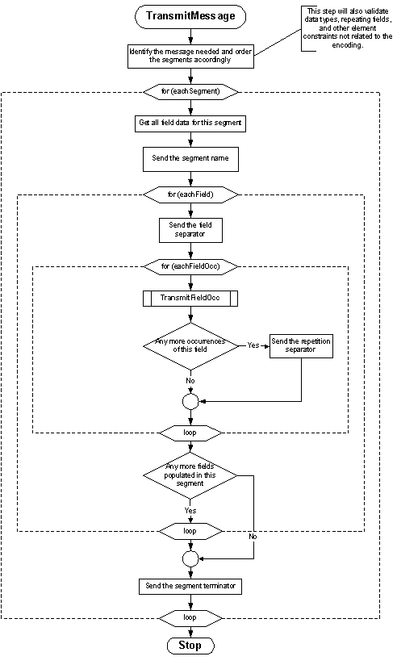
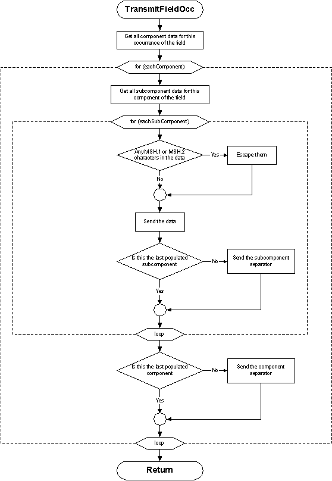
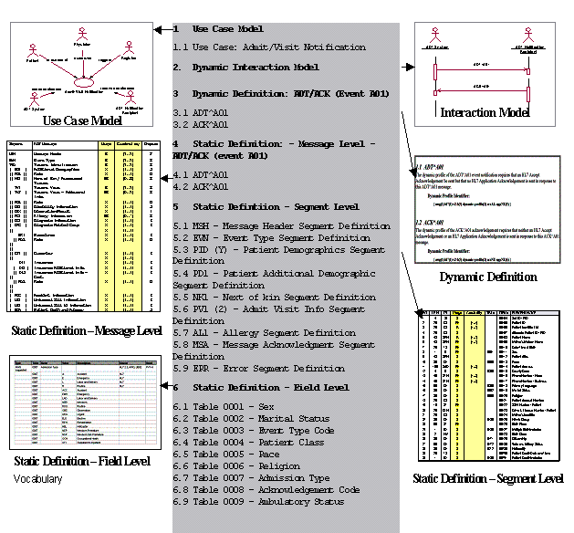
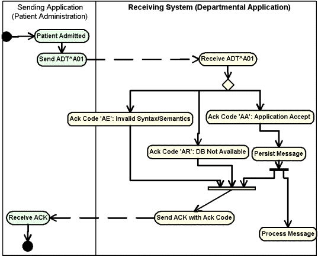
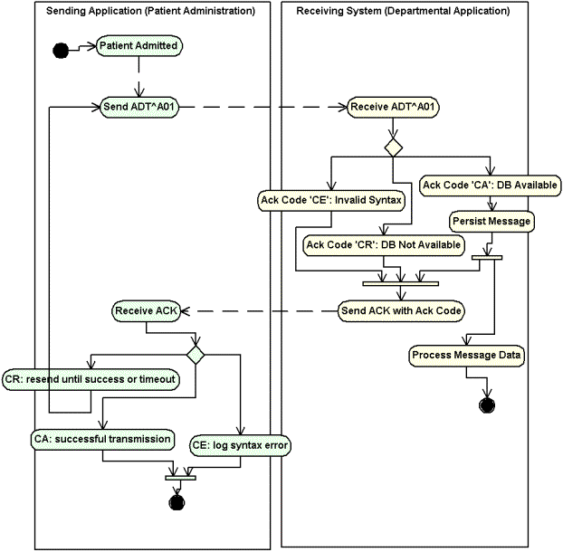
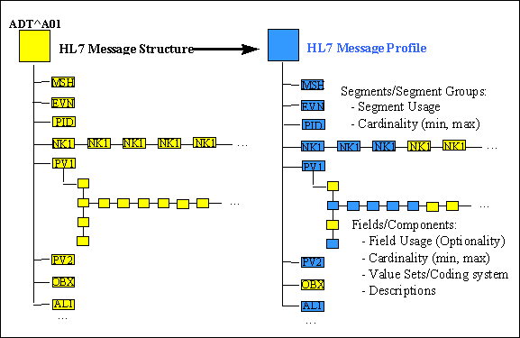

|
2. Control |
|
|
Chapter Chair
Grahame Grieve Kestral Computing Pty Ltd
Chapter Chair: and Editor:
Anthony (Tony) Julian Mayo Clinic
Chapter Chair
Doug Pratt Siemens Medical Solutions Health Services Corporation
Chapter Chair
Scott Robertson Kaiser Permanente
Chapter Chair
Rene Spronk HL7 The Netherlands
Vocabulary Facilitator
Sandy Stuart Kaiser Permanente
Conformance SIG co-chairs
Lisa Carnahan NIST
John Lyons Siemens Medical Solutions
Frank Oemig Agfa HealthCare GmbH
The Control chapter of this Standard defines the generic rules that apply to all messages. Subsequent sections define functionally specific messages to be exchanged among certain applications. The specific aspects of message definition that are addressed herein are:
the form to be used in functional chapters for describing messages. This includes their purpose, their contents, and the interrelationships among them. This form is called an abstract message definition because it is purely a level 7 (application) definition.
the HL7 encoding rules for converting an abstract message into a string of characters that comprises an actual message.
the programming procedures required to exchange messages using the HL7 specifications
the anticipated relationship with lower level protocols.
certain message segments that are components of all messages.
a single message, the acknowledgment message, that may be used unchanged in multiple applications.
The Standard is written from the assumption that an event in the real world of healthcare creates the need for data to flow among systems. The real-world event is called the trigger event. For example, the trigger event a patient is admitted may cause the need for data about that patient to be sent to a number of other systems. The trigger event, an observation (e.g., a CBC result) for a patient is available, may cause the need for that observation to be sent to a number of other systems. When the transfer of information is initiated by the application system that deals with the triggering event, the transaction is termed an unsolicited update.
Note: No assumption is made about the design or architecture of the application system creating the unsolicited update. The scope of HL7 is restricted to the specification of messages between application systems and the events triggering them.
HL7 allows the use of trigger events at several different levels of data granularity and inter-relationships. For example, most Patient Administration (ADT) trigger events concern single objects (such as an admit event, which creates a message that contains data about a single person and/or account). Other ADT trigger events are concerned with relationships between more than one object (e.g., the merge events, which specify patient or account merges). Some ADT trigger events pertain to a collection of objects that may have no significant inter-relationships (e.g., a record-oriented location-based query, whose response contains data about a collection of inpatients who are related only temporarily, by local geography).
When the unsolicited update is sent from one system to another, this acknowledgment mode specifies that it be acknowledged at the application level. The reasoning is that it is not sufficient to know that the underlying communications system guaranteed delivery of the message. It is also necessary to know that the receiving application processed the data successfully at a logical application level.
The acknowledgment may contain data of interest to the system that initiated the exchange. For example, if a patient care system has processed the trigger event a lab test is ordered for a patient, it may send an unsolicited update to a lab application identifying the patient, the test ordered, and various other information about the order. The ancillary system will acknowledge the order when it has processed it successfully. For some pairings of patient care and ancillary department systems the acknowledgment may also include the ancillary identification number that was assigned (HL7 does not require Order Entry and Results Reporting applications to interface in this manner, but it supports those that do).
The HL7 Standard makes no assumptions about the ownership of data. It also makes no requirements of its own on the subsequent action of the recipient of data, nor does it make any assumption about the design or architecture of the receiving application system. The scope of HL7 is restricted to the specification of messages between application systems, and the events triggering them. HL7 does not explicitly support, but can be used with, systems that support store and forward and data broadcast facilities (see the HL7 Implementation Support Guide).
The HL7 Standard makes no functional interpretation of the requirement that a system commit the data in a message to its database before acknowledging it. All that is required is that the receiving system accept responsibility for the data, providing the same integrity test that it would apply to data from any source. To continue the prior example, the ancillary system may acknowledge the order after placing it in an input queue, expecting to fully process the order into its database at a future time. The only assumption is that the input queue is maintained at the same level of integrity as the database.
The HL7 acknowledgment paradigm has been extended to distinguish both accept and application acknowledgments, as well the conditions under which each is required. With a positive accept acknowledgment, the receiving system commits the message to safe storage in a manner that releases the sending system from the need to resend the message. After the message has been processed by the receiving system, an application acknowledgment may be used to return the resultant status to the sending system.
Query documentation including messages, segments, special protocols, implementation considerations and examples have been moved to chapter 5. The unsolicited display messages were also moved because their message syntax is query-like in nature.
The HL7 Standard defines the messages as they are exchanged among application entities and the procedures used to exchange them. As such, it conceptually operates at the seventh level of the ISO model for Open System Interconnection (OSI). It is primarily concerned with the data content and interrelationship of messages and with communicating certain application-level error conditions.
Since the OSI protocols are not universally implemented, the HL7 Working Group is interested in providing standards that will be useful in the interim. It is also recognized that there is now, and will continue to be, interest in communicating health data among systems operating in communications environments that provide a high level of functionality, but use protocols other than ISO OSI. The universe of environments of interest to HL7 includes, but is not restricted to:
ad hoc environments that do not provide even basic transport reliability. Such environments consist of point-to-point RS-232 links, modems, and even LANs, if their connection to host computers is made via RS-232 communications links. Until OSI high level standards become truly prevalent, many healthcare interfaces will be implemented over such links. In such an environment, the HL7 Lower Level Protocols (LLP) may be used between systems to enhance the capabilities of the communications environment. The HL7 Lower Level Protocols are defined in the HL7 Implementation Guide, which is not an official part of the Standard.
environments that support a robust transport level, but do not meet the high level requirements. This includes environments such as TCP/IP, DECNET, and SNA.
ISO and proprietary networks that implement up to presentation and other high level services. IBM's SNA LU6.2 and SUN Microsystems's NFS are examples of complete proprietary networks.
two or more applications running on the same physical and/or logical machine that are not tightly integrated. In these environments, the messaging capabilities may be provided by inter-process communications services (e.g., Pipes in a UNIX System).
The HL7 Standard assumes that the communications environment will provide the following capabilities:
error free transmission. Applications can assume that they correctly received all of the transmitted bytes in the order in which they were sent. This implies that error checking is done at a lower level. However, sending applications may not assume that the message was actually received without receiving an acknowledgment message.
character conversion. If the two machines exchanging data use different representations of the same character set, the communications environment will convert the data from one representation to the other.
message length. HL7 sets no limits on the maximum size of HL7 messages. The Standard assumes that the communications environment can transport messages of any length that might be necessary. In practice, sites may agree to place some upper bound on the size of messages and may use the message continuation protocol, described later in this chapter, for messages that exceed the upper limit.
Note: Just as HL7 makes no assumptions about the design or architecture of the application systems sending and receiving HL7 messages, it makes no assumptions about the communications environment beyond those listed above. In particular, aside from the above assumptions, the communications environment, including its architecture, design and implementation, is outside the scope of HL7.
This section defines the constituents of messages and provides the methodology for defining abstract messages that are used in later chapters. Message construction rules can be found in section 2.6.
A message is the atomic unit of data transferred between systems. It is comprised of a group of segments in a defined sequence. Each message has a message type that defines its purpose. For example the ADT Message type is used to transmit portions of a patient's Patient Administration (ADT) data from one system to another. A three-character code contained within each message identifies its type. These are listed in the Message Type list, Appendix A.
The real-world event that initiates an exchange of messages is called a trigger event. See Section 2.3.1, "Trigger events," for a more detailed description of trigger events. Refer to HL7 Table 0003 - Event type for a listing of all defined trigger events. These codes represent values such as A patient is admitted or An order event occurred. There is a one-to-many relationship between message types and trigger event codes. The same trigger event code may not be associated with more than one message type; however a message type may be associated with more than one trigger event code.
All message types and trigger event codes beginning with the letter "Z" are reserved for locally defined messages. No such codes will be defined within the HL7 Standard.
A segment is a logical grouping of data fields. Segments of a message may be required or optional. They may occur only once in a message or they may be allowed to repeat. Each segment is given a name. For example, the ADT message may contain the following segments: Message Header (MSH), Event Type (EVN), Patient ID (PID), and Patient Visit (PV1).
Each segment is identified by a unique three-character code known as the Segment ID. Although the actual segments are defined in various chapters, the ID codes assigned to the various segments are listed in Appendix A.
All segment ID codes beginning with the letter Z are reserved for locally defined segments. No such codes will be defined within the HL7 Standard.
Two or more segments may be organized as a logical unit called a segment group. A segment group may be required or optional and might or might not repeat. As of v 2.5, the first segment in a newly defined segment group will be required to help ensure that unparsable messages will not be inadvertently defined.
A segment group is assigned a name that represents a permanent identifier that may not be changed.
A named segment X may occur more than once in an abstract message syntax. This differs from repetition described earlier in this section. When this occurs, the following rules must be adhered to:
If, within an abstract message syntax, a named segment X appears in two individual or group locations, and
Either appearance is optional or repeating in an individual location;
or, either appearance is optional or repeating, in a group location
then, the occurrences of segment X must be separated by at least one required segment of a different name so that no ambiguity can exist as to the individual or group location of any occurrence of segment X in a message instance.
Examples of proper segment grouping
| Example 1 | Example 2 | Example 3 |
|---|---|---|
| { SEG 1} | [ SEG1 ] | SEG1 |
| SEG2 | { | [ SEG2 ] |
| [ SEG1 ] | SEG2 | SEG3 |
|
| [ SEG1 ] | { SEG1 } |
|
| } |
|
Examples of unparsable segment grouping
| Example 1 | Example 2 | Example 3 | Example 4 |
|---|---|---|---|
| { SEG 1} | { SEG1 } | [ SEG1 ] | { SEG1 } |
| [ SEG1 ] | [ SEG2 ] | { | [ SEG2 |
|
| SEG1 | [ SEG2 ] | SEG3 ] |
|
|
| SEG1 | SEG1 |
|
|
| SEG3 |
|
|
|
| } |
|
In each of these examples it is not possible to tell which part of the message SEG1 belongs.
Definition: A field is a string of characters. Fields for use within HL7 segments are defined by HL7. A comprehensive data dictionary of all HL7 fields is provided in Appendix A.
HL7 does not care how systems actually store data within an application. When fields are transmitted, they are sent as character strings. Except where noted, HL7 data fields may take on the null value. Sending the null value, which is transmitted as two double quote marks (""), is different from omitting an optional data field. The difference appears when the contents of a message will be used to update a record in a database rather than create a new one. If no value is sent, (i.e., it is omitted) the old value should remain unchanged. If the null value is sent, the old value should be changed to null. For further details, see Section 2.6, "Message construction rules".
Version control rules regarding fields can be found in section 2.8, "Version compatibility definition".
Local extension rules regarding fields can be found in section 2.11, "Local Extension".
The various chapters of the Standard contain segment attribute tables. These tables list and describe the data fields in the segment and characteristics of their usage. In defining a segment, the following information is specified about each field:
Definition: Ordinal position of the data field within the segment. This number is used to refer to the data field in the text comments that follow the segment definition table.
In the segment attribute tables this information is provided in the column labeled SEQ.
Definition: Maximum number of characters that one occurrence of the data field may occupy.
In the segment attribute tables this information is in a column labeled LEN.
The maximum length is not of conceptual importance in the abstract message or the HL7 coding rules. The length of a field is normative. Changes to the field length may be negotiated by a site agreement such as a conformance profile. See section, 2.12, "Conformance Using Message Profiles". When this is done, it shall not render the implementation non-conformant. The receiver must be able to receive up to the maximum field length, and the sender can send up to the maximum field length.
Field length is determined based on the data type lengths, and should fall between the lower and the upper bounds for the corresponding data types. It is calculated to include the component and subcomponent separators. Because the maximum length is that of a single occurrence, the repetition separator is not included in calculating the maximum length See Section 2.5.3.5, "Repetition".
The following conventions have been applied:
The maximum length of the data field shall be expressed as a number.
If the maximum length needs to convey the notion of a Very Large Number, the number 65536 should be displayed to alert the user. This convention takes the place of the practice in versions prior to 2.4 of abbreviating this expression as 64K.
If the maximum length cannot be definitively expressed because the data type for the field is variable, the symbolic number 99999 should be displayed. This convention takes the place of the practice in versions prior to 2.4 of displaying the notation ‚??varies‚?ù or some other non-numeric description.
In v 2.5 maximum lengths are being assigned to data types. See HL7 Table 0440 - Data Types.
Definition: The basic building block used to construct or restrict the contents of a data field.
In the segment attribute tables this information is provided in the column labeled DT. If the data type of the field is variable, the notation ‚??varies‚?ù will be displayed.
There are a number of data types defined by HL7. See section 2.16, "Data types"
Definition: Whether the field is required, optional, or conditional in a segment.
In the segment attribute tables this information is provided in the column labeled OPT.
The designations for optionality are:
R
-
required
O
-
optional
C
-
conditional on the trigger event or on some other field(s). The field definitions following the segment attribute table should specify the algorithm that defines the conditionality for this field.
X
-
not used with this trigger event
B
-
left in for backward compatibility with previous versions of HL7. The field definitions following the segment attribute table should denote the optionality of the field for prior versions.
W
-
withdrawn
Note: For Versions 2.3 and higher: the optionality of fields should be explicitly documented in the segment field definitions that follow each segment definition table; if the optionality of fields within a segment changes depending on the trigger event, that optionality should also be explicitly documented.
For version 2.5 and higher, the optionality, table references, and lengths of data type components are supplied in component tables of the data type definition. The component definitions that follow the component table will elaborate on the optionality and table references. Where needed, additional detailed field definitions will follow the formal segment attribute tables. (See also Sections 2.5.4, "Message delimiters," 2.6, "Message construction rules," 2.16, "Data types").
Definition: Whether the field may repeat. The value that appears in the repetitions column is the maximum number of allowed occurrences, e.g., a value of '3' would mean that the field can have '3 occurrences'; if unspecified, there is only one occurrence, i.e. cannot repeat.
In the segment attribute tables this information is provided in the column labeled RP/#.
The designations for Repetition are:
N or blank
-
no repetition
Y
-
the field may repeat an indefinite or site-determined number of times
(integer)
-
the field may repeat up to the number of times specified by the integer
Each occurrence may contain the number of characters specified by the field's maximum length. See Section 2.5.3.2, "Maximum length".
Usage Note: For improved readability some technical committees opt to leave the Repetition fields blank to indicate that the field may NOT repeat. A blank may NOT be construed to mean that the field may optionally repeat.
As of v2.5 the Repetition column is to be left blank if the field may NOT repeat.
Definition: The table attribute of the data field definition specifies the HL7 identifier for a set of coded values.
In the segment attribute tables, the table identifier is provided in the column labeled TBL#. If this attribute is not valued or blank, there is not a table of values defined for the field.
A number of conventions have been applied to this attribute of the data field definition.
If more than one table is applicable, the format xxxx/yyyy will be used to so designate multiple tables. Details on multiple tables will be specified in field or data type notes.
If the field is of data type ID or IS a table number will be allocated even if, in the case of IS, there may be a notation "No Suggested values".
If the field is of data type CE, CF, CNE or CWE and one or more externally or locally defined tables may be used, the symbolic number 9999 will appear in the column. This is to indicate that table values are used, but no HL7/User-defined table can be allocated. The narrative may constrain which external tables can be used.
Tables embedded in field components or subcomponents will not be cited in the attribute column.
Tables embedded in data types are defined, save for the exceptions in point 2 below, in the data type's component table in section 2.A Data Types. They may, however, be constrained in the field note section. The field note definition supercedes the definition in the data type section.
Tables embedded in fields with a data type of CE, CF, CNE, or CWE are only defined in the field notes section.
Values for HL7 tables shall not contain the embedded "suggested delimiters" delineated in section, 2.5.4, "Message delimiters".
HL7 defines table values in 3 ways: HL7 defined, user-defined and externally defined.
User-defined Tables: A user-defined table is a set of values that are locally or site defined. This accommodates certain fields, like PV1-3 - Assigned patient location, that will have values that vary from institution to institution. Even though these tables are not defined in the Standard, they are given a user-defined table number to facilitate implementations. HL7 sometimes publishes suggested values that a site may use as a starter set (e.g., table 0001- Sex). The IS data type is often used to encode values for these tables. Note that some of these tables (e.g., table 0302 - Point of care) may reference common master files.
There are some user-defined tables that contain values that might be standardized across institutions but for which no applicable official standard exists. For these a set of suggested values may be listed in Appendix A. These suggested values appear in the text in a standard box format (e.g., HL7 Table 0062 - Event Reason in Section 3.4.1.4, ‚??Event reason code‚?ù). It is recommended that these values be used where applicable within an institution and serve as a basis for extensions as required. These values may, however, be redefined locally. The appropriate functional committee within HL7 solicits suggestions for additional values from institutions that are applying the Standard.
HL7 Tables: An HL7 table is a set of values defined and published by HL7. They are a part of the HL7 Standard because they affect the interpretation of the messages that contain them. These values may not be redefined locally; however, the table itself may be extended to accommodate locally defined values. This is particularly applicable in the case of HL7 table 0003 - Event Type. The ID data type is most often used to encode values for HL7 tables. The values are listed in Appendix A. These HL7 tables also appear in the text in a standard box format (e.g., HL7 table 0003 Event Type).
External Tables: An external table is a set of coded values defined and published by another standards organization. External tables are used to populate fields like FT1-19-Diagnosis Code - FT1. Another example, the encoding of clinical observations using LOINC codes. The CE CF, CNE and CWE data type are used to represent values for these fields.
External tables arise from applications where the concepts and possibly the codes are established by external agencies due to regulatory requirements or agreements between HL7 and other Standards Developing Organizations. They may be published by HL7 on behalf of other organizations. Their contents are not subject to approval by HL7 ballot. Such tables will be published with HL7 Standards. However, they may be updated more frequently than HL7 Standards.
An external table may be imported into the HL7 standard subject to specific license or copyright requirements of the supplier/author. In this case the table will be an HL7-defined table. HL7 users will need to abide by the licensing and copyright requirements of the source when applicable.
The data type for the field will be CWE if 1) other tables are allowed in the field or 2) the external table may be locally extended or 3) when the code may be replaced by local text.
The data type for the field will be CNE if 1) no other table is allowed in the field and 2) the external table may not be locally extended and 3) text may not replace the code. A CNE field must have an HL7 defined or external table associated with it. It must be specified in the standard.
Local Tables: A local table is a table with a non-HL7 assigned table identifier and which contains a set of locally or site defined values. It may be locally assigned to local fields in Z segments or to HL7 fields having a CWE data type.
Definition: a small integer that uniquely identifies the data item throughout the Standard. In the segment definition this information is provided in the column labeled ITEM #.
Definition: Descriptive name for the data item. In the segment attribute tables this information is provided in the column labeled ELEMENT NAME.
When the same name is used in more than one segment, it must have the same data type and semantic meaning in each segment as well as the same ID number. To deal with any ambiguities arising from this convention, whenever a field is referenced herein, the segment name and position must always be included.
In constructing a message, certain special characters are used. They are the segment terminator, the field separator, the component separator, subcomponent separator, repetition separator, and escape character. The segment terminator is always a carriage return (in ASCII, a hex 0D). The other delimiters are defined in the MSH segment, with the field delimiter in the 4th character position, and the other delimiters occurring as in the field called Encoding Characters, which is the first field after the segment ID. The delimiter values used in the MSH segment are the delimiter values used throughout the entire message. In the absence of other considerations, HL7 recommends the suggested values found in Figure 2-1 delimiter values.
At any given site, the subset of the possible delimiters may be limited by negotiations between applications. This implies that the receiving applications will use the agreed upon delimiters, as they appear in the Message Header segment (MSH), to parse the message.
Note: The binary representation of the delimiter characters will vary with the character set used in the message.
Figure 2-1. Delimiter values
| Delimiter | Suggested Value | Encoding Character Position | Usage |
|---|---|---|---|
| Segment Terminator |
| - | Terminates a segment record. This value cannot be changed by implementers. |
| Field Separator | | | - | Separates two adjacent data fields within a segment. It also separates the segment ID from the first data field in each segment. |
| Component Separator | ^ | 1 | Separates adjacent components of data fields where allowed. |
| Subcomponent Separator | & | 4 | Separates adjacent subcomponents of data fields where allowed. If there are no subcomponents, this character may be omitted. |
| Repetition Separator | ~ | 2 | Separates multiple occurrences of a field where allowed. |
| Escape Character | \ | 3 | Escape character for use with any field represented by an ST, TX or FT data type, or for use with the data (fourth) component of the ED data type. If no escape characters are used in a message, this character may be omitted. However, it must be present if subcomponents are used in the message. |
Note: These message construction rules define the standard HL7 encoding rules, creating variable length delimited messages. Although only one set of encoding rules has been defined as a standard since HL7 Version 2.3, other encoding rules are possible (but since they are non-standard, they may only be used by a site-specific agreement).
procedure transmit_message ( data ) {
identify_message_needed;
validate( data );
order_segments( data, segment_list );
foreach segment in ( segment_list ) {
print segment.name; /* e.g., MSH */
/* gather all data for fields */
foreach field in ( fields_of( segment ) ) {
print field separator; /* e.g., | */
/* gather occurrences (may be multiple only for fields that are allowed to repeat */
foreach occurrence in ( occurrences_of( field ) ) {
transmit_occurrence( occurrence );
if not last ( populated occurrence ) print repetition_separator; /* e.g., ~ */
}
break if last ( populated field );
}
print segment_terminator; /* always<cr>! */
}
return;
}
procedure transmit_occurrence ( occurrence ) {
/* gather populated components */
foreach component in ( components_of( occurrence ) ) {
get_subcomponent_data( component );
/* gather all data for subcomponents */
foreach subcomponent in ( subcomponents_of( component ) ) {
/* escape the field separator */
substitute( field_separator, \F\ );
/* escape the encoding characters */
substitute( component_separator, \S\ );
substitute( repetition_separator, \R\ );
substitute( escape_character, \E\ );
substitute( subcomponent_separator, \T\ );
print subcomponent;
if not last ( populated subcomponent ) print subcomponent_separator; /* e.g., & */
}
if not last ( populated component ) print component_separator; /* e.g., ^ */
}
return;
}
The flow charts on the following pages represent another view of the message construction rules. The first shows the rules for transmitting a message; the second shows transmitting field occurrences.


The following rules apply to receiving HL7 messages and converting their contents to data values:
ignore segments, fields, components, subcomponents, and extra repetitions of a field that are present but were not expected.
treat segments that were expected but are not present as consisting entirely of fields that are not present.
treat fields and components that are expected but were not included in a segment as not present.
If a segment is to be continued across messages, use the extended encoding rules. These rules are defined in terms of the more general message continuation protocol (see Section 2.10.2, "Continuation messages and segments").
When a field of type TX, FT, or CF is being encoded, the escape character may be used to signal certain special characteristics of portions of the text field. The escape character is whatever display ASCII character is specified in the <escape character> component of MSH-2-encoding characters. For purposes of this section, the character \ will be used to represent the character so designated in a message. An escape sequence consists of the escape character followed by an escape code ID of one character, zero (0) or more data characters, and another occurrence of the escape character.
The escape sequences for field separator, component separator, subcomponent separator, repetition separator, and escape character are also valid within an ST data field.
The following escape sequences are defined:
2.6 MESSAGE CONSTRUCTION RULES
2.6.1 Rules for the sender
2.6.1.1 Message Construction Pseudocode
2.6.1.2 Message Construction Flow Chart
2.6.2 Rules for the recipient
2.6.3 Encoding rules notes
2.7 USE OF ESCAPE SEQUENCES IN TEXT FIELDS
2.7.1 Formatting codes
| \H\ | start highlighting |
| \N\ | normal text (end highlighting) |
| \F\ | field separator |
| \S\ | component separator |
| \T\ | subcomponent separator |
| \R\ | repetition separator |
| \E\ | escape character |
| \Xdddd...\ | hexadecimal data |
| \Zdddd...\ | locally defined escape sequence |
No escape sequence may contain a nested escape sequence.
The following HL7 escape sequences are defined to support multiple character sets for fields, components and sub-components that are defined as data types FT, ST, and TX. They allow HL7 parsers to use escape codes (defined in the standards used below), without breaking, and without being non-conformant to the HL7 escape paradigm defined in this section.
\Cxxyy\ single-byte character set escape sequence with two hexadecimal values, xx and yy, that indicate the escape sequence defined for one of the character repertoires supported for the current message (i.e., ISO-IR xxx).
\Mxxyyzz\ multi-byte character set escape sequence with three hexadecimal values, xx, yy and zz. zz is optional.
Common character set escape sequences include the following which are defined in the standards mentioned:
Single-byte character sets:
| \C2842\ | ISO-IR6 G0 (ISO 646 : ASCII) |
| \C2D41\ | ISO-IR100 (ISO 8859 : Latin Alphabet 1) |
| \C2D42\ | ISO-IR101 (ISO 8859 : Latin Alphabet 2) |
| \C2D43\ | ISO-IR109 (ISO 8859 : Latin Alphabet 3) |
| \C2D44\ | ISO-IR110 (ISO 8859 : Latin Alphabet 4) |
| \C2D4C\ | ISO-IR144 (ISO 8859 : Cyrillic) |
| \C2D47\ | ISO-IR127 (ISO 8859 : Arabic) |
| \C2D46\ | ISO-IR126 (ISO 8859 : Greek) |
| \C2D48\ | ISO-IR138 (ISO 8859 : Hebrew) |
| \C2D4D\ | ISO-IR148 (ISO 8859 : Latin Alphabet 5) |
| \C284A\ | ISO-IR14 (JIS X 0201 -1976: Romaji) |
| \C2949\ | ISO-IR13 (JIS X 0201 : Katakana) |
Multi-byte codes:
| \M2442\ | ISO-IR87 (JIS X 0208 : Kanji, hiragana and katakana) |
| \M242844\ | ISO-IR159 (JIS X 0212 : Supplementary Kanji) |
In designating highlighting, the sending application is indicating that the characters that follow somehow should be made to stand out, but leaving the method of doing so to the receiving application. Depending on device characteristics and application style considerations, the receiving application may choose reverse video, boldface, underlining, blink, an alternate color or another means of highlighting the displayed data. For example the message fragment:
DSP| TOTAL CHOLESTEROL \H\240*\N\ [90 - 200]
might cause the following data to appear on a screen or report:
TOTAL CHOLESTEROL 240* [90 - 200]
whereas another system may choose to show the 240* in red.
The special character escape sequences (\F\, \S\, \R\, \T\, and \E\) allow the corresponding characters to be included in the data in a text field, though the actual characters are reserved. For example, the message fragment
DSP| TOTAL CHOLESTEROL 180 \F\90 - 200\F\
DSP| \S\----------------\S\
would cause the following information to be displayed, given suitable assignment of separators:
TOTAL CHOLESTEROL 180 |90 - 200|
^----------------^
When the hexadecimal escape sequence (\Xdddd...\) is used the X should be followed by 1 or more pairs of hexadecimal digits (0, 1, . . . , 9, A, . . . , F). Consecutive pairs of the hexadecimal digits represent 8-bit binary values. The interpretation of the data is entirely left to an agreement between the sending and receiving applications that is beyond the scope of this Standard.
If the field is of the formatted text (FT) data type, formatting commands also may be surrounded by the escape character. Each command begins with the "." (period) character. The following formatting commands are available:
2.7.3 Highlighting
2.7.4 Special character
2.7.5 Hexadecimal
2.7.6 Formatted text
|
.sp |
End current output line and skip |
| .br | Begin new output line. Set the horizontal position to the current left margin and increment the vertical position by 1. |
| .fi | Begin word wrap or fill mode. This is the default state. It can be changed to a no-wrap mode using the .nf command. |
| .nf | Begin no-wrap mode. |
|
.in |
Indent |
|
.ti |
Temporarily indent |
| .sk < number> |
Skip |
| .ce | End current output line and center the next line. |
The component separator that marks each line defines the extent of the temporary indent command (.ti), and the beginning of each line in the no-wrap mode (.nf). Examples of formatting instructions that are NOT included in this data type include: width of display, position on page or screen, and type of output devices.
Figure 2-3 is an example of the FT data type from a radiology impression section of a radiology report:
Figure 2-3. Formatted text as transmitted
| \.in+4\\.ti-4\ 1. The cardiomediastinal silhouette is now within normal limits.\.br\\.ti-4\ 2. Lung fields show minimal ground glass appearance.\.br\\.ti-4\ 3. A loop of colon visible in the left upper quadrant is distinctly abnormal with the appearance of mucosal effacement suggesting colitis.\.in-4\|
Figure 2-4 shows one way of presenting the data in Figure 2-3. The receiving system can create many other interpretations by varying the right margin.
Figure 2-4. Formatted text in one possible presentation
The cardiomediastinal silhouette is now within normal limits.
Lung fields show minimal ground glass appearance.
A loop of colon visible in the left upper quadrant is distinctly abnormal with the appearance of mucosal effacement suggesting colitis.
When the local escape sequence (\Zdddd...\) is used the Z should be followed by characters that are valid in a TX field. The interpretation of the data is entirely left to an agreement between the sending and receiving applications that is beyond the scope of this Standard.
The rules, described in section 2.6 "Message construction rules", for receiving HL7 messages and converting their contents to data values allow the following definition of a backward compatibility requirement between the 2.x versions of HL7:
Note: If an issue is not covered explicitly under these rules, no assumption should be made that the change is allowed.
The keys to understanding version compatibility are the following 2 axioms, plus the processing rules which state that unexpected information should be discarded.
Old receivers receiving new messages should be able to continue receiving messages without error.
New receivers should be able to understand old messages.
This section elaborates on what the kinds of changes can be done that satisfies these axioms. Only HL7 changes introduced in new versions are included. Local extensions are discussed in section 2.11, "Local Extension".
A new message or a new constituent of an HL7 message may be introduced as described below. A sending system should be able to send a new message or new constituent; the receiver, regardless of its version level, must ignore any message or message constituent it is not expecting without generating an application failure. This does not preclude a receiver notifying the sender that additional element was ignored, but the receiving application should not fail just from the existence of additional element.
New messages may be introduced.
A new segment group may be defined.
The first segment in a newly-defined segment group, as of v 2.5, must be marked as required.
New segments may be introduced to an existing message. In general these will be introduced at the end of a message or a segment group, but they may be introduced elsewhere within the message if the segment hierarchy makes this necessary.
Care must be taken when introducing a new segment if this results in a situation in which a named segment X appears in two individual or group locations. See section 2.6 Segment definition.
New fields may be added at the end of a segment.
A new data type may be introduced.
New components may be added at the end of a data type.
A new table may be introduced.
Allowable changes to messages or message constituents can be categorized as name, data type, optionality, repeatability, length or definition changes.
The descriptive text name of a message or message constituent (except for segment group name) may be changed. This should have no impact on either the sender's ability to transmit a message or the receiver's ability to receive and understand the message. Reasons for changing the descriptive text name include: 1) clarify a misleading name, and 2) encompassing a broader use without jeopardizing current use.
The data type of a field or data type component may be changed. A sending system should be able to send the modified field or data type; the receiver, regardless of its version level, should be able to understand the message and to ignore any message constituent it is not expecting.
The data type of the field may be changed provided that the components of the new data type have the same structure and interpretation as the old data type. For example, an IS data type may be changed to a CE, but a PPN data type cannot be changed to a PN. An NM data type cannot be changed to an ST data type.
For existing fields in existing segments, data types may be changed if the leftmost (prior version) part of the field has the same meaning as it had in the prior version of HL7. This is in accordance with the rules governing the addition of new components and subcomponents described in the section above. In other words, if the new parts of the field (those that are part of the new data type) are ignored, what remains is the old field (defined by the old data type), which has the same meaning as it had in the prior version of HL7.
If a data type component has its data type changed, the structure and interpretation must remain the same as the pre-existing component. Any new component is added at the end of the data type.
The optionality of a message constituent may be changed. A sending system should be able to send the modified field; the receiver, regardless of its version level, should be able to understand the message. This pertains as follows:
Existing optional segment groups may be made required.
Existing optional segments may be made conditional or required.
Existing optional fields may be made conditional or required.
Existing required fields may be made conditional if a new trigger event has been applied. The condition must be specified such that the field remains required for the pre-existing trigger events.
Existing optional components of a data type may be made conditional or required.
The repeatability of a message constituent may be changed. A sending system should be able to send the modified message constituent; the receiver, regardless of its version level, should be able to understand the message. Note that if a non-repeating message constituent is made repeating, information sent in the new repetitions may be lost to the recipient who is not expecting them.
If HL7 has given, or will give, semantic meaning to the first instance, to allow backward compatibility, the first instance of the repeating constituent shall have the same meaning as the non-repeating constituent had in the prior version of HL7. In this way, a receiving application that interprets the message based upon the prior standard would continue to find the same intent communicated in the message.
If HL7 has not given, and will/can not give, semantic meaning to the first instance, and one or more implementation-applied business rules exist to select one of several occurrences to populate a non-repeating constituent, those same rules should be applied when a newer version of the standard allows for repetition of the constituent. By applying the prior business rules to determine the first occurrence of a repeating constituent, a receiving application that interprets the message based upon the prior standard would continue to find the same intent communicated in the message.
If, in the judgment of the owner/author of the standard section in question, changing a message constituent from non-repeating to repeating poses logical, parsing, business, or other compatibility issues, the owner/author may elect to create a new structure to eliminate the compatibility concern.
For example, if allowing a segment to repeat implies a change to the business intent of the message, the technical committee responsible can elect to define a new message structure (as a new message/trigger) and retain the old structure for backward compatibility.
This pertains as follows:
A segment group may change from non-repeating to repeating, subject to the backward compatibility concerns expressed above.
A segment group may NOT be changed from repeating to non-repeating.
A segment may be changed from non-repeating to repeating, subject to the backward compatibility concerns expressed above.
A segment may NOT be changed from repeating to non-repeating.
A field may be changed from non-repeating to repeating, subject to the backward compatibility concerns expressed above. A field may NOT be changed from repeating to non-repeating.
The length of a field, data type or data type component may be increased.
Table definition may change.
A table may be changed from user-defined to HL7 defined or externally defined.
A table may be changed from HL7 defined to an externally defined table. When this occurs, the data type of the field should be changed to a CNE or CWE.
Any required, optional or conditional constituent of an HL7 message, including the message itself, may be deprecated. This means that one of the following situations has occurred:
The message or message constituent no longer has a meaningful purpose
The message or message constituent has been replaced by a better method
Language will be inserted stating the fact of deprecation, the version in which the deprecation occurred, and what message or message constituent, if any, replaces it. The phrase ‚??Retained for backward compatibility only in version 2.x; refer to section n.m instead‚?ù will be the standard language for such an occurrence.
The fact of deprecation should not affect either the sender or the receiver because the message or message constituent is retained for backward compatibility. Implementers, by site agreement, may agree to not support deprecated message constituents.
The following are allowed:
A message may be deprecated.
A trigger event may be deprecated.
A message structure may be deprecated.
A segment in an existing message may be deprecated. Implementers, by site agreement, may agree to not support deprecated segments. If the segment that is to be deprecated has dependents the entire segment group must be deprecated. For example, in a group [{ABC[DEF][{GHI}]], DEF and/or GHI may be deprecated, but ABC cannot be deprecated without deprecating the whole.
A field may be deprecated by HL7. Implementers, by site agreement, may agree to not use deprecated fields.
A data type may be deprecated provided all fields referencing it have been deprecated or there is an explicit statement that the data type is not to be used in any field defined in the future.
A data type component may be deprecated.
A table may be deprecated. This includes HL7 tables, user-defined tables, imported external tables and reference to external tables.
An entry in an HL7-defined table may be deprecated. The table itself should be reviewed if it contains a substantial number of deprecated members.
An entry in an imported external table may not be deprecated.
A message or message constituent may be removed from the standard when criteria described in this section are met. HL7 will track old names so they are not re-used.
Note: To refer to the detail of a withdrawn message constituent, the reader will need to review the appropriate earlier version of the standard. By site agreement senders and receivers may agree to continue to use messages and/or message constituents that have been removed.
A message constituent may be immediately removed from the standard based on the following criteria (immediately means in the same version in which the criteria are met.).
A message structure may be removed immediately provided no message references it in the standard. Care must be taken lest a message structure is prematurely removed if the associated trigger event that contributed to its name is removed. For example, if a message structure ABC_D01 is associated with trigger events D01, D02 and D03 and D01 is changed and becomes associated with another existing message structure DEF_E01, the message structure ABC_D01 is still active and valid for trigger events D02 and D03.
A segment may be removed immediately provided no message references it in the standard.
A data type may be removed immediately provided no fields reference it. This occurs when the data type for a field is changed to a new data type that incorporates the components of the old one.
A table may be removed provided all fields and components, where the table has been used have been removed. This applies to HL7, user-defined and external tables. It is recognized that this might have a ripple effect.
A message constituent, except as noted in points c, d and e below, will be withdrawn and removed, no sooner than, after 2 versions in a deprecated state. For example, if a message was originally deprecated in v 2.2, its definition can be removed when v 2.5 is published.
A message type and its definition may be removed.
A trigger event and its definition may be removed.
A segment group in an existing message may be removed.
A segment in an existing message may be removed.
A deprecated field in an existing segment may NOT be removed from the standard. However, no sooner than, after 2 versions in a deprecated state, the field will be marked as withdrawn and all explanatory narrative will be removed
A deprecated component in an existing data type may NOT be removed from the standard. However, no sooner than, after 2 versions in a deprecated state, the component will be marked as withdrawn and all explanatory narrative will be removed.
A deprecated member of an existing HL7 table may NOT be removed from the standard. However, no sooner than, after 2 versions in a deprecated state, the table member will be marked as withdrawn and all explanatory narrative will be removed from the description and comment column.
Early adoption of HL7 changes that have been approved by the technical committee for the next membership ballot is a common practice and is not prohibited, but carries risk. Such changes may be rejected or modified in the balloting process. One example is that the change may pass but may be positioned differently in the segment or data type.
Technical corrections may be applied between versions on a case-by-case basis. These corrections will be published on the HL7 website. The following meet criteria for technical correction:
Spelling correction
Incorrect section reference
Transcription error in an imported external table
Correction of an inconsistency between a segment attribute table and the field narrative
Erroneous examples
Erroneous/misleading descriptions
The processing rules described here apply to all exchanges of messages, whether or not the HL7 encoding rules or Lower Layer Protocols are used. They represent the primary message processing mode. The user may use either the original processing rules, described in section 2.9.2 or the enhanced processing rules, described in section 2.9.3.
Note: The MCF - Delayed Acknowledgement message has been removed from the standard. It was deprecated in v 2.2. Accordingly, the narrative notes regarding deferred processing have been removed from this section.
Certain variants exist and are documented elsewhere:
an optional sequence number protocol. Refer to section 2.10.1.
an optional protocol for continuing a very long message. Refer to section 2.10.2.
Because the protocol describes an exchange of messages, it is described in terms of two entities, the initiating and responding systems. Each is both a sender and receiver of messages. The initiating system sends first and then receives, while the responding system receives and then sends.
In overview this exchange proceeds as follows:
Message Exchange
| Step | Process | Comment |
|---|---|---|
| Step 1 | Initiator constructs an HL7 message from application data and sends it to the responding system |
|
| Step 2 | Responder receives message and processes it based on rules | The rules differ based on whether the original acknowledge mode or the enhanced acknowledgement mode is followed |
| Step 3 | Responder sends response message |
|
| Step 4 | Initiator processes response message |
|
| Field | Notes |
|---|---|
| MSH-3-sending application |
|
| MSH-4-sending facility |
|
| MSH-5-receiving application |
|
| MSH-6-receiving facility |
|
| MSH-7-date/time of message |
|
| MSH-9-message type |
|
| MSH-10-message control ID | Unique identifier used to relate the response to the initial message. |
| MSH-11-processing ID |
|
| MSH-12-version ID |
|
| MSH-13-sequence number |
|
| MSH-14-continuation pointer | Used in implementation of message continuation protocol. See Section 2.10.2, "Continuation messages and segments". Also see chapter 5. |
Certain other fields in the MSH segment are required for the operation of the HL7 encoding rules; they will not be relevant if other encoding rules are employed.
The event code in the second component of MSH-9-message type is redundantly shown elsewhere in some messages. For example, the same information is in the EVN segment of the ADT message. This is for compatibility with prior versions of the HL7 protocol. Newly defined messages should only show the event code in MSH-9-message type.
Upon receipt of the message, when the Original Acknowledgement rules are used, the protocol software in the responding system validates it against at least the following criteria:
Note: Both MSH-15-accept acknowledgment type and MSH-16-application acknowledgment type are null or not present.
the value in MSH-9-message type is one that is acceptable to the receiver.
the value in MSH-12-version ID is acceptable to the receiver.
the value in MSH-11-processing ID is appropriate for the application process handling the message.
If any of these edits fail, the protocol software rejects the message. That is, it creates an ACK message with AR in MSA-1-acknowledgment code.
If successful, the process moves to the next step.
Upon successful validation by the responding system, the message is passed to the receiving application, which performs one of these functions:
process the message successfully, generating the functional response message with a value of AA in MSA-1-acknowledgment code.
send an error response, providing error information in functional segments to be included in the response message with a value of AE in MSA-1-acknowledgment code.
fail to process (reject) the message for reasons unrelated to its content or format (system down, internal error, etc.). For most such problems it is likely that the responding system will be able to accept the same message at a later time. The implementers must decide on an application-specific basis whether the message should be automatically sent again. The response message contains a value of AR in MSA-1-acknowledgment code.
The MSH segment in the response is constructed anew following the rules used to create the initial message described above. In particular, MSH-7-date/time of message and MSH-10-message control ID refer to the response message; they are not echoes of the fields in the initial message. MSH-5-receiving application, MSH-6-receiving facility, and MSH-11-processing ID contain codes that are copied from MSH-3-sending application, MSH-4-sending facility and MSH-11-processing ID in the initiating message.
In all the responses described above, the following values are put in the MSA segment. Note that the field definitions for the MSA segment fields are in Section 2.15.8.
| Field | Notes |
|---|---|
| MSA-1-acknowledgment code | As described above. |
| MSA-2-message control ID | MSH-10-message control ID from MSH segment of incoming message. |
| MSA-4-expected sequence number | As described in Section 2.10.1, "Sequence number protocol," (if the sequence number protocol is being used). |
| ERR segment fields | Refer to section 2.15.5. |
The receiving application then passes the response message back to the responding system for the next step in the process.
Upon receiving the response message from the receiving application, the responding system transmits it to the initiating system.
The initiator processes the response message.
the responding system receives the message and commits it to safe storage. This means that the responding system accepts the responsibility for the message in a manner that releases the sending system from any obligation to resend the message. The responding system now checks the message header record to determine whether or not the initiating system requires an accept acknowledgment message indicating successful receipt and secure storage of the message. If it does, the accept acknowledgment message is constructed and returned to the initiator.
at this point, the requirements of the applications involved in the interface determine whether or not more information needs to be exchanged. This exchange is referred to as an application acknowledgment and includes information ranging from simple validation to a complex application-dependent response. If the receiving system is expected to return application-dependent information, it initiates another exchange when this information is available. This time, the roles of initiator and responder are reversed.
Upon receipt of the message, when the Enhanced Acknowledgement rules are used, the protocol software in the responding system makes an initial determination as to whether or not the message can be accepted, based on factors such as:
Note: At least one of MSH-15-accept acknowledgment type or MSH-16-application acknowledgment type is not null.
the status of the interface
the availability of safe storage onto which the message can be saved
the syntactical correctness of the message, if the design of the receiving system includes this type of validation at this phase
the values of MSH-9-message type, MSH-12-version ID, and MSH-11-processing ID, if the design of the receiving system includes this type of validation at this phase
It then examines the Message Header segment (MSH) to determine whether or not the initiating system requires an accept acknowledgment.
A general acknowledgement message is not always required by the initiating system, but if it is the responding system sends one of the following:
a commit accept (CA) in MSA-1-acknowledgment code if the message can be accepted for processing
a commit reject (CR) in MSA-1-acknowledgment code if the one of the values of MSH-9-message type, MSH-12-version ID or MSH-11-processing ID is not acceptable to the receiving application
a commit error (CE) in MSA-1-acknowledgment code if the message cannot be accepted for any other reason (e.g., sequence number error)
The MSH segment in the response is constructed anew following the rules used to create the initial message described above. In particular, MSH-7-date/time of message and MSH-10-message control ID refer to the response message; they are not echoes of the fields in the initial message. MSH-5-receiving application, MSH-6-receiving facility, and MSH-11-processing ID contain codes that are copied from MSH-3-sending application, MSH-4-sending facility and MSH-11-processing ID in the initiating message.
For this response, the following values are put in the MSA segment. Note that the field definitions for the MSA segment fields are in Section 2.15.8, 'MSA - message acknowledgment segment":
| Field | Notes |
|---|---|
| MSA-2-message control ID | MSH-10-message control ID from the incoming message. |
| MSA-1-acknowledgment code | As described above. |
| MSA-4-expected sequence number | As described in Section 2.10.1, "Sequence number protocol" (if the sequence number protocol is being used). |
| ERR segment fields | Refer to section 2.15.5. |
Note: MSH-15-accept acknowledgment type and MSH-16-application acknowledgment type are not valued (not present or null). At this point, the accept portion of this message exchange is considered complete.
If the message header segment indicates that the initiating system also requires an application acknowledgment, this will be returned as the initial message of a later exchange.
For this message, the receiving system acts as the initiator. Since the message it sends is application-specific, the layouts of these application-level response messages are defined in the relevant application-specific chapter. If needed, this application acknowledgment message can itself require (in MSH-15-accept acknowledgment type) an accept acknowledgment message (MSA). MSH-16-application acknowledgment type, however, is always null, since the protocol does not allow the application acknowledgment message to have an application acknowledgment.
For this response, the following values are put in the MSA segment. Note that the field definitions for the MSA segment fields are in Section 2.15.8, "MSA - message acknowledgment segment".
| Field | Notes |
|---|---|
| MSA-2-message control ID | Identifies the initial message from the original initiating system as defined in Section 2.9.1, "Message initiation". |
| MSA-1-acknowledgment code | Uses the application (processing) acknowledgment codes as described in Section 2.15.8.1. |
| MSA-3-text message | Text description of error. |
| ERR-1-Error Code and Location | As described in section 2.15.5.1. Populated if an error condition is found. |
At this point, the application acknowledgment portion of this message exchange is considered complete.
If the processing on the receiving system goes through multiple stages, chapter-defined messages may be used to relay status or informational changes to other systems (including the original initiating system). Such messages are not part of the acknowledgment scheme for the original message, but are considered to be independent messages triggered by events on the (original) responding system.
Note: The original acknowledgment protocol is equivalent to the enhanced acknowledgment protocol with MSH-15-accept acknowledgment type = NE and MSH-16-application acknowledgment type = AL, and with the application acknowledgment message defined so that it never requires an accept acknowledgment (MSH-15-accept acknowledgment type = NE).
This section contains several extensions to the basic HL7 message protocol. These extensions represent implementation choices, and are to be used on a site-specific and application-specific basis as needed.
For certain types of data transactions between systems the issue of keeping databases synchronized is critical. An example is an ancillary system such as lab, which needs to know the locations of all inpatients to route stat results correctly. If the lab receives an ADT transaction out of sequence, the census/location information may be incorrect. Although it is true that a simple one-to-one acknowledgment scheme can prevent out-of-sequence transactions between any two systems, only the use of sequence numbers can prevent duplicate transactions.
Note: Although this sequence number protocol is limited to the use of sequence numbers on a single transaction stream between two applications, this sequencing protocol is sufficiently robust to allow the design of HL7-compatible store-and-forward applications.
initial conditions:
the system receiving the data stream is expected to store the sequence number of the most recently accepted transaction in a secure fashion before acknowledging that transaction. This stored sequence number allows comparison with the next transaction's sequence number, and the implementation of fault-tolerant restart capabilities.
the initiating system keeps a queue of outgoing transactions indexed by the sequence number. The length of this queue must be negotiated as part of the design process for a given link. The minimum length for this queue is one.
the sequence number is a positive (non-zero) integer; and it is incremented by one (by the initiating system) for each successive transaction.
starting the link:
the value of 0 (zero) for a sequence number is reserved: it is allowed only when the initiating system (re-)starts the link.
if the receiving system gets a transaction with a 0 (zero) in the sequence number field, it should respond with a general acknowledgment message whose MSA contains a sequence number one greater than the sequence number of the last transaction it accepted in the Expected Sequence Number field. If this value does not exist (as on the first startup of a given link), the MSA should contain a sequence number of -1, meaning that the receiving system will use the positive, non-zero sequence number of the first transaction it accepts as its initial sequence number (see resynching the link, item e below).
the initiating system then sends the transaction indexed by the expected sequence number (if that expected transaction is still on its queue). Otherwise the link is frozen until an operator intervenes.
normal operation of the link:
As it accepts each transaction, the receiving system securely stores the sequence number (which agrees with its expected sequence number), and then acknowledges the message by echoing the sequence number in MSA-4-expected sequence number.
error conditions (from point of view of initiating system). These are generated by the receiving system, by its comparison of the sequence number sent out (with the MSH in MSH-13-sequence number) with the expected sequence number (MSA-4-expected sequence number received with the MSA).
expected sequence number is one greater than current value. The previous acknowledgment was lost. That transaction was sent again. Correct by sending next transaction.
expected sequence number less than current value. Initiating system can try starting again by issuing a transaction with a sequence number of zero; or freeze the link for operator intervention.
other errors: freeze the link for operator intervention
forcing resynchronization of sequence numbers across the link. The value of -1 for a sequence number is reserved: it is allowed only when the initiating system is resynchronizing the link. Thus if the receiving system gets a value of -1 in the sequence number field, it should return a general acknowledgment message with a -1 in the expected sequence number field. The receiving system then resets its sequence number, using the non-zero positive sequence number of the next transaction it accepts.
notes When the initiating system sends a message with a sequence number of 0 or -1 (see b or e above), the segments beyond the MSH need not be present in the message, or, if present, all fields can be null. In terms of the responding system, for these two cases, only a General acknowledgment message is needed.
Sometimes, implementation limitations require that large messages or segments be broken into manageable chunks. We use the term "fragmentation" to describe how a logical message is broken into one or more separate HL7 messages. HL7 consciously identifies two situations where this may happen.
First, a single segment may be too large. HL7 uses the "ADD" segment to handle breaking a single segment into several smaller segments.
Second, a single HL7 message may be too large. HL7 uses the DSC segment and the continuation protocol to handle message fragmentation.
Note: HL7 does not define what "too large" means. Acceptable values are subject to site negotiations.
See chapter 5 for a discussion of the continuation pointer segment and the continuation pointer field, and their use in the continuation of responses to queries and in the continuation of unsolicited update messages.
Beginning with version 2.4, the ADD segment can be used within a message to break a long segment into shorter segments within a single HL7 message.
Note: Unless some explicit agreement exists between systems, a receiving application should not infer semantic meaning from the placement of the ADD segment.
To break a large segment,
the segment being continued (call it ANY for this example) is ended at an arbitrary character position and terminated with the standard segment terminator (carriage return).
the following segment is the ADD segment. All characters after the ADD and field separator (‚??|‚?ù) are logically part of the preceding segment. All succeeding consecutive ADD segments contribute characters to the ANY segment until a non ADD segment is found.
an ADD segment with no field separator takes on special meaning. See Section 2.14.2.3, "Segment fragmentation across messages."
For example, segment ‚??C‚?ù can be fragmented within an HL7 message as follows:
A|1
B|2
C|34
ADD|5|678|
ADD|90
D|1
This is logically the same as
A|1
B|2
C|345|678|90
D|1
Note that the "|" at the end of the first ADD segment is part of the value, while the first "|" of each ADD is not.
When a message itself must be fragmented and sent as several HL7 messages, the DSC segment is used.
First, the logical message is broken after an arbitrary segment.
Next, a DSC segment is sent. The DSC-1-Continuation pointer field will contain a unique value that is used to match a subsequent message with this specific value.
The DSC terminates the first fragment of the logical message.
A subsequent message will contain in MSH-14-Continuation pointer, a value that matches the value from DSC-1. (The presence of a value in MSH-14 indicates that the message is a fragment of an earlier message.). Each subsequent message will have its own unique value for MSH-10-Message control ID. Coordination between DSC-1-Continuation pointer and the subsequent message's MSH-14-Continuation pointer is used to link the fragments in their proper order.
The logical message is the concatenation of the contents of the first message (which while having no value in MSH-14, did end with DSC, and hence was actually a message fragment), plus all subsequent fragments (as identified by values in MSH-14).
If enhanced mode acknowledgments are used to request an accept ACK, then the receiver will acknowledge each fragment with an ACK message. Since each fragment has its own Message Control ID, each fragment level accept ACK will use the Message Control ID from the fragment it is acknowledging.
If enhanced mode acknowledgments are used to request an application level ACK, then the receiver will send an acknowledgment after receiving the final fragment.
Note: The application level ACK should refer to the message by the Message Control ID of the first fragment.
Note: The receiver can tell that a given incoming message is a fragment by the presence of the trailing DSC. Subsequent HL7 messages are identified as fragments by the presence of an MSH-14 value. The presence of a DSC in a fragment indicates that more fragments are to follow.
It is a protocol error to end a message with DSC, and then never send a fragment.
For example, a single logical message may be fragmented into three HL7 messages:
---- Sender HL7 message (incomplete,fragment1)---
MSH|||||||||1001||2.4|123||..
A|...
B|...
DSC|W4xy
---- Sender HL7 message (fragment 2)---
MSH|||||||||2106||2.4|124|W4xy|
C|...
D|...
DSC|V292
----- another HL7 message(fragment 3, final)---
MSH|||||||||2401||2.4|125|V292
E|...
Such a sequence is logically the same as the single message:
MSH|....|2.4|123||..
A|...
B|...
C|...
D|...
E|...
See example in section 2.18.4 for a more elaborate example.
If the last segment of a fragment itself needs to be broken, then the following idiomatic use of ADD shall apply.
the segment being continued (call it ANY for this example) is ended at an arbitrary character position and terminated with the standard segment terminator (carriage return).
the following segment is the ADD segment. It will contain no characters other than "ADD". (The lack of characters signals the receiver that ANY will be continued.)
The second following segment will be the DSC, used as described above in Section 2.10.2.2, "Segment fragmentation/continuation using the DSC segment".
The first segment of the following fragment will be an ADD segment. The characters of this ADD segment are logically part of the ANY segment of the previous fragment.
For example
MSH|...|2.4|
ANY|12
ADD
DSC|JR97
--------- (fragment 2)
MSH|...|2.4|JR97
ADD|345
is logically the same as
MSH|...|2.4
ANY|12345
|
|
transaction flow for a continued unsolicited message with a continued segment.
First unsolicited message and acknowledgment:
| MSH |
|
| URD |
|
| [ URS ] |
|
| {DSP} | (last DSP is incomplete) |
| ADD | (contains no fields) |
| DSC | (Continuation segment) |
|
|
| MSH | (General acknowledgment) |
| MSA |
|
| [ { ERR } ] |
|
second unsolicited message and acknowledgment:
| MSH | (contains continuation pointer from DSC segment of prior message) |
| ADD | (contains remainder of data from continued DSP segment from prior message) |
| {DSP} |
|
|
|
Note: This second message could itself be continued with a second DSC and (if needed) a second ADD segment prior to it.
| MSH | (General acknowledgment) |
| [ { SFT } ] |
|
| MSA |
|
| [ { ERR } ] |
|
There are instances when it is convenient to transfer a batch of HL7 messages. Common examples would be a batch of financial posting detail transactions (DFT's) sent from an ancillary to a financial system. Such a batch could be sent online using a common file transfer protocol, or offline via tape or diskette.
The structure of an HL7 batch file is given by the following (using the HL7 abstract message syntax)
2.10.3 HL7 batch protocol
2.10.3.0
2.10.3.1 HL7 batch file structure
| [FHS] | (file header segment) |
| { | --- BATCH begin |
| [BHS] | (batch header segment) |
| { [ | --- MESSAGE begin |
| MSH | (zero or more HL7 messages) |
| .... |
|
| .... |
|
| .... |
|
| ] } | --- MESSAGE end |
| [BTS] | (batch trailer segment) |
| } | --- Batch end |
| [FTS] | (file trailer segment) |
Notes:
The sequence numbering protocol has a natural application in batch transfers. See the discussion of batch acknowledgments that follows.
Although a batch will usually consist of a single type of message, there is nothing in the definition that restricts a batch to only one message type.
The HL7 file and batch header and trailer segments are defined in exactly the same manner as the HL7 message segments. Hence the HL7 message construction rules of Section 2.6, "Message construction rules," can be used to encode and decode HL7 batch files.
There are only two cases in which an HL7 batch file may contain zero HL7 messages:
a batch containing zero HL7 messages may be sent to meet a requirement for periodic submission of batches when there are no messages to send.
a batch containing zero negative acknowledgment messages may be sent to indicate that all the HL7 messages contained in the batch being acknowledged are implicitly acknowledged. See Section 2.10.3.3, "Acknowledging batches."
The following segments relate to the HL7 Batch Protocol:
BHS Batch Header (See section 2.15.2)
BTS Batch Trailer (See section 2.15.3)
FHS File Header (See section 2.15.6)
FTS File Trailer (See section 2.15.7)
The BTS segment contains a field, BTS-3-batch totals, which may have one or more totals drawn from fields within the individual messages. The method for computing such totals will be determined on a site or application basis unless explicitly stated in a functional chapter.
In general, the utility of sending batches of data is that the data is accepted all at once, with errors processed on an exception basis. However, it is a permissible application of HL7 to acknowledge all messages. Several options for acknowledgment are given and will be chosen on an application basis. In these cases, the sequence numbering protocol can be useful to the applications processing the batch.
The options are:
all messages are acknowledged in the response batch.
the receiving system prints some form of batch control report, which is then dealt with manually by personnel at the sending system. No acknowledgments are performed by the protocol software.
an automated acknowledgment batch is created containing acknowledgment messages only for those messages containing errors. In this mode an empty acknowledgment batch may be created (i.e., an HL7 batch file without any HL7 acknowledgment messages).
In each case where there is a response batch, its format is a batch of individual messages. Each individual message is in the format defined for an online response in the chapters. Consider, for example, a batch that might be constructed to respond to a batch of Detailed Financial Transactions (Chapter 6). The messages in the response batch would consist entirely of ACK messages, since ACK is the response shown in Chapter 6.
When batches are retransmitted after the correction of errors, BHS-12-reference batch control ID should contain the batch control ID of the original batch.
The HL7 query also can be used to query for a batch in the following manner:
use the value BB or BL of QRD-5-deferred response type to specify a batch response. The query will be acknowledged with a general acknowledgment as in the Deferred Access example above (see chapter 5)
in addition, insert into the batch file the QRD and QRF segments as follows:
| [FHS] | (file header segment) |
| { [BHS] | (batch header segment) |
| [QRD] |
(the QRD and QRF define the
|
| [QRF] | query that this batch is a response to) |
| { MSH | (one or more HL7 messages) |
| .... |
|
| .... |
|
| .... |
|
| } |
|
| [BTS] | (batch trailer segment) |
| } |
|
| [FTS] | (file trailer segment) |
the acknowledgment of a batch is described in this chapter (see Section 2.10.3.3, "Acknowledging batches").
When groups of repeating segments appear within a message it is not obvious from the basic HL7 abstract message syntax how best to apply the new group of repeating segments on the receiving system. HL7 suggests two methods: the ‚??snapshot‚?ù mode and the ‚??action code/unique identifier‚?ù mode.
Background:
The segments which repeat in HL7 messages Patient Administration (ADT)/Financial Information messages (AL1, DG1, PR1, GT1, IN1, IN2, IN3, NK1, NTE) present a problem if the requirement is to update only part of the information previously sent. Prior to Version 2.3 of the Standard, all such repeating segments had to be sent again in the update, because there was no way to indicate which ones changed and which ones did not. For example, if two DG1 segments were sent originally (containing a primary and secondary diagnosis), and then if a tertiary diagnoses needed to be sent, the sending system had to send all diagnoses which were currently valid, that is, three DG1 segments (containing primary, secondary and tertiary diagnosis). This way of doing things is referred to as the ‚??snapshot‚?ù mode. In this mode, everything (all repeating segments) must be sent with every subsequent message in the series of messages.
In the Order Entry, Observation Reporting, and Master Files chapters, action codes (e.g., order control codes and result status codes) and unique identifiers (e.g., placer and filler numbers) are currently specified as part of the ORC, OBR, OBX and MFE segments. So, except for the NTE segments, this problem exists mainly for the Patient Administration and Financial Management chapter segments.
For systems implementing Version 2.3 or higher, if a particular repeating segment can be updated by either of these two modes, the parties concerned will determine by agreement on a site-specific basis whether an interface will use the ‚??snapshot‚?ù mode or the ‚??action code/unique identifier‚?ù mode.
In the "snapshot" mode, the group of repeating segments from the incoming message replaces the prior group of repeating segments on the receiving system. This is equivalent to a deletion of the prior group followed by the addition of the new group. The snapshot mode is the usual mode in Version 2.2 and 2.1 implementations of HL7, but it is also available for Version 2.3 and future versions. To specify "delete all of the segments in this repeating group" in the snapshot mode, send a single segment with ‚??delete data‚?ù indicated for all fields.
For example, if the following DG1 segment is in an ADT update message (for an inpatient stay):
DG1|""|""|""|""|""|""|""|""|""|""|""|""|""|""|""|""|""|""|""<cr>
and the snapshot mode is being used, this indicates that all previously-transmitted diagnoses for this inpatient stay should be deleted.
In the "action code/unique identifier" mode, each member of a repeating group of segments must have a unique identifier (equivalent to the filler number in observational reports messages). The choice of delete/update/insert is determined by the action code (equivalent to the result status in observational reports messages). Refer to HL7 Table 0206 - Segment action code for valid values.
HL7 Table 0206 - Segment action code
| Value | Description | Comment |
|---|---|---|
| A | Add/Insert |
|
| D | Delete |
|
| U | Update |
|
The unique identifier is defined in a general manner as follows: it uniquely identifies one of multiple repetitions of the primary entity defined by the repeating segment in a way that does not change over time. It is not dependent on any particular message identifier level (MSH) fields; it functions across messages, not just within a message. The unique identifier will be chosen on a segment-specific basis, depending on the primary entity referenced by the segment. For some cases, such as a diagnosis code, it may be a CE data type. For others, such as a person identifier, it may be a CX data type. For others it may be an EI (entity identifier) data type.
Note: This mode is available for use only for new segments for Version 2.3 and for new segments in future versions
The following section specifies where local extensions to a message and its constituent parts are allowed, where they are not, and where they are ill-advised. Inter-version compatibility rules must be followed plus there are certain restrictions and prohibitions outlined in the sections that follow. In general, basic structures should not be altered.
The reader is advised to review the Conformance mechanism defined in section 2.12, "Conformance Using Message Profiles" before applying local extensions. Using the conformance mechanism may eliminate the need for local extension.
Messages may be locally extended as follows:
Users may develop local Z messages to cover areas not already covered by existing HL7 messages. These should be composed of HL7 segments where possible.
A local Z message may consist entirely of Z segments except that it must begin with a MSH segment.
A local Z Acknowledgement message must begin with an MSH segment followed by an MSA segment, an optional SFT segment and a conditional ERR segment.
Users may develop Z segments and add them to Z messages.
Users may develop Z segments and add them to HL7 messages. The trigger event may remain the same if the intent of the message has remained unchanged.
The practice of adding additional HL7 segments, like NTE, to existing HL7 messages locally is ill-advised. HL7 may move or change the segment in a future release; this will render the message unparsible.
Users may develop local Z trigger events for messages.
The practice of turning a single segment or segments into a segment group locally is not allowed within an HL7 event. It will have a negative impact on XML and any component-based encoding schemes. Note that HL7, on other hand, can do this.
A segment group may not be ungrouped locally.
Fox example, if there is an HL7 group as follows:
{
ABC
[DEF
[GHI]]
}
one cannot change it in a local implementation to be as follows:
{[ABC]}
[DEF]
[GHI]
Example 2:
If the original definition was:
GROUP1 ::= ABC, GROUP2?
GROUP2 ::= DEF, GHI?
and someone wished to constrain the segments in GROUP2 to be mandatory
(i.e. the HL7 grammar would look like:
{[
ABC
DEF
[GHI]
]}
Their message instance would need to still look like:
<GROUP1>
<ABC/>
<GROUP2>
<DEF/>
<GHI/>
</GROUP2>
</GROUP1>
It would be an error if they instead sent it as:
<GROUP1>
<ABC/>
<DEF/>
<GHI/>
</GROUP1>
A segment group can repeat locally. The 1st repetition needs to mean what it does in HL7
The practice of incorporating a Z segment into a segment group locally is allowed.
Users may not modify an existing segment, except as specified in section 2.8.2.
Locally defined fields may be defined for use in locally defined segments, although HL7 defined fields are a better choice when available. The practice of extending an HL7 segment with locally defined fields, while not prohibited, is ill-advised.
HL7 also recognizes that sites may have locally defined fields where the users believe the enhancement may be of interest to the HL7 community as a whole and are moving forward with a proposal to HL7.
Locally extending an HL7 segment with locally defined fields will likely cause conformance problems with the next release of the HL7 standard. There are, however, certain circumstances where HL7 has, itself, directed the membership to add Z fields as an interim measure between versions to accommodate regulatory agency requirements. These are fields that HL7 has reserved for official introduction in the next release.
If the local site intends to add a proposed field early, there is a risk that it may collide with another field when HL7 officially approves or rejects the proposed additions. Some sites have employed the practice of assigning a high sequence number locally i.e. leaving a gap between the last official HL7 field and the proposed new field. The user-defined fields should be deleted or deprecated when HL7 officially approves or rejects the proposed additions so that the fields do not collide. It must be understood that the local implementation will have to adjust if a collision occurs and they want to conform.
The following rules apply for locally extending data types:
Locally defined data types may be defined for use in locally defined segment fields, although HL7 defined data types are a better choice when available.
Locally redefining existing data type components, e.g., changing a component from NM to ST, is prohibited.
Data types may be locally extended by adding new components at the end. This action creates a Z data type.
Note: The practice of extending an HL7 data type with locally defined components is particularly ill-advised and may cause conformance problems with the next release of the HL7 standard.
Rules for locally extending tables are the same as discussed in section 2.5.3.6, "Table":
Users may redefine suggested values in User-defined tables.
Local tables may be defined for Z fields.
Local tables may be assigned to HL7 fields with data type CWE.
Previous sections in this chapter define the rules and conventions for constructing and communicating a message including the parts of a message structure. Messages that adhere to those rules of a specific version of a standard are compliant to that version of the standard.
Compliance to the HL7 Standard has historically been impossible to define and measure in a meaningful way. To compensate for this shortcoming, vendors and sites have used various methods of specifying boundary conditions such as optionality and cardinality. Frequently, specifications have given little guidance beyond the often-indefinite constraints provided in the HL7 Standard.
This section presents the methodology for producing a precise and unambiguous specification called a message profile. Messages that adhere to the constraints of a message profile are said to be conformant to the profile. For conformance to be measurable, the message profile must specify the following types of information:
What data will be passed in a message.
The format in which the data will be passed.
The acknowledgement responsibilities of the sender and receiver.
A conformance statement is a claim that the behavior of an application or application module agrees with the constraints stated in one or more message profiles. This section defines the message profile; however, the conformance statement will not be discussed further in this document.
Definition: An HL7 message profile is an unambiguous specification of one or more standard HL7 messages that have been analyzed for a particular use case. It prescribes a set of precise constraints upon one or more standard HL7 messages.
An HL7 message profile is compliant, in all aspects, with the HL7 defined message(s) used in the profile. It may specify constraints on the standard HL7 message definition.
A message profile fully describes a conversation between two or more systems through the combination of the following:
one use case analysis,
one or more dynamic definitions, and
one or more static definitions.
The use case analysis may be documented as a use case diagram (supported with text) or just a textual description (See section 2.12.2, "Use case model".
The dynamic definition is an interaction specification for a conversation between 2 or more systems (See Section.2.12.3, "Dynamic definition".
The static definition is an exhaustive specification for a single message structure (See Section 2.12.4, "Static definition"). Normatively expressed as an XML document validated against the normative message profile Schema, it may be registered on the HL7 web site (See Section 2.12.9, "Message profile document").
For detailed background information regarding message profiles, the reader is referred to the Conformance SIG balloted informative document, "Message Profiling Specification, Version 2.2", published November 30, 2000, upon which this section is based. This document is available from the HL7 Conformance SIG Web site (http://www.hl7.org).
A sample message profile is shown on the next page to assist in illustrating the constituents of a message profile and how they work together.
Message Profile Example

Definition: An HL7 message profile is an unambiguous specification of one or more standard HL7 messages that have been analyzed for a particular use case. Each message profile may have a unique identifier as well as publish/subscribe topics.
Each message profile may have a unique identifier to facilitate reference.
The message profile publish/subscribe topics is not required to be unique but might be used by publish/subscribe systems to convey aspects of the message profile (See in MSH-21 Message Profile Identifier (EI) 01598).
The topics are not a normative constituent of the message profile but, if provided, as part of the metadata, and should be in the format described below. The topic elements will be separated by the dash (-). Any element that does not have a value should use null. As this information may be used in a message instance, it should not contain any HL7 message delimiters.
Message Profile Publish/Subscribe Topics Elements
| Seq | Topic Element Name | Value |
|---|---|---|
| 1 | Conformance SIG ID | confsig |
| 2 | An organization identifier | Abbreviated version of the organization name |
| 3 | The HL7 version | Refer to HL7 Table 0104 - Version ID for valid values |
| 4 | Topic Type | profile |
| 5 | Accept Acknowledgement | The accept acknowledgement responsibilities.(refer to HL7 Table 0155 - Accept/application acknowledgment conditions for valid values) |
| 6 | Application Acknowledgement | The application acknowledgement responsibilities (refer to HL7 Table 0155 - Accept/application acknowledgment conditions for valid values) |
| 7 | Acknowledgement Mode | Deferred or Immediate |
An example of message profile publish/subscribe topics:
confSig-MyOrganization-2.4-profile-AL-NE-Immediate
Definition: A use case model documents the scope and requirements for an HL7 message profile or set of message profiles.
The use case model must:
Provide a name that clearly and concisely defines the exchange
Document the purpose for each message exchange
Define the actors, including the sending and receiving applications
Define the flow of events between these actors including, where appropriate, derived events
Document the situations in which the exchange of a particular HL7 message profile is required
Refer to the HL7 V3.0 Message Development Framework (MDF 99) for further information on use case models and their uses within HL7.
Definition: The dynamic definition is an interaction specification for a conversation between 2 or more systems. It may reference one to many static definitions. The dynamic definition may include an interaction model in addition to the acknowledgement responsibilities.
Definition: The Interaction Model illustrates the sequence of trigger events and resulting message flows between 2 or more systems. It may be in literal or graphical form. Graphical form should be a UML activity diagram. Example activity diagrams are shown here for the original and enhanced acknowledgement modes.
Interaction Model Example - ADT^A01/ACK^A01 (Original Acknowledgement Mode)

Interaction Model Example - ADT^A01/ACK^A01 (Enhanced Acknowledgement Mode)

The specific HL7 acknowledgments required and/or allowed for use with the specified static definition of the HL7 message profile shall be defined. Specifically, the dynamic definition shall identify whether an accept and/or application level acknowledgment is allowed or required.
For any one static definition there may be one or more dynamic definition.
The dynamic definition shall define the conditions under which an accept and/or application level acknowledgment is expected.
Allowed conditions include:
Always
Never
Only on success
Only on error.
Definition: The static definition is an exhaustive specification for a single message. Normatively expressed in XML, it may be registered on the HL7 web site (See Section 2.12.9, "Message profile document"). The static definition is based on a message structure defined in the HL7 Standard. The message code, trigger event, event description, role (Sender or Receiver) and, if applicable, the order control code will be provided. A complete static definition shall be defined at the message, segment, and field levels. A static definition is compliant in all aspects with the HL7-defined message it profiles. However, the static definition may define additional constraints on the standard HL7 message.
A static definition identifies only those specific elements of a standard HL7 message that are used in the exchange.
A static definition explicitly defines:
Segments, segment groups, fields and components usage rules
Cardinalities
Value sets and coding systems.
The following figure depicts, in a graphical way, the concept that the static definition is an overlay of the HL7 message structure further constraining it. For example, where the HL7 message structure shows unlimited number of NK1 Segments, the static definition allows for only three repetitions. Additionally, fields that are optional in the HL7 message structure may be required within the HL7 static definitions.
Static Definition Illustration

Each static definition must have a unique identifier when registered (See section 2.12.9, "Message profile document"). An authority other than the registry may define this identifier. If, at the time of registration, the static profile does not have an identifier assigned by the submitter's authority, the registry authority will assign one. The static definition identifier would be the identifier used if a system asserts a strict conformance claim (See MSH-21 Message Profile Identifier (EI) 01598).
Static definition publish/subscribe topics convey the static definition aspects of the message profile. These topics may be used by publish/subscribe systems (See MSH-21 Message Profile Identifier (EI) 01598).
The topics are not a normative constituent of the message profile but, if provided as part of the metadata (See section 2.12.9, "Message profile document"), should be in the format described below. The topic elements will be separated by the dash (-). Any element that does not have a value should be null (nothing between the dashes). As this information may be used in a message instance, it should not contain any HL7 message delimiters.
Static Definition Publish/Subscribe Topics Components
| Seq | Topic element name | Value(s) |
|---|---|---|
| 1 | Conformance SIG ID | confsig |
| 2 | An organization identifier | Abbreviated version of the organization name |
| 3 | The HL7 version | Refer to HL7 Table 0104 - Version ID for valid values |
| 4 | Topic Type | static |
| 5 | Message Type Code | Refer to HL7 Table 0076 - Message type for valid values |
| 6 | Event Type | Refer to HL7 Table 0003 - Event type for valid values (this table may be extended by locally defined Z trigger events) |
| 7 | Order Control Code | Refer to HL7 Table 0119 - Order Control Codes for valid values |
| 8 | Structure Type | Refer to HL7 Table 0354 - Message structure for valid values (this table may extended by locally defined message structures) |
| 9 | Specification Version | Version number of the application, interface, or specification |
| 10 | Specification Status | Status of the application, interface, or specification |
| 11 | Role | Sender or Receiver |
An example of static definition publish/subscribe topics:
confsig-MyOrganization-2.4-static-ADT-A04--ADT_A01-v2-draft-Sender
There are three basic profile types used in documenting standard conformance:
HL7 Standard profile (represents a specific HL7 published standard, creation and publication limited to HL7 use)
Constrainable profile (with ‚??Optional‚?ù elements which must be further constrained in order to create implementation profiles)
Implementation profile (no ‚??Optional‚?ù parts, fully implementable).
This model allows vendors or providers to publish generic profiles from which fully constrained implementation profiles can be created.
In comparison with the HL7 standard, separate constrainable and implementation profiles may exist for the receiving and the sending role.
Both constrainable profiles and implementation profiles focus primarily on the expectations of the sending application, with minimal constraints on the application behavior of the receiver.
Due to the HL7 principle of not specifying application behavior, this message profile section will not address use cases where explicit constraints on the expected behavior of the receiver application (e.g. whether the receiver must process information, ignore it or generate an error) are required.
A vendor might develop a message profile to which all their software products must comply but, in itself, is not an implementation profile. The different products serve potentially different domains and might be implemented with products from other vendors. The vendor profile constrains the HL7 Standard by defining agreed-to vocabularies, conditionality rules, supported items, and local extensions that are shared across all products. The profile is not necessarily fully constrained. For example, the vendor profile might allow the usage code of optional as, across different products, an element may be required in some use cases, be optional or conditional in others, and not be supported at all in still others. The vendor's individual software products might themselves have profiles that would build on, and further constrain, their vendor profile. The product profile would specifically define the information model and the elements contained within. The product profile might still be a constrainable profile as elements might result in different HL7 messages based on configuration settings and customizations. Only once all configuration settings and customizations have been taken into account can you have a fully-constrained 'Implementation' profile.
Realms, national and regional, profiles represent localization and restrictions placed on the appropriate standard, while providing enough optionality for basing the more specific implementation profiles. Some examples of realm constrainable profiles are:
AS4700.1-2001 Implementation of HL7 v2.3.1 Part 1:Patient Administration (constrainable profile for Australian Standards, constrains HL7 2.3.1, Chapter 3).
AS/NZS 4700.3-1999 Implementation of HL7 v2.3 Part 3: Electronic messages for exchange of information on Drug Prescription (constrainable profile for Australian Standards, constrains HL7 2.3, various Chapters).
Implementation profiles represent the lowest level of specification required for unambiguous implementation. Examples of some implementation profiles are:
Adverse Drug Reaction Implementers Specification, 2001, TGA (implementation profile, constrains Australian Standards and HL7 v2.3.1 constrainable profiles for Therapeutic Goods Administration ADRAC Messaging Implementation Project)
Diabetes Reporting Implementers Specification, 2001, UNSW (implementation profile, constrains Australian Standards and HL7 v2.3.1 constrainable profiles for University of NSW Diabetes Messaging Implementation Project)
Specific version of a product, as implemented, at a specific provider.
This section discusses concepts common to each level of the static definition (message, segment and field). It uses the generic term ‚??element' to refer to segment groups, segments, fields, components and sub-components.
Cardinality identifies the minimum and maximum number of repetitions for a particular element (Segment Group, Segment or Field). Cardinalities are expressed as a minimum-maximum pair of non-negative integers. A conformant application must always send at least the minimum number of repetitions, and may never send more than the maximum number of repetitions.
There are two special values for cardinality. If the minimum number of repetitions is 0, the element may be omitted from a message. In certain circumstances, the maximum number of repetitions may have no practical limit. In this case, it is identified as ‚??*' Examples of common cardinality combinations are:
Cardinality
| Value | Description | Comment |
|---|---|---|
| [0..0] | Element never present |
|
| [0..1] | Element may be omitted and it can have at most one Occurrence |
|
| [1..1] | Element must have exactly one Occurrence |
|
| [0..n] | Element may be omitted or may repeat up to n times |
|
| [1..n] | Element must appear at least once, and may repeat up to n times |
|
| [0..*] | Element may be omitted or repeat for an unlimited number of times |
|
| [1..*] | Element must appear at least once, and may repeat unlimited number of times |
|
| [m..n] | Element must appear at least ‚??m‚?ù and at most‚?ù n‚?ù times |
|
| Value | Description | Comment |
|---|---|---|
| R | Required |
A conforming sending application shall populate all ‚??R‚?ù elements with a non-empty value. conforming receiving application shall process (save/print/archive/etc.) or ignore the information conveyed by required elements. A conforming receiving application must not raise an error due to the presence of a required element, but may raise an error due to the absence of a required element.
Any element designated as required in a standard HL7 message definition shall also be required in all HL7 message profiles of that standard message. |
| RE | Required but may be empty |
The element may be missing from the message, but must be sent by the sending application if there is relevant data. A conforming sending application must be capable of providing all "RE" elements. If the conforming sending application knows the required values for the element, then it must send that element. If the conforming sending application does not know the required values, then that element will be omitted.
Receiving applications will be expected to process (save/print/archive/etc.) or ignore data contained in the element, but must be able to successfully process the message if the element is omitted (no error message should be generated because the element is missing). |
| O | Optional | This code indicates that the Usage for this element has not yet been defined. A usage of ‚??Optional' may not be used in ‚??implementation' profiles (no-optionality profiles). Conformance may not be tested on an Optional field. Narrower profiles may be defined based on this profile, and may assign any usage code to the element |
| C | Conditional |
This usage has an associated condition predicate (See section 2.12.6.6, "Condition predicate").
If the predicate is satisfied: A conformant sending application must always send the element. A conformant receiving application must process or ignore data in the element. It may raise an error if the element is not present. If the predicate is NOT satisfied: A conformant sending application must NOT send the element. A conformant receiving application must NOT raise an error if the condition predicate is false and the element is not present, though it may raise an error if the element IS present. |
| CE | Conditional but it may be empty |
This usage has an associated condition predicate (See section 2.12.6.6, "Condition predicate").
If the predicate is satisfied: If the conforming sending application knows the required values for the element, then the application must send the element. If the conforming sending application does not know the values required for this element, then the element shall be omitted. The conforming sending application must be capable of knowing the element (when the predicate is true) for all ‚??CE' elements. If the element is present, the conformant receiving application shall process (display/print/archive/etc.) or ignore the values of that element. If the element is not present, the conformant receiving application shall not raise an error due to the presence or absence of the element. If the predicate is not satisfied: The conformant sending application shall not populate the element. The conformant receiving application may raise an application error if the element is present. |
| X | Not supported | For conformant sending applications, the element will not be sent. Conformant receiving applications may ignore the element if it is sent, or may raise an application error. |
| HL7 Optionality | Allowed Conformance Usage | Comment |
|---|---|---|
| R - Required | R |
|
| O - Optional | R, RE, O, C, CE, X | O is only permitted for constrainable profiles |
| C - Conditional | C, CE, R |
|
| X - Not Supported | X |
|
| B - Backward Compatibility | R, RE, O, C, CE, X | O is only permitted for constrainable definitions |
| W - Withdrawn | R, RE, O, C, CE, X |
|
| Cardinality | Usage | Interpretation |
|---|---|---|
| [1..1] | R | There will always be exactly 1 repetition present |
| [1..5] | R | There will be between 1 and 5 repetitions present |
| [0..1] | RE | The element must be supported, but may not always be present |
| [0..5] | C | If the condition predicate is true, there will be between 1 and 5 repetitions. If the predicate is false, there will be 0 repetitions. |
| [3..5] | RE | If any values for the element are sent, there must be at least 3 and no more than 5 repetitions. However, the element may be absent (0 repetitions) |
As part of the conformance framework, there is an additional rule for determining whether a particular 'element' is present. The rule is as follows: For an element to be considered present, it must have content. This means that simple elements (fields, components or sub-components with simple data types such as NM, ST, ID) must have at least one character. Complex elements (those composed of other elements. e.g. Messages, Segment Groups, Segments, Fields with complex data types such as CE, XPN, etc.), must contain at least one component that is present. Elements that do not meet these conditions are not considered to be present.
For example, if a segment is made up of 10 optional fields, at least one of the fields must be present in order for the segment to be considered present. Thus, if the segment is marked as Required, an instance message would only be conformant if the segment contained at least one field. The reason for this rule is to ensure that the intent of the profile is met. The rule is necessary because the traditional 'vertical bar' encoding allows for a bare segment identifier with no fields (e.g. a line containing just "NTE|" would be considered valid under the standard rules, but would be considered not present as far as testing against a conformance specification. The XML encoding also allows this, as well as fields without their components, components without their sub-components, etc. (e.g. <PID.3/>.
If the usage code of an element is C or CE, then a conditionality predicate must be associated with this element that identifies the conditions under which the element must be or is allowed to be present. The predicate must be testable and based on other values within the message. This predicate may be expressed as a mathematical expression or in text and may utilize operators such as equivalence, logical AND, logical OR and NOT. The conforming sending and receiving applications shall both evaluate the predicate. When the Usage is not 'C' or 'CE', the conditionality predicate will not be valued.
The message level static definition shall be documented using the HL7 abstract message syntax, with the addition of specifying cardinality and usage for each of the segments contained within the message structure.
The usage column shall be updated to reflect the usage of the segment or group within this particular static definition.
The cardinality column shall accurately reflect the minimum and maximum number of repetitions of the field allowed for the segment or group within this particular static definition.
Sample Static Definition - Message Level
2.12.6.5 Usage within hierarchical elements
2.12.6.6 Condition predicate
2.12.7 Static definition - message level
| Segment | ADT Message | Usage | Cardinality | Chapter |
|---|---|---|---|---|
| MSH | Message Header | R | [1..1] | 2 |
| EVN | Event Type | R | [1..1] | 3 |
| PID | Patient Identification | R | [1..1] | 3 |
| [ PD1 ] | Additional Demographics | X | [0..0] | 3 |
| [{ ROL }] | Role | X | [0..0] | 12 |
| [{ NK1 }] | Next of Kin / Associated Parties | RE | [0..3] | 3 |
| PV1 | Patient Visit | C | [0..1] | 3 |
| [ PV2 ] | Patient Visit - Additional Info. | RE | [0..1] | 3 |
| [{ ROL }] | Role | X | [0..0] | 12 |
| [{ DB1 }] | Disability Information | X | [0..0] | 3 |
| [{ OBX }] | Observation/Result | X | [0..0] | 7 |
| [{ AL1 }] | Allergy Information | RE | [0..10] | 3 |
| [{ DG1 }] | Diagnosis Information | X | [0..0] | 6 |
| [ DRG ] | Diagnosis Related Group | X | [0..0] | 6 |
| [{ |
| X | [0..0] |
|
| PR1 | Procedures | X | [0..0] | 6 |
| [{ ROL }] | Role | X | [0..0] | 12 |
| }] |
|
|
|
|
| [{ GT1 }] | Guarantor | X | [0..0] | 6 |
| [{ |
| X | [0..0] |
|
| IN1 | Insurance | X | [0..0] | 6 |
| [ IN2 ] | Insurance Additional Info. | X | [0..0] | 6 |
| [{ IN3 }] | Insurance Additional Info - Cert. | X | [0..0] | 6 |
| [{ ROL }] | Role | X | [0..0] | 12 |
| }] |
|
|
|
|
| [ ACC ] | Accident Information | X | [0..0] | 6 |
| [ UB1 ] | Universal Bill Information | X | [0..0] | 6 |
| [ UB2 ] | Universal Bill 92 Information | X | [0..0] | 6 |
| [ PDA ] | Patient Death and Autopsy | X | [0..0] | 3 |
The set of segments and segment groups included within the message shall be defined. Any segments or segment groups that are required by HL7 shall be included.
The usage of the segment or group within a message shall be defined using one of the codes in the previously defined usage table.
Some segments and segment groups within the HL7 message are allowed to repeat. The cardinality of all the segments and groups within the message shall be defined.
Static definition - segment level
The segment level static definition shall be documented using the HL7 segment attribute table format with the addition of specifying length, usage and cardinality for each of the fields contained within the segment.
The length column shall be updated to accurately reflect the maximum allowed length for the field within this segment definition.
The usage column shall accurately reflect the usage of the field within this segment definition.
The cardinality column shall accurately reflect the minimum and maximum number of repetitions of the field allowed for this segment definition.
Sample Segment Level Definition - PID (Patient Identification) Segment
2.12.7.1 Segment definitions
2.12.7.2 Segment usage
2.12.7.3 Segment cardinality
| SEQ | LEN | DT | Usage | Cardinality | TBL# | Item# | Element Name |
|---|---|---|---|---|---|---|---|
| 1 | 4 | SI | X |
|
| 00104 | Set ID - PID |
| 2 | 20 | CX | RE | [0..1] |
| 00105 | Patient ID |
| 3 | 20 | CX | R | [1..*] |
| 00106 | Patient Identifier List |
| 4 | 20 | CX | X |
|
| 00107 | Alternate Patient ID - PID |
| 5 | 48 | XPN | R | [1..*] |
| 00108 | Patient Name |
| 6 | 48 | XPN | RE | [0..*] |
| 00109 | Mother's Maiden Name |
| 7 | 26 | TS | RE | [0..1] |
| 00110 | Date/Time of Birth |
| 8 | 1 | IS | RE | [0..1] | 0001 | 00111 | Sex |
| 9 | 48 | XPN | X |
|
| 00112 | Patient Alias |
| 10 | 80 | CE | X |
| 0005 | 00113 | Race |
| 11 | 106 | XAD | RE | [0..3] |
| 00114 | Patient Address |
| 12 | 4 | IS | X |
| 0289 | 00115 | County Code |
| 13 | 40 | XTN | RE | [0..3] |
| 00116 | Phone Number - Home |
| 14 | 40 | XTN | RE | [0..3] |
| 00117 | Phone Number - Business |
| 15 | 60 | CE | X |
| 0296 | 00118 | Primary Language |
| 16 | 80 | CE | X |
| 0002 | 00119 | Marital Status |
| 17 | 80 | CE | X |
| 0006 | 00120 | Religion |
| 18 | 20 | CX | X |
|
| 00121 | Patient Account Number |
| 19 | 16 | ST | RE | [0..1] |
| 00122 | SSN Number - Patient |
| 20 | 25 | DLN | X |
|
| 00123 | Driver's License Number - Patient |
| 21 | 20 | CX | X |
|
| 00124 | Mother's Identifier |
| 22 | 80 | CE | X |
| 0189 | 00125 | Ethnic Group |
| 23 | 60 | ST | RE | [0..1] |
| 00126 | Birth Place |
| 24 | 1 | ID | X |
| 0136 | 00127 | Multiple Birth Indicator |
| 25 | 2 | NM | X |
|
| 00128 | Birth Order |
| 26 | 80 | CE | X |
| 0171 | 00129 | Citizenship |
| 27 | 60 | CE | X |
| 0172 | 00130 | Veterans Military Status |
| 28 | 80 | CE | X |
| 0212 | 00739 | Nationality |
| 29 | 26 | TS | X |
|
| 00740 | Patient Death Date and Time |
| 30 | 1 | ID | X |
| 0136 | 00741 | Patient Death Indicator |
| 31 | 1 | ID | RE | [0..1] | 0136 | 01535 | Identity Unknown Indicator |
| 32 | 20 | IS | X |
| 0445 | 01536 | Identity Reliability Code |
| 33 | 26 | TS | X |
|
| 01537 | Last Update Date/Time |
| 34 | 40 | HD | X |
|
| 01538 | Last Update Facility |
| 35 | 80 | CE | CE | [0..1] | 0446 | 01539 | Species Code |
| 36 | 80 | CE | CE | [0..1] | 0447 | 01540 | Breed Code |
| 37 | 80 | ST | X |
|
| 01541 | Strain |
| 38 | 80 | CE | X |
| 0429 | 01542 | Production Class Code |
| 39 | 80 | CE | X |
| 0171 | 01840 | Tribal Citizenship |
The set of fields of each segment within the message level definition shall be specified.
If a segment occurs multiple times within a message profile, it may be represented by different segment profiles. This shall be explicitly defined within the message level definition.
Some fields within a segment are allowed to repeat. The cardinality of all the fields within the segment shall be defined.
The usage of the field within a segment shall be defined consistent with the profile type, and using one of codes identified in the previously defined Usage tables.
The data type of the field within a segment shall be updated to accurately reflect the data type for the field within this segment definition.
The length of the field within a segment shall be updated to accurately reflect the maximum allowed length for the field within this segment definition.
The name of the table of the field within a segment shall be updated to accurately reflect the table used for the field within this segment definition.
Each individual field within a segment shall be completely defined to eliminate any possible ambiguity.
In cases where HL7 2.x field descriptions are not sufficient, a precise semantic definition shall be specified.
The allowed code sets (table) for many fields within the HL7 Standard are specified as user-defined (data type IS) or HL7-defined (data type ID) values. For clarification of rules governing various code sets, see Section 2.5.3.6, "Table".
In these cases, the exact allowed code set shall be specified. These values shall be defined according to the specified scope of use for the message profile by vendors, provider, or within a realm.
Coded Entry (CE, CF, CWE, and CNE) type fields are specified as being populated based on coding systems. For each of these fields, the specific coding system used shall be identified. Compliant applications are required to use the specified coding system, but may also use an alternate coding system as supported by the data type (See the example within each data type definition).
If an element will always have a constant value, this shall be specified. Constant values may only be specified for elements that represent primitive data types, i.e., they have no components or sub-components.
A list of example data values for the element may be specified. Data values may only be specified for elements that represent primitive data types i.e. they no components or sub-components.
Many fields and components in versions of HL7 prior to 2.5 were defined to be Composite Data (CM) data types. As of 2.5, all field instances will reference a valid data type other than CM. Addenda for versions 2.3.1 and 2.4 are available that define more precise names for the CM data types. These names allow a more precise data type name for each of the fields using the former CM data type to be more easily used for XML encoding of message instances. Although message profiling is not limited to a specific version of HL7, it is strongly encouraged that these new data types be used to increase interoperability between versions.
Each component within composite fields shall be profiled. This requires defining the usage, length, data type, and data values of each of the components. Where there are sub-components of a component, each of the sub-components shall also be profiled using the same method. With the exception of cardinality, the rules for these definitions follow those for fields (See section 0, "Static definition - segment level").
HL7 Headquarters will provide a utility, hereafter called registry, on the Members' Only Web site (http://www.hl7.org) where the message profile can be registered.
Messages profiles in the registry are all catalogued with a set of metadata. Those entities submitting message profiles into the registry will need to fill out a form that captures the required metadata information. The registry and the metadata will be documented in an informative document and will not be discussed further in this document.
The Conformance SIG researched the best approach to standardize the format of a message profile to facilitate comparison and measurement. XML (eXtensible Markup Language XML W3C XML 1.0 2nd Ed) documents appeared to be the best tool for this.
This use of XML is not, in any way, related to the HL7 2.xml encoding specification that describes the XML encoding of message instances. The message profile document format provides structure to the documentation of the message profile and does not limit the encoding of an actual message instance.
A message profile document will be a valid HL7 message profiles if it conforms to the constraints expressed in the message profile document definition (See section 2.19, "Message profile document definition"), and the additional rules described in this document.
The tools used for creation, sharing, re-use, reporting, analyzing, and comparing message profiles are outside the scope of the HL7 standard. Refer to the Conformance SIG web site for useful links that are of widespread interest to, and in support of, message profiles and the Conformance SIG.
Subsequent chapters of this document describe messages that are exchanged among applications in functionally-specific situations. Each chapter is organized as follows:
purpose. This is an overview describing the purpose of the chapter, general information and concepts.
trigger events and messages. There is a list of the trigger events.
message segments. The segments defined in a chapter are then listed in a functional order designed to maximize conceptual clarity.
examples. Complete messages are included.
implementation considerations. Special supplementary information is presented here. This includes issues that must be addressed in planning an implementation.
outstanding issues. Issues still under consideration or requiring consideration are listed here.
For each trigger event the messages that are exchanged when the trigger event occurs are defined using the HL7 abstract message syntax as follows:
Each message is defined in special notation that lists the segment IDs in the order they would appear in the message. Braces, { . . . }, indicate one or more repetitions of the enclosed group of segments. Of course, the group may contain only a single segment. Brackets, [ . . . ], show that the enclosed group of segments is optional. If a group of segments is optional and may repeat it should be enclosed in brackets and braces, [{...}].
Note: [{...}] and {[...]} are equivalent.
Whenever braces or brackets enclose more than one segment ID a special stylistic convention is used to help the reader understand the hierarchy of repetition. For example, the first segment ID appears on the same line as the brace, two columns to the right. The subsequent segment IDs appear under the first. The closing brace appears on a line of its own in the same column as the opening brace. This convention is an optional convenience to the user. If there is conflict between its use and the braces that appear in a message schematic, the braces define the actual grouping of segments that is permitted.
A choice of one segment from a group of segments is indicated by using angle brackets to delimit the group and vertical bar delimiters between the several segments.
Example: The ORM^O01, as described in chapter 4 section 4.4.1, allows a choice of order detail segments. The choice would be represented as follows:
<OBR|RQD|RQ1|RXO|ODS|ODT>
Consider the hypothetical triggering event a widget report is requested. It might be served by the Widget Request (WRQ) and Widget Report (WRP) messages. These would be defined in the Widget chapter (say Chapter XX). The Widget Request message might consist of the following segments: Message Header (MSH), Software Segment (SFT) and Widget ID (WID). The Widget Report message might consist of the following segments: Message Header (MSH), Software Segment (SFT), Message acknowledgment (MSA), Error Segment (ERR) and one or more Widget Description (WDN) Segments each of which is followed by a single Widget Portion segment (WPN) followed by zero or more Widget Portion Detail (WPD) segments.
The schematic form for this hypothetical exchange of messages is shown in Figure 2-5:
Figure 2-5. Hypothetical schematic message
Trigger Event: WIDGET REPORT IS REQUESTED
2.12.7.5 Field definitions
2.12.7.6 Field cardinality
2.12.7.7 Field usage
2.12.7.8 Data type
2.12.7.9 Length
2.12.7.10 Table reference
2.12.8 Static definition - field level
2.12.8.1 Field Definitions
2.12.8.2 User-defined and suggested field values
2.12.8.3 Constant values
2.12.8.4 Data values
2.12.8.5 Components and subcomponents
2.12.9 Message profile document
2.12.9.1 Message profile document format
2.12.9.2 Message profile document definition
2.12.10 Tools
2.13 CHAPTER FORMATS FOR DEFINING HL7 MESSAGES
2.13.1 Message representation
2.13.2 HL7 abstract message syntax example
| WRQ | Widget Request | Status | Chapter |
|---|---|---|---|
| MSH | Message Header |
| 2 |
| [{SFT}] | Software Segment |
| 2 |
| WID | Widget ID |
| XX |
| WRP | Widget Report | Status | Chapter |
|---|---|---|---|
| MSH | Message Header |
| 2 |
| [{SFT}] | Software Segment |
| 2 |
| MSA | Message Acknowledgment |
| 2 |
| [{ERR}] | Error Segment |
| 2 |
| { | ---Widget begin |
|
|
| WDN | Widget Description |
| XX |
| WPN | Widget Portion |
| XX |
| } | ---Widget end |
|
|
The WID, WDN, WPN, and WPD segments would be defined by the widget committee in the widget chapter, as designated by the Arabic numeral XX in the right column. The MSH and MSA segments, although included in the widget messages, are defined in another chapter. They are incorporated by reference into the widget chapter by the chapter number XX.
On the other hand, the widget committee might decide that the WPN and WPD segments should appear in pairs, but the pairs are optional and can repeat. Then the schematic for the WRP message would be as shown in Figure 2-6.
Figure 2-6. WPN and WPD segments in pairs
| WRF | Widget Report | Status | Chapter |
|---|---|---|---|
| MSH | Message Header |
| 2 |
| MSA | Message Acknowledgment |
| 2 |
| { | --Widget begin |
|
|
| WDN | Widget Description |
| XX |
| [ { | ---WidgetDetailA begin |
|
|
| WPN | Widget Portion |
| XX |
| WPD | Widget Portion Detail |
| XX |
| } ] | ---WidgetDetailA end |
|
|
| } | ---Widget end |
|
|
If the widget committee determined that at least one pair of WPN and WPD segments must follow a WDN, then the notation would be as shown in Figure 2-7.
Figure 2-7. At least one pair of WPN and WPD
| WRP | Widget Report | Group Name | Status | Chapter |
|---|---|---|---|---|
| MSH | Message Header |
|
| 2 |
| MSA | Message Acknowledgment |
|
| 2 |
| { | --Widget begin |
|
|
|
| WDN | Widget Description |
|
| XX |
| { | ---WidgetDetailB begin |
|
|
|
| WPN | Widget Portion |
|
| XX |
| WPD | Widget Portion Detail |
|
| XX |
| } | ---WidgetDetailB begin |
|
|
|
| } | ---Widget end |
|
|
|
Acknowledgment messages may be defined on an application basis. However the simple general acknowledgment message (ACK) may be used where the application does not define a special message (application level acknowledgment) and in other cases as described in Section 2.9, "Message Processing Rules".
The simple general acknowledgment (ACK) can be used where the application does not define a special application level acknowledgment message or where there has been an error that precludes application processing. It is also used for accept level acknowledgments. The details are described in Section 2.9, "Message Processing Rules".
2.14 ACKNOWLEDGMENT MESSAGES
2.14.1 ACK - general acknowledgment
| ACK^varies^ACK | General Acknowledgment | Status | Chapter | DB Ref. |
|---|---|---|---|---|
| MSH | Message Header |
| 2 | DB |
| [ { SFT } ] | Software segment |
| 2 | DB |
| MSA | Message Acknowledgment |
| 2 | DB |
| [ { ERR } ] | Error |
| 2 | DB |
Note: For the general acknowledgment (ACK) message, the value of MSH-9-2-Trigger event is equal to the value of MSH-9-2-Trigger event in the message being acknowledged. The value of MSH-9-3-Message structure for the general acknowledgment message is always ACK.
Note: The MCF message was deprecated in v2.2 and has been withdrawn and removed from the standard as of v 2.5.
The following segments are necessary to support the functionality described in this chapter.
Note: The HL7 message construction rules define the standard HL7 encoding rules, creating variable length delimited messages from the segments defined below. Although only one set of encoding rules is defined as a standard in HL7 Version 2.3, other encoding rules are possible (but since they are non-standard, they may only used by a site-specific agreement).
The segments in this section are listed in alphabetical order. The following chart shows a summary of the segments listed by category.
Figure 2-8. HL7 message segments
| Segment Category | Segment Name | HL7 Section Reference |
|---|---|---|
| Control |
|
|
|
| ADD | 2.15.1 |
|
| BHS | 2.15.2 |
|
| BTS | 2.15.3 |
|
| DSC | 2.15.4 |
|
| ERR | 2.15.5 |
|
| FHS | 2.15.6 |
|
| FTS | 2.15.7 |
|
| MSA | 2.15.8 |
|
| MSH | 2.15.9 |
| General Purpose |
|
|
|
| NTE | 2.15.10 |
|
| OVR | 2.15.11 |
|
| SFT | 2.15.12 |
The ADD segment is used to define the continuation of the prior segment in a continuation message. See Section2.10.2, "Continuation messages and segments," for details.
HL7 Attribute Table - ADD - Addendum
2.15.1 ADD - addendum segment
| SEQ | LEN | DT | OPT | RP/# | TBL# | ITEM# | ELEMENT NAME | DB Ref. |
|---|---|---|---|---|---|---|---|---|
| 1-n | 65536 | ST | O |
|
| 00066 | Addendum Continuation Pointer | DB |
Definition: This field is used to define the continuation of the prior segment in a continuation message. See section 2.10.2, "Continuation messages and segments" for details. When the ADD is sent after the segment being continued, it contains no fields. It is only a marker that the previous segment is being continued in a subsequent message. Thus fields 1-N are not present. The sequence designation, 1-N, means the remainder of the fields in the segment being continued. These remainder of the segment being continued fields are present only when the ADD is sent with a continuation message.
The BHS segment defines the start of a batch.
HL7 Attribute Table - BHS - Batch Header
2.15.1.0 ADD field definition
2.15.1.1 ADD-1 Addendum Continuation Pointer (ST) 00066
2.15.2 BHS - batch header segment
| SEQ | LEN | DT | OPT | RP/# | TBL# | ITEM # | ELEMENT NAME | DB Ref. |
|---|---|---|---|---|---|---|---|---|
| 1 | 1 | ST | R |
|
| 00081 | Batch Field Separator | DB |
| 2 | 3 | ST | R |
|
| 00082 | Batch Encoding Characters | DB |
| 3 | 227 | HD | O |
|
| 00083 | Batch Sending Application | DB |
| 4 | 227 | HD | O |
|
| 00084 | Batch Sending Facility | DB |
| 5 | 227 | HD | O |
|
| 00085 | Batch Receiving Application | DB |
| 6 | 227 | HD | O |
|
| 00086 | Batch Receiving Facility | DB |
| 7 | 26 | TS | O |
|
| 00087 | Batch Creation Date/Time | DB |
| 8 | 40 | ST | O |
|
| 00088 | Batch Security | DB |
| 9 | 20 | ST | O |
|
| 00089 | Batch Name/ID/Type | DB |
| 10 | 80 | ST | O |
|
| 00090 | Batch Comment | DB |
| 11 | 20 | ST | O |
|
| 00091 | Batch Control ID | DB |
| 12 | 20 | ST | O |
|
| 00092 | Reference Batch Control ID | DB |
Definition: This field contains the separator between the segment ID and the first real field, BHS-2-batch encoding characters. As such it serves as the separator and defines the character to be used as a separator for the rest of the message. Recommended value is |,(ASCII 124).
Definition: This field contains the four characters in the following order: the component separator, repetition separator, escape characters, and subcomponent separator. Recommended values are ^~\& (ASCII 94, 126, 92, and 38, respectively). See Section 2.5.4, "Message ".
Components: <Namespace ID (IS)> ^ <Universal ID (ST)> ^ <Universal ID Type (ID)>
Definition: This field uniquely identifies the sending application among all other applications within the network enterprise. The network enterprise consists of all those applications that participate in the exchange of HL7 messages within the enterprise. Entirely site-defined.
Components: <Namespace ID (IS)> ^ <Universal ID (ST)> ^ <Universal ID Type (ID)>
Definition: This field contains the address of one of several occurrences of the same application within the sending system. Absent other considerations, the Medicare Provider ID might be used with an appropriate sub-identifier in the second component. Entirely site-defined.
Components: <Namespace ID (IS)> ^ <Universal ID (ST)> ^ <Universal ID Type (ID)>
Definition: This field uniquely identifies the receiving applications among all other applications within the network enterprise. The network enterprise consists of all those applications that participate in the exchange of HL7 messages within the enterprise. Entirely site-defined.
Components: <Namespace ID (IS)> ^ <Universal ID (ST)> ^ <Universal ID Type (ID)>
Definition: This field identifies the receiving application among multiple identical instances of the application running on behalf of different organizations. See comments BHS-4-batch sending facility. Entirely site-defined.
Components: <Time (DTM)> ^ <DEPRECATED-Degree of Precision (ID)>
Definition: This field contains the date/time that the sending system created the message. If the time zone is specified, it will be used throughout the message as the default time zone.
Definition: In some applications of HL7, this field is used to implement security features. Its use is not yet further specified.
Definition: This field can be used by the application processing the batch. It can have extra components if needed.
Note: the text regarding "extra components" has been retained for backward compatibility, but it is not currently an accepted format for the ST data type.
Definition: This field is a comment field that is not further defined in the HL7 protocol.
Definition: This field is used to uniquely identify a particular batch. It can be echoed back in BHS-12-reference batch control ID if an answering batch is needed.
Definition: This field contains the value of BHS-11-batch control ID when this batch was originally transmitted. Not present if this batch is being sent for the first time. See definition for BHS-11-batch control ID.
The BTS segment defines the end of a batch.
HL7 Attribute Table - BTS - Batch Trailer
2.15.2.0 BHS field definitions
2.15.2.1 BHS-1 Batch Field Separator (ST) 00081
2.15.2.2 BHS-2 Batch Encoding Characters (ST) 00082
2.15.2.3 BHS-3 Batch Sending Application (HD) 00083
2.15.2.4 BHS-4 Batch Sending Facility (HD) 00084
2.15.2.5 BHS-5 Batch Receiving Application (HD) 00085
2.15.2.6 BHS-6 Batch Receiving Facility (HD) 00086
2.15.2.7 BHS-7 Batch Creation Date/Time (TS) 00087
2.15.2.8 BHS-8 Batch Security (ST) 00088
2.15.2.9 BHS-9 Batch Name/ID/Type (ST) 00089
2.15.2.10 BHS-10 Batch Comment (ST) 00090
2.15.2.11 BHS-11 Batch Control ID (ST) 00091
2.15.2.12 BHS-12 Reference Batch Control ID (ST) 00092
2.15.3 BTS - batch trailer segment
| SEQ | LEN | DT | OPT | RP/# | TBL# | ITEM # | ELEMENT NAME | DB Ref. |
|---|---|---|---|---|---|---|---|---|
| 1 | 10 | ST | O |
|
| 00093 | Batch Message Count | DB |
| 2 | 80 | ST | O |
|
| 00090 | Batch Comment | DB |
| 3 | 100 | NM | O | Y |
| 00095 | Batch Totals | DB |
Definition: This field contains the count of the individual messages contained within the batch.
Definition: This field is a comment field that is not further defined in the HL7 protocol.
Definition: We encourage new users of this field to use the HL7 Version 2.3 data type of NM and to define it as "repeating." This field contains the batch total. If more than a single batch total exists, this field may be repeated.
Prior to v2.5 this field may have been defined as a CM data type for backward compatibility with HL7 Versions 2.2 and 2.1 with each total being carried as a separate component. Each component in this case is an NM data type.
The DSC segment is used in the continuation protocol.
HL7 Attribute Table - DSC - Continuation Pointer
2.15.3.0 BTS field definitions
2.15.3.1 BTS-1 Batch Message Count (ST) 00093
2.15.3.2 BTS-2 Batch Comment (ST) 00090
2.15.3.3 BTS-3 Batch Totals (NM) 00095
2.15.4 DSC - continuation pointer segment
| SEQ | LEN | DT | OPT | RP/# | TBL# | ITEM # | ELEMENT NAME | DB Ref. |
|---|---|---|---|---|---|---|---|---|
| 1 | 180 | ST | O |
|
| 00014 | Continuation Pointer | DB |
| 2 | 1 | ID | O |
| 0398 | 01354 | Continuation Style | DB |
Definition: This field contains the continuation pointer. In an initial query, this field is not present. If the responder returns a value of null or not present, then there is no more data to fulfill any future continuation requests. For use with continuations of unsolicited messages, see chapter 5 and section 2.10.2, "Continuation messages and segments". Note that continuation protocols work with both display- and record-oriented messages.
Definition: Indicates whether this is a fragmented message (see Section 2.10.2, "Continuation messages and segments"), or if it is part of an interactive continuation message (see Section 5.6.3, "Interactive continuation of response messages").
Refer to HL7 Table 0398 - Continuation Style Code for valid values.
HL7 Table 0398 - Continuation style code
2.15.4.0 DSC field definitions
2.15.4.1 DSC-1 Continuation Pointer (ST) 00014
2.15.4.2 DSC-2 Continuation Style (ID) 01354
| Value | Description | Comment |
|---|---|---|
| F | Fragmentation |
|
| I | Interactive Continuation |
|
The ERR segment is used to add error comments to acknowledgment messages.
Use Cases:
Severity: A receiving application generates two messages, one an error, and the other a warning and sends each of them. The application displays them both, prefixing the messages appropriately with the severity.
Application Error Code: A receiving application generates an error that reports an application error code and returns this information in its response. This code in turn is used by helpdesk staff to pinpoint the exact cause of the error, or by the application to prompt an appropriate response from the user. (Ex. Deceased date must be greater than or equal to birth date).
Application Error Parameter: A receiving application encounters an error during processing of a transaction. In addition to an error code, the application provides an error parameter that gives greater detail as to the exact nature of the error. The receiving application looks up the message corresponding to the error code, substitutes in the parameter, and displays the resulting message to the user.
Diagnostic Information: While processing a transaction, a receiving application encounters an exception. When the exception is thrown, it provides a volume of detailed information relating to the error encountered. The receiving application captures the information and sends it in its response. The user reports the error to the help desk, and on request, faxes a copy of the diagnostic information to assist analyzing the problem.
User Message: A user executes an application function that generates a transaction that is sent to another application for further processing. During this processing, the receiving application encounters an error and, as part of the error handling routine, retrieves a User Message that it returns in its response. The originating application receives the error and displays it to the end user with the intent that the error condition can be resolved and the user can re-execute the function without error.
Inform Person Code: After submitting a dispense transaction, a response is returned to the user indicating that the patient may be abusing drugs. Given the sensitivity of this warning, the error is returned with an indicator stating that the patient should not be informed of the error with the implication that steps should be taken to rule out or confirm the warning.
Override Type: If a business rule states that a prescription on hold cannot be dispensed, an override type might be "Dispense Held Prescription" to allow the prescription to be dispensed in exception to the rule.
Override Reason Codes: A patient is given a prescription; however, before completing the prescription, the remaining pills are spoiled. The patient returns to their pharmacy and explains the situation to their pharmacist. The pharmacist decides to replace the spoiled drugs; however, when attempting to record the event, a message is returned indicating that the dispense would exceed the maximum amount prescribed. The pharmacist overrides the rule and specifies an Override Reason Code indicating a replacement of lost product.
Help Desk Contact: Help desk contact information is stored in a database. When an application error is encountered, the database is queried and the most current help desk contact information is returned in the error message. This is displayed to the user by the receiving application.
Better Error Location Information: Receiving system detects an error with the 3rd repetition of the ROL.4 (Role Person - XCN).16 (Name Context - CE).4(Alternate Identifier - IS). The application identifies the specific repetition and component when raising the error, simplifying diagnosis of the problem.
Support for multiple Error Locations: Two fields are marked as conditional, with the condition that one of the two must be specified. The sending application leaves both blank. The receiving application detects the problem, and sends back a single error indicating that one of the fields must be filled in. The ERR segment identifies both positions within the message that relate to the error.
HL7 Attribute Table - ERR -Error
2.15.5 ERR - error segment
| SEQ | LEN | DT | OPT | RP/# | TBL# | ITEM # | ELEMENT NAME | DB Ref. |
|---|---|---|---|---|---|---|---|---|
| 1 | 493 | ELD | B | Y |
| 00024 | Error Code and Location | DB |
| 2 | 18 | ERL | O | Y |
| 01812 | Error Location | DB |
| 3 | 705 | CWE | R |
| 0357 | 01813 | HL7 Error Code | DB |
| 4 | 2 | ID | R |
| 0516 | 01814 | Severity | DB |
| 5 | 705 | CWE | O |
| 0533 | 01815 | Application Error Code | DB |
| 6 | 80 | ST | O | Y/10 |
| 01816 | Application Error Parameter | DB |
| 7 | 2048 | TX | O |
|
| 01817 | Diagnostic Information | DB |
| 8 | 250 | TX | O |
|
| 01818 | User Message | DB |
| 9 | 20 | IS | O | Y | 0517 | 01819 | Inform Person Indicator | DB |
| 10 | 705 | CWE | O |
| 0518 | 01820 | Override Type | DB |
| 11 | 705 | CWE | O | Y | 0519 | 01821 | Override Reason Code | DB |
| 12 | 652 | XTN | O | Y |
| 01822 | Help Desk Contact Point | DB |
Components: <Segment ID (ST)> ^ <Segment Sequence (NM)> ^ <Field Position (NM)> ^ <Code Identifying Error (CE)>
Subcomponents for Code Identifying Error (CE): <Identifier (ST)> & <Text (ST)> & <Name of Coding System (ID)> & <Alternate Identifier (ST)> & <Alternate Text (ST)> & <Name of Alternate Coding System (ID)>
Definition: This field identifies an erroneous segment in another message. Retained for backward compatibility only as of v 2.5; refer to ERR-2 and ERR-3 instead.
Refer to HL7 Table 0357 - Message Error Condition Codes for valid values.
Components: <Segment ID (ST)> ^ <Segment Sequence (NM)> ^ <Field Position (NM)> ^ <Field Repetition (NM)> ^ <Component Number (NM)> ^ <Sub-Component Number (NM)>
Definition: Identifies the location in a message related to the identified error, warning or message. If multiple repetitions are present, the error results from the values in a combination of places.
Components: <Identifier (ST)> ^ <Text (ST)> ^ <Name of Coding System (ID)> ^ <Alternate Identifier (ST)> ^ <Alternate Text (ST)> ^ <Name of Alternate Coding System (ID)> ^ <Coding System Version ID (ST)> ^ <Alternate Coding System Version ID (ST)> ^ <Original Text (ST)>
Definition: Identifies the HL7 (communications) error code. Refer to HL7 Table 0357 - Message Error Condition Codes for valid values.
HL7 Table 0357 - Message error condition codes
2.15.5.0 ERR field definition
2.15.5.1 ERR-1 Error Code and Location (ELD) 00024
2.15.5.2 ERR-2 Error Location (ERL) 01812
2.15.5.3 ERR-3 HL7 Error Code (CWE) 01813
| Value | Description | Comment |
|---|---|---|
| 0 | Message accepted | Success. Optional, as the AA conveys success. Used for systems that must always return a status code. |
| 100 | Segment sequence error | Error: The message segments were not in the proper order, or required segments are missing. |
| 101 | Required field missing | Error: A required field is missing from a segment |
| 102 | Data type error | Error: The field contained data of the wrong data type, e.g. an NM field contained "FOO". |
| 103 | Table value not found | Error: A field of data type ID or IS was compared against the corresponding table, and no match was found. |
| 200 | Unsupported message type | Rejection: The Message Type is not supported. |
| 201 | Unsupported event code | Rejection: The Event Code is not supported. |
| 202 | Unsupported processing id | Rejection: The Processing ID is not supported. |
| 203 | Unsupported version id | Rejection: The Version ID is not supported. |
| 204 | Unknown key identifier | Rejection: The ID of the patient, order, etc., was not found. Used for transactions other than additions, e.g. transfer of a non-existent patient. |
| 205 | Duplicate key identifier | Rejection: The ID of the patient, order, etc., already exists. Used in response to addition transactions (Admit, New Order, etc.). |
| 206 | Application record locked | Rejection: The transaction could not be performed at the application storage level, e.g., database locked. |
| 207 | Application internal error | Rejection: A catchall for internal errors not explicitly covered by other codes. |
Definition: Identifies the severity of an application error. Knowing if something is Error, Warning or Information is intrinsic to how an application handles the content. Refer to HL7 Table 0516 - Error severity for valid values. If ERR-3 has a value of "0", ERR-4 will have a value of "I".
Example: a Warning could be used to indicate that notes were present, but ignored because they could not be automatically processed, and therefore information could have been missed.
Example of Information: When submitting a claim, a payor might indicate remaining coverage under limit.
HL7 Table 0516 - Error severity
2.15.5.4 ERR-4 Severity (ID) 01814
| Value | Description | Comment |
|---|---|---|
| W | Warning | Transaction successful, but there may issues |
| I | Information | Transaction was successful but includes information e.g., inform patient |
| E | Error | Transaction was unsuccessful |
Components: <Identifier (ST)> ^ <Text (ST)> ^ <Name of Coding System (ID)> ^ <Alternate Identifier (ST)> ^ <Alternate Text (ST)> ^ <Name of Alternate Coding System (ID)> ^ <Coding System Version ID (ST)> ^ <Alternate Coding System Version ID (ST)> ^ <Original Text (ST)>
Definition: Application specific code identifying the specific error that occurred. Refer to User-Defined Table 0533 - Application Error Code for suggested values.
If the message associated with the code has parameters, it is recommended that the message be indicated in the format of the java .text.MessageFormat approach. This style provides information on the parameter type to allow numbers, dates and times to be formatted appropriately for the language.
User-defined Table 0533 - Application error code
2.15.5.5 ERR-5 Application Error Code (CWE) 01815
| Value | Description | Comment |
|---|---|---|
|
| No suggested values. |
|
Definition: Additional information to be used, together with the Application Error Code, to understand a particular error condition/warning/etc. This field can repeat to allow for up to 10 parameters.
Example: If the application error code specified in ERR.5 corresponded with the English message "The patient has a remaining deductable of {0, number, currency} for the period ending {1, date, medium}.", and the first two repetitions of ERR.6 were "250" and "20021231", then a receiving application in the U.S. would display the message as "The patient has a remaining deductable of $250.00 for the period ending Dec 31, 2002."
Definition: Information that may be used by help desk or other support personnel to diagnose a problem.
Definition: The text message to be displayed to the application user.
Example:
|This program is having trouble communicating with another system. Please contact the help desk.|
This differs from the actual error code and may provide more diagnostic information.
Definition: A code to indicate who (if anyone) should be informed of the error. This field may also be used to indicate that a particular person should NOT be informed of the error (e.g. Do not inform patient). Refer to User-defined table 0517- Inform Person Code for suggested values.
User-defined Table 0517 - Inform person code
2.15.5.6 ERR-6 Application Error Parameter (ST) 01816
2.15.5.7 ERR-7 Diagnostic Information (TX) 01817
2.15.5.8 ERR-8 User Message (TX) 01818
2.15.5.9 ERR-9 Inform Person Indicator (IS) 01819
| Value | Description | Comment |
|---|---|---|
| PAT | Inform patient |
|
| NPAT | Do NOT inform patient |
|
| USR | Inform User |
|
| HD | Inform help desk |
|
Components: <Identifier (ST)> ^ <Text (ST)> ^ <Name of Coding System (ID)> ^ <Alternate Identifier (ST)> ^ <Alternate Text (ST)> ^ <Name of Alternate Coding System (ID)> ^ <Coding System Version ID (ST)> ^ <Alternate Coding System Version ID (ST)> ^ <Original Text (ST)>
Definition: Identifies what type of override can be used to override the specific error identified. Refer to User-defined table 0518 Override Type for suggested values.
User-defined Table 0518 - Override type
2.15.5.10 ERR-10 Override Type (CWE) 01820
| Value | Description | Comment |
|---|---|---|
| EXTN | Extension Override | Identifies an override where a service is being performed for longer than the ordered period of time. |
| INLV | Interval Override | Identifies an override where a repetition of service is being performed sooner than the ordered frequency. |
| EQV | Equivalence Override | Identifies an override where a service is being performed against an order that the system does not recognize as equivalent to the ordered service. |
Components: <Identifier (ST)> ^ <Text (ST)> ^ <Name of Coding System (ID)> ^ <Alternate Identifier (ST)> ^ <Alternate Text (ST)> ^ <Name of Alternate Coding System (ID)> ^ <Coding System Version ID (ST)> ^ <Alternate Coding System Version ID (ST)> ^ <Original Text (ST)>
Definition: Provides a list of potential override codes that can be used to override enforcement of the application rule that generated the error. Refer to User-defined table 0519 - Override Reason for suggested values.
User-defined Table 0519 - Override reason
2.15.5.11 ERR-11 Override Reason Code (CWE) 01821
| Value | Description | Comment |
|---|---|---|
| ... | No suggested values |
|
Components: <DEPRECATED-Telephone Number (ST)> ^ <Telecommunication Use Code (ID)> ^ <Telecommunication Equipment Type (ID)> ^ <Email Address (ST)> ^ <Country Code (NM)> ^ <Area/City Code (NM)> ^ <Local Number (NM)> ^ <Extension (NM)> ^ <Any Text (ST)> ^ <Extension Prefix (ST)> ^ <Speed Dial Code (ST)> ^ <Unformatted Telephone number (ST)>
Definition: Lists phone, e-mail, fax, and other relevant numbers for helpdesk support related to the specified error.
The FHS segment is used to head a file (group of batches) as defined in Section 2.10.3, "HL7 batch protocol".
HL7 Attribute Table - FHS - File Header
2.15.5.12 ERR-12 Help Desk Contact Point (XTN) 01822
2.15.6 FHS - file header segment
| SEQ | LEN | DT | OPT | RP/# | TBL# | ITEM # | ELEMENT NAME | DB Ref. |
|---|---|---|---|---|---|---|---|---|
| 1 | 1 | ST | R |
|
| 00067 | File Field Separator | DB |
| 2 | 4 | ST | R |
|
| 00068 | File Encoding Characters | DB |
| 3 | 227 | HD | O |
|
| 00069 | File Sending Application | DB |
| 4 | 227 | HD | O |
|
| 00070 | File Sending Facility | DB |
| 5 | 227 | HD | O |
|
| 00071 | File Receiving Application | DB |
| 6 | 227 | HD | O |
|
| 00072 | File Receiving Facility | DB |
| 7 | 26 | TS | O |
|
| 00073 | File Creation Date/Time | DB |
| 8 | 40 | ST | O |
|
| 00074 | File Security | DB |
| 9 | 20 | ST | O |
|
| 00075 | File Name/ID | DB |
| 10 | 80 | ST | O |
|
| 00076 | File Header Comment | DB |
| 11 | 20 | ST | O |
|
| 00077 | File Control ID | DB |
| 12 | 20 | ST | O |
|
| 00078 | Reference File Control ID | DB |
Definition: This field has the same definition as the corresponding field in the MSH segment.
Definition: This field has the same definition as the corresponding field in the MSH segment.
Components: <Namespace ID (IS)> ^ <Universal ID (ST)> ^ <Universal ID Type (ID)>
Definition: This field has the same definition as the corresponding field in the MSH segment.
Components: <Namespace ID (IS)> ^ <Universal ID (ST)> ^ <Universal ID Type (ID)>
Definition: This field has the same definition as the corresponding field in the MSH segment.
Components: <Namespace ID (IS)> ^ <Universal ID (ST)> ^ <Universal ID Type (ID)>
Definition: This field has the same definition as the corresponding field in the MSH segment.
Components: <Namespace ID (IS)> ^ <Universal ID (ST)> ^ <Universal ID Type (ID)>
Definition: This field has the same definition as the corresponding field in the MSH segment.
Components: <Time (DTM)> ^ <DEPRECATED-Degree of Precision (ID)>
Definition: This field has the same definition as the corresponding field in the MSH segment.
Definition: This field has the same definition as the corresponding field in the MSH segment.
Definition: This field can be used by the application processing file. Its use is not further specified.
Definition: This field contains the free text field, the use of which is not further specified.
Definition: This field is used to identify a particular file uniquely. It can be echoed back in FHS-12-reference file control ID.
Definition: This field contains the value of FHS-11-file control ID when this file was originally transmitted. Not present if this file is being transmitted for the first time.
The FTS segment defines the end of a file.
HL7 Attribute Table - FTS - File Trailer
2.15.6.0 FHS field definitions
2.15.6.1 FHS-1 File Field Separator (ST) 00067
2.15.6.2 FHS-2 File Encoding Characters (ST) 00068
2.15.6.3 FHS-3 File Sending Application (HD) 00069
2.15.6.4 FHS-4 File Sending Facility (HD) 00070
2.15.6.5 FHS-5 File Receiving Application (HD) 00071
2.15.6.6 FHS-6 File Receiving Facility (HD) 00072
2.15.6.7 FHS-7 File Creation Date/Time (TS) 00073
2.15.6.8 FHS-8 File Security (ST) 00074
2.15.6.9 FHS-9 File Name/ID (ST) 00075
2.15.6.10 FHS-10 File Header Comment (ST) 00076
2.15.6.11 FHS-11 File Control ID (ST) 00077
2.15.6.12 FHS-12 Reference File Control ID (ST) 00078
2.15.7 FTS - file trailer segment
| SEQ | LEN | DT | OPT | RP/# | TBL# | ITEM # | ELEMENT NAME | DB Ref. |
|---|---|---|---|---|---|---|---|---|
| 1 | 10 | NM | O |
|
| 00079 | File Batch Count | DB |
| 2 | 80 | ST | O |
|
| 00080 | File Trailer Comment | DB |
Definition: This field contains the number of batches contained in this file.
Definition: The use of this free text field is not further specified.
The MSA segment contains information sent while acknowledging another message.
HL7 Attribute Table - MSA - Message Acknowledgment
2.15.7.0 FTS field definitions
2.15.7.1 FTS-1 File Batch Count (NM) 00079
2.15.7.2 FTS-2 File Trailer Comment (ST) 00080
2.15.8 MSA - message acknowledgment segment
| SEQ | LEN | DT | OPT | RP/# | TBL# | ITEM # | ELEMENT NAME | DB Ref. |
|---|---|---|---|---|---|---|---|---|
| 1 | 2 | ID | R |
| 0008 | 00018 | Acknowledgment Code | DB |
| 2 | 20 | ST | R |
|
| 00010 | Message Control ID | DB |
| 3 | 80 | ST | B |
|
| 00020 | Text Message | DB |
| 4 | 15 | NM | O |
|
| 00021 | Expected Sequence Number | DB |
| 5 |
|
| W |
|
| 00022 | Delayed Acknowledgment Type | DB |
| 6 | 250 | CE | B |
| 0357 | 00023 | Error Condition | DB |
Definition: This field contains an acknowledgment code, see message processing rules. Refer to HL7 Table 0008 - Acknowledgment code for valid values.
HL7 Table 0008 - Acknowledgment code
2.15.8.0 MSA field definitions
2.15.8.1 MSA-1 Acknowledgment Code (ID) 00018
| Value | Description | Comment |
|---|---|---|
| AA | Original mode: Application Accept - Enhanced mode: Application acknowledgment: Accept |
|
| AE | Original mode: Application Error - Enhanced mode: Application acknowledgment: Error |
|
| AR | Original mode: Application Reject - Enhanced mode: Application acknowledgment: Reject |
|
| CA | Enhanced mode: Accept acknowledgment: Commit Accept |
|
| CE | Enhanced mode: Accept acknowledgment: Commit Error |
|
| CR | Enhanced mode: Accept acknowledgment: Commit Reject |
|
Definition: This field contains the message control ID of the message sent by the sending system. It allows the sending system to associate this response with the message for which it is intended.
Definition: This optional field further describes an error condition. This text may be printed in error logs or presented to an end user.
The MSA-3 was deprecated as of v 2.4. The reader is referred to the ERR segment. The ERR segment allows for richer descriptions of the erroneous conditions.
Definition: This optional numeric field is used in the sequence number protocol.
Attention: The MSA-5 was deprecated as of v2.2 and the detail was withdrawn and removed from the standard as of v 2.5.
Components: <Identifier (ST)> ^ <Text (ST)> ^ <Name of Coding System (ID)> ^ <Alternate Identifier (ST)> ^ <Alternate Text (ST)> ^ <Name of Alternate Coding System (ID)>
Definition: This field allows the acknowledging system to use a user-defined error code to further specify AR or AE type acknowledgments.
The MSA-6 was deprecated as of v2.4. The reader is referred to the ERR segment. The ERR segment allows for richer descriptions of the erroneous conditions.
Refer to HL7 Table 0357 - Message Error Condition Codes for valid values.
The MSH segment defines the intent, source, destination, and some specifics of the syntax of a message.
HL7 Attribute Table - MSH - Message Header
2.15.8.2 MSA-2 Message Control ID (ST) 00010
2.15.8.3 MSA-3 Text Message (ST) 00020
2.15.8.4 MSA-4 Expected Sequence Number (NM) 00021
2.15.8.5 MSA-5 Delayed Acknowledgment Type 00022
2.15.8.6 MSA-6 Error Condition (CE) 00023
2.15.9 MSH - message header segment
| SEQ | LEN | DT | OPT | RP/# | TBL# | ITEM # | ELEMENT NAME | DB Ref. |
|---|---|---|---|---|---|---|---|---|
| 1 | 1 | ST | R |
|
| 00001 | Field Separator | DB |
| 2 | 4 | ST | R |
|
| 00002 | Encoding Characters | DB |
| 3 | 227 | HD | O |
| 0361 | 00003 | Sending Application | DB |
| 4 | 227 | HD | O |
| 0362 | 00004 | Sending Facility | DB |
| 5 | 227 | HD | O |
| 0361 | 00005 | Receiving Application | DB |
| 6 | 227 | HD | O |
| 0362 | 00006 | Receiving Facility | DB |
| 7 | 26 | TS | R |
|
| 00007 | Date/Time Of Message | DB |
| 8 | 40 | ST | O |
|
| 00008 | Security | DB |
| 9 | 15 | MSG | R |
|
| 00009 | Message Type | DB |
| 10 | 20 | ST | R |
|
| 00010 | Message Control ID | DB |
| 11 | 3 | PT | R |
|
| 00011 | Processing ID | DB |
| 12 | 60 | VID | R |
|
| 00012 | Version ID | DB |
| 13 | 15 | NM | O |
|
| 00013 | Sequence Number | DB |
| 14 | 180 | ST | O |
|
| 00014 | Continuation Pointer | DB |
| 15 | 2 | ID | O |
| 0155 | 00015 | Accept Acknowledgment Type | DB |
| 16 | 2 | ID | O |
| 0155 | 00016 | Application Acknowledgment Type | DB |
| 17 | 3 | ID | O |
| 0399 | 00017 | Country Code | DB |
| 18 | 16 | ID | O | Y | 0211 | 00692 | Character Set | DB |
| 19 | 250 | CE | O |
|
| 00693 | Principal Language Of Message | DB |
| 20 | 20 | ID | O |
| 0356 | 01317 | Alternate Character Set Handling Scheme | DB |
| 21 | 427 | EI | O | Y |
| 01598 | Message Profile Identifier | DB |
Definition: This field contains the separator between the segment ID and the first real field, MSH-2-encoding characters. As such it serves as the separator and defines the character to be used as a separator for the rest of the message. Recommended value is |, (ASCII 124).
Definition: This field contains the four characters in the following order: the component separator, repetition separator, escape character, and subcomponent separator. Recommended values are ^~\& (ASCII 94, 126, 92, and 38, respectively). See Section 2.5.4, "Message delimiters'.
Components: <Namespace ID (IS)> ^ <Universal ID (ST)> ^ <Universal ID Type (ID)>
Definition: This field uniquely identifies the sending application among all other applications within the network enterprise. The network enterprise consists of all those applications that participate in the exchange of HL7 messages within the enterprise. Entirely site-defined. User-defined Table 0361- Application is used as the user-defined table of values for the first component.
User-defined Table 0361 -Application
2.15.9.0 MSH field definitions
2.15.9.1 MSH-1 Field Separator (ST) 00001
2.15.9.2 MSH-2 Encoding Characters (ST) 00002
2.15.9.3 MSH-3 Sending Application (HD) 00003
| Value | Description | Comment |
|---|---|---|
|
| No suggested values defined |
|
Note: By site agreement, implementers may continue to use User-defined Table 0300 - Namespace ID for the first component.
Components: <Namespace ID (IS)> ^ <Universal ID (ST)> ^ <Universal ID Type (ID)>
Definition: This field further describes the sending application, MSH-3-sending application. With the promotion of this field to an HD data type, the usage has been broadened to include not just the sending facility but other organizational entities such as a) the organizational entity responsible for sending application; b) the responsible unit; c) a product or vendor's identifier, etc. Entirely site-defined. User-defined Table 0362 - Facility is used as the HL7 identifier for the user-defined table of values for the first component.
User-defined Table 0362 -Facility
| Value | Description | Comment |
|---|---|---|
|
| No suggested values defined |
|
Note: By site agreement, implementers may continue to use User-defined Table 0300 - Namespace ID for the first component.
Components: <Namespace ID (IS)> ^ <Universal ID (ST)> ^ <Universal ID Type (ID)>
Definition: This field uniquely identifies the receiving application among all other applications within the network enterprise. The network enterprise consists of all those applications that participate in the exchange of HL7 messages within the enterprise. Entirely site-defined User-defined Table 0361- Application is used as the HL7 identifier for the user-defined table of values for the first component.
Note: By site agreement, implementers may continue to use User-defined Table 0300 - Namespace ID for the first component.
Components: <Namespace ID (IS)> ^ <Universal ID (ST)> ^ <Universal ID Type (ID)>
Definition: This field identifies the receiving application among multiple identical instances of the application running on behalf of different organizations. User-defined Table 0362 - Facility is used as the HL7 identifier for the user-defined table of values for the first component. Entirely site-defined.
Note: By site agreement, implementers may continue to use User-defined Table 0300 - Namespace ID for the first component.
Components: <Time (DTM)> ^ <DEPRECATED-Degree of Precision (ID)>
Definition: This field contains the date/time that the sending system created the message. If the time zone is specified, it will be used throughout the message as the default time zone.
Note: This field was made required in version 2.4. Messages with versions prior to 2.4 are not required to value this field. This usage supports backward compatibility.
Definition: In some applications of HL7, this field is used to implement security features. Its use is not yet further specified.
Components: <Message Code (ID)> ^ <Trigger Event (ID)> ^ <Message Structure (ID)>
Definition: This field contains the message type, trigger event, and the message structure ID for the message.
Refer to HL7 Table 0076 - Message type for valid values for the message type code. This table contains values such as ACK, ADT, ORM, ORU etc.
Refer to HL7 Table 0003 - Event type for valid values for the trigger event. This table contains values like A01, O01, R01 etc.
Refer to HL7 Table 0354 - Message structure for valid values for the message structure. This table contains values such as ADT_A01, ORU_R01, SIU_S12, etc. .
The receiving system uses this field to recognize the data segments, and possibly, the application to which to route this message. For certain queries, which may have more than a single response event type, the second component may, in the response message, vary to indicate the response event type. See the discussion of the display query variants in chapter 5.
Definition: This field contains a number or other identifier that uniquely identifies the message. The receiving system echoes this ID back to the sending system in the Message acknowledgment segment (MSA).
Components: <Processing ID (ID)> ^ <Processing Mode (ID)>
Definition: This field is used to decide whether to process the message as defined in HL7 Application (level 7) Processing rules.
Components: <Version ID (ID)> ^ <Internationalization Code (CE)> ^ <International Version ID (CE)>
Subcomponents for Internationalization Code (CE): <Identifier (ST)> & <Text (ST)> & <Name of Coding System (ID)> & <Alternate Identifier (ST)> & <Alternate Text (ST)> & <Name of Alternate Coding System (ID)>
Subcomponents for International Version ID (CE): <Identifier (ST)> & <Text (ST)> & <Name of Coding System (ID)> & <Alternate Identifier (ST)> & <Alternate Text (ST)> & <Name of Alternate Coding System (ID)>
Definition: This field is matched by the receiving system to its own version to be sure the message will be interpreted correctly. Beginning with Version 2.3.1, it has two additional ‚??internationalization‚?ù components, for use by HL7 international affiliates. The <internationalization code> is CE data type (using the ISO country codes where appropriate) which represents the HL7 affiliate. The <internal version ID> is used if the HL7 Affiliate has more than a single ‚??local' version associated with a single US version. The <international version ID> has a CE data type, since the table values vary for each HL7 Affiliate.
HL7 Table 0104 - Version ID
| Value | Description | Comment (Date) |
|---|---|---|
| 2.0 | Release 2.0 | September 1988 |
| 2.0D | Demo 2.0 | October 1988 |
| 2.1 | Release 2. 1 | March 1990 |
| 2.2 | Release 2.2 | December 1994 |
| 2.3 | Release 2.3 | March 1997 |
| 2.3.1 | Release 2.3.1 | May 1999 |
| 2.4 | Release 2.4 | November 2000 |
| 2.5 | Release 2.5 | May 2003 |
| 2.5.1 | Release 2.5.1 | January 2007 |
Definition: A non-null value in this field implies that the sequence number protocol is in use. This numeric field is incremented by one for each subsequent value.
Definition: This field is used to define continuations in application-specific ways.
Only the sender of a fragmented message values this field.
Definition: This field identifies the conditions under which accept acknowledgments are required to be returned in response to this message. Required for enhanced acknowledgment mode. Refer to HL7 Table 0155 - Accept/application acknowledgment conditions for valid values.
Definition: This field contains the conditions under which application acknowledgments are required to be returned in response to this message. Required for enhanced acknowledgment mode.
The following table contains the possible values for MSH-15-accept acknowledgment type and MSH-16-application acknowledgment type:
HL7 Table 0155 - Accept/application acknowledgment conditions
2.15.9.13 MSH-13 Sequence Number (NM) 00013
2.15.9.14 MSH-14 Continuation Pointer (ST) 00014
2.15.9.15 MSH-15 Accept Acknowledgment Type (ID) 00015
2.15.9.16 MSH-16 Application Acknowledgment Type (ID) 00016
| Value | Description | Comment |
|---|---|---|
| AL | Always |
|
| NE | Never |
|
| ER | Error/reject conditions only |
|
| SU | Successful completion only |
|
Note: If MSH-15-accept acknowledgment type and MSH-16-application acknowledgment type are omitted (or are both null), the original acknowledgment mode rules are used.
Definition: This field contains the country of origin for the message. It will be used primarily to specify default elements, such as currency denominations. The values to be used are those of ISO 3166,.. The ISO 3166 table has three separate forms of the country code: HL7 specifies that the 3-character (alphabetic) form be used for the country code.
Refer to HL7 Table 0399 - Country code for the 3-character codes as defined by ISO 3166-1.
HL7 Table 0399 - Country code
| Value | Description | Comment |
|---|---|---|
|
| use 3-character (alphabetic) form of ISO 3166 |
|
Definition: This field contains the character set for the entire message. Refer to HL7 Table 0211 - Alternate character sets for valid values.
An HL7 message uses field MSH-18-character set to specify the character set(s) in use. Valid values for this field are specified in HL7 Table 0211, "Alternate Character Sets". MSH-18-character set may be left blank, or may contain one or more values delimited by the repetition separator. If the field is left blank, the character set in use is understood to be the 7-bit ASCII set, decimal 0 through decimal 127 (hex 00 through hex 7F). This default value may also be explicitly specified as ASCII.
More than one character set may be used in a message. The first occurrence, if supplied, of the MSH-18 must indicate the default encoding of the message. The second and subsequent occurrences of MSH-18-character set are used to specify additional character sets that are used.
The repetitions of this field to specify different character sets apply only to fields of the FT, ST and TX data types. See also section 2.7.2, "Escape sequences supporting multiple character sets".
Any encoding system, single-byte or multi-byte, may be specified as the default character encoding in MSH-18-character set. If the default encoding is other than 7-bit ASCII, sites shall document this usage in the dynamic conformance profile or other implementation agreement. This is particularly effective in promoting interoperability between nations belonging to different HL7 Affiliates, while limiting the amount of testing required to determine the encoding of a message.
By using built-in language functions for string and character manipulation, parsers and applications need not be concerned whether a single or double byte character set is in use, provided it is applied to the entire message. Using a built in function to extract the fourth CHARACTER will always yield the field separator character, regardless of coding set. On the other hand, if the parser looks at the fourth BYTE, it is then limited to single byte character sets, since the fourth byte would contain the low order 8 bits of the character S in a double-byte system.
Note: When describing encoding rules, this standard always speaks in terms of character position, not byte offset. Similarly, comparisons should be done on character values, not their byte equivalents. For this reason, delimiter characters should always have representation in the standard 7-bit ASCII character set, regardless of the actual character set being used, so that a search for the character CR (carriage return) can be performed.
HL7 Table 0211 - Alternate character sets
2.15.9.18 MSH-18 Character Set (ID) 00692
| Value | Description | Comment |
|---|---|---|
| ASCII | The printable 7-bit ASCII character set. | (This is the default if this field is omitted) |
| 8859/1 | The printable characters from the ISO 8859/1 Character set |
|
| 8859/2 | The printable characters from the ISO 8859/2 Character set |
|
| 8859/3 | The printable characters from the ISO 8859/3 Character set |
|
| 8859/4 | The printable characters from the ISO 8859/4 Character set |
|
| 8859/5 | The printable characters from the ISO 8859/5 Character set |
|
| 8859/6 | The printable characters from the ISO 8859/6 Character set |
|
| 8859/7 | The printable characters from the ISO 8859/7 Character set |
|
| 8859/8 | The printable characters from the ISO 8859/8 Character set |
|
| 8859/9 | The printable characters from the ISO 8859/9 Character set |
|
| ISO IR14 | Code for Information Exchange (one byte)(JIS X 0201-1976). | Note that the code contains a space, i.e. "ISO IR14". |
| ISO IR87 | Code for the Japanese Graphic Character set for information interchange (JIS X 0208-1990), |
Note that the code contains a space, i.e. "ISO IR87".
The JIS X 0208 needs an escape sequence. In Japan, the escape technique is ISO 2022. From basic ASCII, escape sequence "escape" $ B (in HEX, 1B 24 42) lets the parser know that following bytes should be handled 2-byte wise. Back to ASCII is 1B 28 42. |
| ISO IR159 | Code of the supplementary Japanese Graphic Character set for information interchange (JIS X 0212-1990). | Note that the code contains a space, i.e. "ISO IR159". |
| GB 18030-2000 | Code for Chinese Character Set (GB 18030-2000) | Does not need an escape sequence. |
| KS X 1001 | Code for Korean Character Set (KS X 1001) |
|
| CNS 11643-1992 | Code for Taiwanese Character Set (CNS 11643-1992) | Does not need an escape sequence. |
| BIG-5 | Code for Taiwanese Character Set (BIG-5) |
Does not need an escape sequence.
BIG-5 does not need an escape sequence. ASCII is a 7 bit character set, which means that the top bit of the byte is "0". The parser knows that when the top bit of the byte is "0", the character set is ASCII. When it is "1", the following bytes should be handled as 2 bytes (or more). No escape technique is needed. However, since some servers do not correctly interpret when they receive a top bit "1", it is advised, in internet RFC, to not use these kind of non-safe non-escape extension. |
| UNICODE | The world wide character standard from ISO/IEC 10646-1-1993 | Deprecated. Retained for backward compatibility only as v 2.5. Replaced by specific Unicode encoding codes. |
| UNICODE UTF-8 | UCS Transformation Format, 8-bit form | UTF-8 is a variable-length encoding, each code value is represented by 1,2 or 3 bytes, depending on the code value. 7 bit ASCII is a proper subset of UTF-8. Note that the code contains a space before UTF but not before and after the hyphen. |
| UNICODE UTF-16 | UCS Transformation Format, 16-bit form | UTF-16 is identical to ISO/IEC 10646 UCS-2. Note that the code contains a space before UTF but not before and after the hyphen. |
| UNICODE UTF-32 | UCS Transformation Format, 32-bit form | UTF-32 is defined by Unicode Technical Report #19, and is an officially recognized encoding as of Unicode Version 3.1. UTF-32 is a proper subset of ISO/IEC 10646 UCS-4. Note that the code contains a space before UTF but not before and after the hyphen. |
if the field is not valued, the default single-byte character set (ASCII ("ISO IR6")) should be assumed. No other character sets are allowed in the message.
if the field repeats, but the first element is NULL (i.e., present but unvalued), the single-byte ASCII ("ISO IR6") is assumed as the default character set.
elements in the remainder of the sequence (i.e., elements 2..n) are alternate character sets that may be used.
The reader is referred to the following references for background information on character sets and encodings:
Unicode Technical Report #17 - Character Encoding Model (http://www.unicode.org/unicode/reports/tr17/)
· Extensible Markup Language (XML) 1.0 (Second Edition), Section F Autodetection of Character Encodings (http://www.w3.org/TR/REC-xml#sec-guessing)
The first occurrence of MSH-18-character set may reference a character set other than 7-bit ASCII. Western alphabetic languages other than English are accommodated by the ISO 8859 series of character encodings. For example, if MSH-18-character set is valued 8859/1, the ISO character set commonly known as ‚??8-bit ASCII‚?ù is in use in the message. This includes all values from decimal 0 through decimal 127 (hex 00 through hex 7F), plus an additional 128 values from decimal 128 through decimal 255 (hex 80 through hex FF). The latter values include the accented Latin letters used in common Western European languages, plus some symbolic values such as the paragraph mark (¬∂) and the trademark symbol (‚?¢).
Other ISO character sets in the 8859 series accommodate non-Latin character sets. For example, MSH-18-character set may be valued 8859/2 to specify the default character encoding in use in Eastern Europe, while 8859/6 indicates the use of the Arabic alphabet.
The ASCII and ISO character sets all allow the specification of any character in a single byte.
HL7 Table 0211 includes values for languages that do not use alphabets. These include ideographic written languages, such as the Japanese Graphic Character Set which is specified as ISO IR87.
There are non-alphabetic encoding systems for which HL7 Table 0211 does not provide specific entries. One of these is the Traditional Chinese character set, CNS 11643, which is used in Taiwan. This character set can, however, be encoded using the Unicode Standard, which does have a value in HL7 0211.
The Unicode Standard (which is now coordinated with ISO 10646) permits the specification of multiple-byte characters in a much larger range than is available in a single-byte ASCII or ISO character set. Unicode Version 3.1 (http://www.unicode.org) includes almost 100,000 characters, including many Chinese, Japanese, and Korean ideographs. This is particularly valuable to implementers who need to encode messages in more than one character set, as for example to accommodate the use of both alphabetic and ideographic characters.
Non-alphabetic encoding systems do not restrict characters to a length of one byte. Unicode incorporates three encoding forms that allow for the use of multiple bytes to encode a message. The most flexible Unicode encoding form is UTF-8, which uses high-order bits to specify the number of bytes (from one to six) used to encode each character.
Interestingly, Unicode UTF-8 incorporates the 7-bit ASCII character set as single-byte codes. This means that a message encoded in 7-bit ASCII can be submitted to a destination using Unicode UTF- 8 with no modification.
Components: <Identifier (ST)> ^ <Text (ST)> ^ <Name of Coding System (ID)> ^ <Alternate Identifier (ST)> ^ <Alternate Text (ST)> ^ <Name of Alternate Coding System (ID)>
Definition: This field contains the principal language of the message. Codes come from ISO 639.
Definition: When any alternative character sets are used (as specified in the second or later iterations of MSH-18 character sets), and if any special handling scheme is needed, this component is to specify the scheme used, according to HL7 Table 0356- Alternate character set handling scheme as defined below:
HL7 Table 0356 - Alternate character set handling scheme
| Value | Description | Comment |
|---|---|---|
| ISO 2022-1994 | This standard is titled "Information Technology - Character Code Structure and Extension Technique". . | This standard specifies an escape sequence from basic one byte character set to specified other character set, and vice versa. The escape sequence explicitly specifies what alternate character set to be evoked. Note that in this mode, the actual ASCII escape character is used as defined in the referenced ISO document. As noted in 1.7.1, escape sequences to/from alternate character set should occur within HL7 delimiters. In other words, HL7 delimiters are basic one byte characters only, and just before and just after delimiters, character encoding status should be the basic one byte set. |
| 2.3 | The character set switching mode specified in HL7 2.5, section 2.7.2, ‚??Escape sequences supporting multiple character sets‚?ù and section 2.A.46, "XPN - extended person name". | Note that the escape sequences used in this mode do not use the ASCII "esc" character, as defined in ISO 2022-1994. They are "HL7 escape sequences" as first defined in HL7 2.3, sec. 2.9.2. (Also, note that sections 2.8.28.6.1and 2.9.2 in HL7 2.3 correspond to sections 2.16.93 and 2.7.2 in HL7 2. 5.) |
|
| This is the default, indicating that there is no character set switching occurring in this message. | This is the default. |
Components: <Entity Identifier (ST)> ^ <Namespace ID (IS)> ^ <Universal ID (ST)> ^ <Universal ID Type (ID)>
Definition: Sites may use this field to assert adherence to, or reference, a message profile. Message profiles contain detailed explanations of grammar, syntax, and usage for a particular message or set of messages. See section 2.12, "Conformance Using Message Profiles".
Repetition of this field allows more flexibility in creating and naming message profiles. Using repetition, this field can identify a set of message profiles that the message conforms to. For example, the first repetition could reference a vendor's message profile. The second could reference another compatible provider's profile or a later version of the first vendor profile.
As of v2.5, the HL7 message profile identifiers might be used for conformance claims and/or publish/subscribe systems. Refer to sections 2.12.1.1, "Message profile identifier" and 2.12.1.2, "Message profile publish/subscribe topics" for details of the message profile identifiers. Refer to sections 2.12.4.1, "Static definition identifier" and 2.12.4.2, "Static definition publish/subscribe topics" for details of the static definition identifiers.
Prior to v2.5, the field was called Conformance Statement ID. For backward compatibility, the Conformance Statement ID can be used here. Examples of the use of Conformance Statements appear in Chapter 5, "Query."
The NTE segment is defined here for inclusion in messages defined in other chapters. It is commonly used for sending notes and comments.
The technical committees define the meaning of the NTE segments within the context of the messages in their chapters. For each NTE, the description in the message attribute table should include an indication of the segment associated with the NTE, for example "Notes and Comments for the PID".
HL7 Attribute Table - NTE - Notes and Comments
2.15.9.21 MSH-21 Message Profile Identifier (EI) 01598
2.15.10 NTE - notes and comments segment
| SEQ | LEN | DT | OPT | RP/# | TBL# | ITEM # | ELEMENT NAME | DB Ref. |
|---|---|---|---|---|---|---|---|---|
| 1 | 4 | SI | O |
|
| 00096 | Set ID - NTE | DB |
| 2 | 8 | ID | O |
| 0105 | 00097 | Source of Comment | DB |
| 3 | 65536 | FT | O | Y |
| 00098 | Comment | DB |
| 4 | 250 | CE | O |
| 0364 | 01318 | Comment Type | DB |
Definition: This field may be used where multiple NTE segments are included in a message. Their numbering must be described in the application message definition.
Definition: This field is used when source of comment must be identified. This table may be extended locally during implementation. Refer to HL7 Table 0105 - Source of comment for valid values.
HL7 Table 0105 - Source of comment
2.15.10.0 NTE field definitions
2.15.10.1 NTE-1 Set ID - NTE (SI) 00096
2.15.10.2 NTE-2 Source of comment (ID) 00097
| Value | Description | Comment |
|---|---|---|
| L | Ancillary (filler) department is source of comment |
|
| P | Orderer (placer) is source of comment |
|
| O | Other system is source of comment |
|
Definition: This field contains the comment contained in the segment.
Note: As of v2.2, this field uses the FT rather than a TX data type. Since there is no difference between an FT data type without any embedded formatting commands, and a TX data type, this change is compatible with the previous version.
Components: <Identifier (ST)> ^ <Text (ST)> ^ <Name of Coding System (ID)> ^ <Alternate Identifier (ST)> ^ <Alternate Text (ST)> ^ <Name of Alternate Coding System (ID)>
Definition: This field contains a value to identify the type of comment text being sent in the specific comment record. Refer to User-Defined Table 0364 - Comment Type for suggested values.
User-defined Table 0364 - Comment type
2.15.10.3 NTE-3 Comment (FT) 00098
2.15.10.4 NTE-4 Comment Type (CE) 01318
| Value | Description | Comment |
|---|---|---|
| PI | Patient Instructions |
|
| AI | Ancillary Instructions |
|
| GI | General Instructions |
|
| 1R | Primary Reason |
|
| 2R | Secondary Reason |
|
| GR | General Reason |
|
| RE | Remark |
|
| DR | Duplicate/Interaction Reason |
|
Note: A field already exists on the NTE record that identifies the Sources of Comment (e.g., ancillary, placer, other). However some applications need to support other types of comment text (e.g., instructions, reason, remarks, etc.). A separate NTE segment can be used for each type of comment (e.g., instructions are on one NTE and remarks on another NTE).
Definition: This segment allows a sender to override specific receiving application's business rules to allow for processing of a message that would normally be rejected or ignored.
In many instances, business rules will be set as guidelines relative to patient care. In some instances it is in the patient's better interest to circumvent these guidelines. In other cases, business rules may exist to support normal process flow, but which may be bypassed or ignored under certain special circumstances. This segment is linked to the proposed ERR segment changes in that the first attempt to process a transaction that violates a business rule may result in an error that must be overridden. The ERR provides a mechanism to identify errors that may be overridden, as well as the allowed override codes.
Use case #1: A patient has received a prescription with a duration of 30 days and receives the full amount at their pharmacy. While at home the patient accidentally spills the container and spoils a significant proportion of the prescription. The patient returns to their pharmacy and explains the situation to the pharmacy technician. The technician consults with their supervising pharmacist. Knowing the patient, the pharmacist decides to override the business rule stating that the dispensed amount for a prescription may not exceed the prescribed amount. In recording the decision, the pharmacy technician specifies that the Override Type is a "Compassionate Refill" and that the Override Code, or reason for the override, is "Spoilage". The technician also provides Override Comments to provide an explanation of the situation for future reference. While recording the decision, the technician's user ID is automatically stored in an Override Recorded By field. The pharmacist's ID is stored in the Override Responsible Provider field.
Use case #2:A hospital wishes to submit an invoice to an insurer who is providing secondary coverage. The invoice is being submitted over a week after the service was performed, which is outside the insurer's normal accept time window. The insurer would normally reject the invoice. However, the submitter includes an Override Type of "late submission" as well as an Override Code indicating that the invoice is late due to delays with the primary payor. The secondary insurer examines the override reason and accepts the invoice.
Usage Note: The override segment should be included in messages adjacent to the segment(s) containing the information that would trigger the business rule(s) that needs to be overridden. The segment should be optional (you shouldn't always need to override business rules), and should be allowed to repeat in circumstances where there may be more than one business rule overridden at the same time. Committees may wish to provide suggested values for override types or codes for use with the OVR segment in different messages.
The following is an example of how the OVR segment might be used in a dispense message (RDS_O13):
MSH PID PV1 {ORC RXE {RXR} RXD {RXR} <RXC> <NTE> <FT1> <OVR>}
HL7 Attribute Table - OVR - Override Segment
| SEQ | LEN | DT | OPT | RP/# | TBL# | ITEM# | ELEMENT NAME | DB Ref. |
|---|---|---|---|---|---|---|---|---|
| 1 | 705 | CWE | O |
| 0518 | 01829 | Business Rule Override Type | DB |
| 2 | 705 | CWE | O |
| 0521 | 01830 | Business Rule Override Code | DB |
| 3 | 200 | TX | O |
|
| 01831 | Override Comments | DB |
| 4 | 250 | XCN | O |
|
| 01832 | Override Entered By | DB |
| 5 | 250 | XCN | O |
|
| 01833 | Override Authorized By | DB |
Components: <Identifier (ST)> ^ <Text (ST)> ^ <Name of Coding System (ID)> ^ <Alternate Identifier (ST)> ^ <Alternate Text (ST)> ^ <Name of Alternate Coding System (ID)> ^ <Coding System Version ID (ST)> ^ <Alternate Coding System Version ID (ST)> ^ <Original Text (ST)>
Definition: Identifies what type of business rule override is being performed. Refer to User-defined Table 0518 - Override Type for suggested values. Given that an application provides end users with the ability to override business rules, there must be a way to communicate what business rule is being overridden.
Components: <Identifier (ST)> ^ <Text (ST)> ^ <Name of Coding System (ID)> ^ <Alternate Identifier (ST)> ^ <Alternate Text (ST)> ^ <Name of Alternate Coding System (ID)> ^ <Coding System Version ID (ST)> ^ <Alternate Coding System Version ID (ST)> ^ <Original Text (ST)>
Definition: Indicates the reason for the business rule override. Refer to User-Defined Table 0521 - Override Code for suggested values.
If users are allowed to override business rules in an application, the user will typically need to provide a reason why the rule is being overridden. The Override Code field in this segment will provide the mechanism to transmit a coded reason.
User-defined Table 0521 - Override code
2.15.11.0 OVR field definitions
2.15.11.1 OVR-1 Business Rule Override Type (CNE) 01829
2.15.11.2 OVR-2 Business Rule Override Code (CWE) 01830
| Value | Description | Comment |
|---|---|---|
|
| No suggested values |
|
Definition: Additional descriptive comments detailing the circumstances of the override.
When overriding a business rule there may be special circumstances that require a further explanation of the override action. The Override Comments field will allow users to provide more specific information in a free text format.
Components: <ID Number (ST)> ^ <Family Name (FN)> ^ <Given Name (ST)> ^ <Second and Further Given Names or Initials Thereof (ST)> ^ <Suffix (e.g., JR or III) (ST)> ^ <Prefix (e.g., DR) (ST)> ^ <DEPRECATED-Degree (e.g., MD) (IS)> ^ <Source Table (IS)> ^ <Assigning Authority (HD)> ^ <Name Type Code (ID)> ^ <Identifier Check Digit (ST)> ^ <Check Digit Scheme (ID)> ^ <Identifier Type Code (ID)> ^ <Assigning Facility (HD)> ^ <Name Representation Code (ID)> ^ <Name Context (CE)> ^ <DEPRECATED-Name Validity Range (DR)> ^ <Name Assembly Order (ID)> ^ <Effective Date (TS)> ^ <Expiration Date (TS)> ^ <Professional Suffix (ST)> ^ <Assigning Jurisdiction (CWE)> ^ <Assigning Agency or Department (CWE)>
Subcomponents for Family Name (FN): <Surname (ST)> & <Own Surname Prefix (ST)> & <Own Surname (ST)> & <Surname Prefix From Partner/Spouse (ST)> & <Surname From Partner/Spouse (ST)>
Subcomponents for Assigning Authority (HD): <Namespace ID (IS)> & <Universal ID (ST)> & <Universal ID Type (ID)>
Subcomponents for Assigning Facility (HD): <Namespace ID (IS)> & <Universal ID (ST)> & <Universal ID Type (ID)>
Subcomponents for Name Context (CE): <Identifier (ST)> & <Text (ST)> & <Name of Coding System (ID)> & <Alternate Identifier (ST)> & <Alternate Text (ST)> & <Name of Alternate Coding System (ID)>
Subcomponents for DEPRECATED-Name Validity Range (DR): <Range Start Date/Time (TS)> & <Range End Date/Time (TS)>
Note subcomponent contains sub-subcomponents
Subcomponents for Effective Date (TS): <Time (DTM)> & <DEPRECATED-Degree of Precision (ID)>
Subcomponents for Expiration Date (TS): <Time (DTM)> & <DEPRECATED-Degree of Precision (ID)>
Subcomponents for Assigning Jurisdiction (CWE): <Identifier (ST)> & <Text (ST)> & <Name of Coding System (ID)> & <Alternate Identifier (ST)> & <Alternate Text (ST)> & <Name of Alternate Coding System (ID)> & <Coding System Version ID (ST)> & <Alternate Coding System Version ID (ST)> & <Original Text (ST)>
Subcomponents for Assigning Agency or Department (CWE): <Identifier (ST)> & <Text (ST)> & <Name of Coding System (ID)> & <Alternate Identifier (ST)> & <Alternate Text (ST)> & <Name of Alternate Coding System (ID)> & <Coding System Version ID (ST)> & <Alternate Coding System Version ID (ST)> & <Original Text (ST)>
Definition: Identifies the user entering the override in the system.
When a business rule is overridden, an application must be able to link the override with the user who made it in order to provide a complete audit history of the transaction, especially when there may be a risk associated with the override. In situations where the original message was submitted by batch, the overriding user may be different than the original author of the message.
Components: <ID Number (ST)> ^ <Family Name (FN)> ^ <Given Name (ST)> ^ <Second and Further Given Names or Initials Thereof (ST)> ^ <Suffix (e.g., JR or III) (ST)> ^ <Prefix (e.g., DR) (ST)> ^ <DEPRECATED-Degree (e.g., MD) (IS)> ^ <Source Table (IS)> ^ <Assigning Authority (HD)> ^ <Name Type Code (ID)> ^ <Identifier Check Digit (ST)> ^ <Check Digit Scheme (ID)> ^ <Identifier Type Code (ID)> ^ <Assigning Facility (HD)> ^ <Name Representation Code (ID)> ^ <Name Context (CE)> ^ <DEPRECATED-Name Validity Range (DR)> ^ <Name Assembly Order (ID)> ^ <Effective Date (TS)> ^ <Expiration Date (TS)> ^ <Professional Suffix (ST)> ^ <Assigning Jurisdiction (CWE)> ^ <Assigning Agency or Department (CWE)>
Subcomponents for Family Name (FN): <Surname (ST)> & <Own Surname Prefix (ST)> & <Own Surname (ST)> & <Surname Prefix From Partner/Spouse (ST)> & <Surname From Partner/Spouse (ST)>
Subcomponents for Assigning Authority (HD): <Namespace ID (IS)> & <Universal ID (ST)> & <Universal ID Type (ID)>
Subcomponents for Assigning Facility (HD): <Namespace ID (IS)> & <Universal ID (ST)> & <Universal ID Type (ID)>
Subcomponents for Name Context (CE): <Identifier (ST)> & <Text (ST)> & <Name of Coding System (ID)> & <Alternate Identifier (ST)> & <Alternate Text (ST)> & <Name of Alternate Coding System (ID)>
Subcomponents for DEPRECATED-Name Validity Range (DR): <Range Start Date/Time (TS)> & <Range End Date/Time (TS)>
Note subcomponent contains sub-subcomponents
Subcomponents for Effective Date (TS): <Time (DTM)> & <DEPRECATED-Degree of Precision (ID)>
Subcomponents for Expiration Date (TS): <Time (DTM)> & <DEPRECATED-Degree of Precision (ID)>
Subcomponents for Assigning Jurisdiction (CWE): <Identifier (ST)> & <Text (ST)> & <Name of Coding System (ID)> & <Alternate Identifier (ST)> & <Alternate Text (ST)> & <Name of Alternate Coding System (ID)> & <Coding System Version ID (ST)> & <Alternate Coding System Version ID (ST)> & <Original Text (ST)>
Subcomponents for Assigning Agency or Department (CWE): <Identifier (ST)> & <Text (ST)> & <Name of Coding System (ID)> & <Alternate Identifier (ST)> & <Alternate Text (ST)> & <Name of Alternate Coding System (ID)> & <Coding System Version ID (ST)> & <Alternate Coding System Version ID (ST)> & <Original Text (ST)>
Definition: Identifies the health services provider who accepts professional responsibility for overriding the business rule. This field should be left empty if the recording and responsible health care provider is the same as who entered the override.
In some cases, a business rule override may be entered by a data entry clerk on behalf of a health service provider who carries professional responsibility for the decision to override the rule. In order to represent this scenario, the segment must have a field identifying who is responsible for the override decision, in addition to the person recording the override.
Definition: This segment provides additional information about the software product(s) used as a Sending Application. The primary purpose of this segment is for diagnostic use. There may be additional uses per site-specific agreements.
Implementers are encouraged to use message profile identifiers (as found in 2.15.9.21, "MSH-21 Message Profile Identifier (EI) 01598") to control the behavior of the receiving application rather than relying on application or version information in the SFT segment.
For example, if software product A has versions 9 and 10 deployed in different Enterprise locations, the fact that they use different message types, segments, or fields should be reflected via their message profiles (see section 2.12). If there is an upgrade from version 10 to 10.1, this would be reflected in the SFT segment, but changes to the message contents should be reflected via a new/different conformance profile.
Use Case: An external application has been customized to communicate with a centralized patient drug history system. However, due to certain, known characteristics of the external software package, the centralized system must modify its behavior in order to process transactions correctly. In one example, the external application may have multiple versions in production. As such, the centralized application will need to know the name of the Software Vendor Organization, the Software Release Number, the Software Product Name, and the Software Binary ID so that it can correctly identify the software submitting the transaction and modify its behavior appropriately.
While preparing a transaction for submission to a centralized system the sending application specifies its Software Install Date and its configuration settings (Software Product Information). While processing the transaction, the centralized system encounters an error. Upon examination of the error, install date and configuration of the software that sent the message, helpdesk staff are able to determine the sending application has not been updated to reflect recent application changes.
Use Case: In circumstances where a message is manipulated or modified by multiple systems, a repetition of this segment may be appended by each system.
Example:
MSH
[{ SFT }]
.....
HL7 Attribute Table - SFT - Software Segment
2.15.11.3 OVR-3 Override Comments (TX) 01831
2.15.11.4 OVR-4 Override Entered By (XCN) 01832
2.15.11.5 OVR-5 Override Authorized By (XCN) 01833
2.15.12 SFT - software segment
| SEQ | LEN | DT | OPT | RP/# | TBL# | ITEM# | ELEMENT NAME | DB Ref. |
|---|---|---|---|---|---|---|---|---|
| 1 | 567 | XON | R |
|
| 01834 | Software Vendor Organization | DB |
| 2 | 15 | ST | R |
|
| 01835 | Software Certified Version or Release Number | DB |
| 3 | 20 | ST | R |
|
| 01836 | Software Product Name | DB |
| 4 | 20 | ST | R |
|
| 01837 | Software Binary ID | DB |
| 5 | 1024 | TX | O |
|
| 01838 | Software Product Information | DB |
| 6 | 26 | TS | O |
|
| 01839 | Software Install Date | DB |
Components: <Organization Name (ST)> ^ <Organization Name Type Code (IS)> ^ <DEPRECATED-ID Number (NM)> ^ <Check Digit (NM)> ^ <Check Digit Scheme (ID)> ^ <Assigning Authority (HD)> ^ <Identifier Type Code (ID)> ^ <Assigning Facility (HD)> ^ <Name Representation Code (ID)> ^ <Organization Identifier (ST)>
Subcomponents for Assigning Authority (HD): <Namespace ID (IS)> & <Universal ID (ST)> & <Universal ID Type (ID)>
Subcomponents for Assigning Facility (HD): <Namespace ID (IS)> & <Universal ID (ST)> & <Universal ID Type (ID)>
Definition: Organization identification information for the software vendor that created this transaction. The purpose of this field, along with the remaining fields in this segment, is to provide a more complete picture of applications that are sending HL7 messages. The Software Vendor Organization field would allow the identification of the vendor who is responsible for maintaining the application.
Definition: Latest software version number of the sending system that has been compliance tested and accepted. Software Certified Version or Release Number helps to provide a complete picture of the application that is sending/receiving HL7 messages. Versions are important in identifying a specific ‚??release' of an application. In some situations, the receiving application validates the Software Certified Version or Release Number against a list of "certified" versions/releases of the particular software to determine if the sending application adheres to specific business rules required by the receiving application.
Alternatively, the software may perform different processing depending on the version of the sending software
Definition: The name of the software product that submitted the transaction. A key component in the identification of an application is its Software Product Name. This is a key piece of information in identifying an application.
Definition: Issued by a vendor for each unique software version instance to distinguish between like versions of the same software e.g., a checksum.
Software Binary Ids are issued for each unique software version instance. As such, this information helps to differentiate between differing versions of the same software. Identical Primary IDs indicate that the software is identical at the binary level (configuration settings may differ).
Definition: Software identification information that can be supplied by a software vendor with their transaction. Might include configuration settings, etc.
This field would contain any additional information an application provides with the transaction it has submitted. This information could be used for diagnostic purposes and provides greater flexibility in identifying a piece of software. Possibilities include setup or configuration parameter information.
This field should not be sent unless performing diagnostics.
Components: <Time (DTM)> ^ <DEPRECATED-Degree of Precision (ID)>
Definition: Date the submitting software was installed at the sending site.
A Software Install Date on its own can often provide key information about the behavior of the application, and is necessary to provide a complete picture of the sending application.
HL7 Table 0440 - Data types
2.15.12.0 SFT field definitions
2.15.12.1 SFT-1 Software Vendor Organization (XON) 01834
2.15.12.2 SFT-2 Software Certified Version or Release Number (ST) 01835
2.15.12.3 SFT-3 Software Product Name (ST) 01836
2.15.12.4 SFT-4 Software Binary ID (ST) 01837
2.15.12.5 SFT-5 Software Product Information (TX) 01838
2.15.12.6 SFT-6 Software Install Date (TS) 01839
2.16 DATA TYPES
| Data type | Data Type Name | LEN | Category | Comment |
|---|---|---|---|---|
| AD | Address | 415 | Demographics | Replaced by XAD as of v 2.3 |
| AUI | Authorization information | 239 |
| Replaces the CM data type used in sections 6.5.6.14 IN1-14, as of v 2.5. |
| CCD | Charge code and date | 28 |
| Replaces the CM data type used in section 4.5.2.1 BLG-1, as of v 2.5. |
| CCP | Channel calibration parameters | 20 |
| Replaces the CM data type used in 7.14.1.5 OBX-5.3 where OBX-5Observation value (*) is data type CD as of v 2.5. |
| CD | Channel definition | 581 | Specialty/Chapter Specific: waveform | For waveform data only;. |
| CE | Coded element | 483 | Code Values | Replaced by CNE and CWE as of v 2.3.1. Retained for backward compatibility only as of v 2.5. |
| CF | Coded element with formatted values | 65536 | Code Values |
|
| CK | Composite ID with check digit |
| Code Values | Withdrawn |
| CM | Composite |
| Generic | Withdrawn Replaced by numerous new unambiguous data types in v 2.5 |
| CN | Composite ID number and name |
| Code Values | Withdrawn. Replaced by XCN as of v 2.3 |
| CNE | Coded with no exceptions | 705 | Code Values |
|
| CNS | Composite ID number and name simplified | 406 |
| Restores the original data type CN as was initially implementable in the CM used in sections 4.5.3.32 and 7.4.1.32-( OBR-32) , 4.5.3.33 and 7.4.1.33 - ( OBR-33) 4.5.3.34 and 7.4.1.34 - ( OBR-34) 4.5.3.35 and 7.4.1.35 - ( OBR-35). Components 7 and 8, however, have been promoted to data type IS to be consistent with current practice without violating backward compatibility. |
| CP | Composite price | 543 | Price Data | . |
| CQ | Composite quantity with units | 500 | Numerical | CQ cannot be legally expressed when embedded within another data type. Its use is constrained to a segment field. |
| CSU | Channel sensitivity | 490 |
| Replaces the CM data type used in 7.14.1.5 OBX-5.3 where OBX-5Observation value (*) is data type CD as of v 2.5. |
| CWE | Coded with exceptions | 705 | Code Values |
|
| CX | Extended composite ID with check digit | 1913 | Code Values |
|
| DDI | Daily deductible information | 25 |
| Replaces the CM data type used in section 6.5.7.30 IN2-30, as of v 2.5. |
| DIN | Date and institution name | 510 |
| Replaces the CM data type used in sections 15.4.6.12 STF-12 and 15.4.6.14 STF-13, as of v 2.5. |
| DLD | Discharge to location and date | 47 |
| Replaces the CM data type used in section 8.8.4.9 - OM2-9, as of v 2.5 |
| DLN | Driver's license number | 66 | Extended Queries |
|
| DLT | Delta | 45 |
|
|
| DR | Date/time range | 53 | Time Series |
|
| DT | Date | 8 | Date/Time |
|
| DTM | Date/time | 24 |
|
|
| DTN | Day type and number | 6 |
| Replaces the CM data type used in section 6.5.8.11 IN3-11, as of v 2.5. |
| ED | Encapsulated data | 65536 | Specialty/Chapter Specific | Supports ASCII MIME-encoding of binary data. |
| EI | Entity identifier | 427 | Identifier |
|
| EIP | Entity identifier pair | 855 |
| Replaces the CM data type used in sections 4.5.1.8 - ORC-8, 4.5.3.29 - OBR-29, 7.3.1.29 - OBR-29, as of v 2.5. |
| LD | Error location and description | 493 |
| Replaces the CM data type used in 2.16.5.1 ERR-1 as of v 2.5. Retained for backward compatibility only as of v 2.5. Refer to ERR segment. |
| ERL | Error location | 18 |
|
|
| FC | Financial class | 47 | Patient Administration /Financial Information |
|
| FN | Family name | 194 | Demographics | Appears ONLY in the PPN, XCN, and XPN. |
| FT | Formatted text | 65536 | Alphanumeric |
|
| GTS | General timing specification | 199 |
|
|
| HD | Hierarchic designator | 227 | Identifier |
|
| ICD | Insurance certification definition | 40 |
| Replaces the CM data type used in section 6.5.8.20 IN3-20, as of v 2.5. |
| ID | Coded values for HL7 tables | Variable | Identifier |
|
| IS | Coded value for user-defined tables | 20 | Identifier |
|
| JCC | Job code/class | 292 | Extended Queries |
|
| LA1 | Location with address variation 1 | 415 |
| Replaces the CM data type used in 4.14.1.8 RXO-8 and 4.14.4.8 RXE-8 as of v 2.5. Retained for backward compatibility only as of v 2.5 |
| LA2 | Location with address variation 2 | 790 |
| Replaces the CM data type used in 4.14.5.13 RXD-13, 4.14.6.11 RXG-11 and 4.14.7.11 RXA-11 as of v 2.5. Retained for backward compatibility only as of v 2.5, |
| MA | Multiplexed array | 65536 | Specialty/Chapter Specific: waveform | For waveform data only |
| MO | Money | 20 | Numerical |
|
| MOC | Money and charge code | 504 |
| Replaces the CM data type used in sections 4.5.3.23 OBR-23 and 7.4.1.23- OBR-23 as of v 2.5. |
| MOP | Money or percentage | 23 |
| Replaces the CM data type used in section 6.5.8.5 IN3-5, as of v 2.5. This data type is restricted to this field. |
| MSG | Message type | 15 |
| Replaces the CM data type used in 2.16.9.9 MSH-9 as of v 2.5. |
| NA | Numeric array | 65536 | Specialty/Chapter Specific: waveform | For waveform data only |
| NDL | Name with location and date | 835 |
| Replaces the CM data type used in sections 4.5.3.32 and 7.4.1.32-( OBR-32) , 4.5.3.33 and 7.4.1.33 - ( OBR-33) 4.5.3.34 and 7.4.1.34 - ( OBR-34) 4.5.3.35 and 7.4.1.35 - ( OBR-35) as of v 2.5. |
| NM | Numeric | 16 | Numerical |
|
| NR | Numeric range | 33 |
| Replaces the CM data type used in sections 8.8.4.6.1- OM2-6.1, 8.8.4.6.3- OM2-6.3and 8.8.4.6.4- OM2-6.4, as of v 2.5. |
| OCD | Occurrence code and date | 714 |
| Replaces the CM data type used in sections 6.5.10.10 UB1-16 and 6.5.11.7 UB2-7, as of v 2.5. |
| OSD | Order sequence definition | 110 |
| Replaces the CM data type used in the TQ data type, component 10, as of v 2.5. |
| OSP | Occurrence span code and date | 723 |
| Replaces the CM data type used in section 6.5.11.8 UB2-8, as of v 2.5. |
| PIP | Practitioner institutional privileges | 1413 |
| Replaces the CM data type used in 15.4.5.7 PRA-7 as of v 2.5. |
| PL | Person location | 1230 | Identifier |
|
| PLN | Practitioner license or other ID number | 101 |
| Replaces the CM data type used in 15.4.5.6 PRA-6, 11.6.3.7 PRD-7 and 11.6.4.7 CTD-7 as of v 2.5. |
| PN | Person name |
| Demographics | Withdrawn |
| PPN | Performing person time stamp | 2993 | Medical Records/Information Management | equivalent of an XCN joined with a TS |
| PRL | Parent result link | 755 |
| Replaces the CM data type used in sections 4.5.3.26 - OBR-26 and 7.4.1.26 - OBR-26 as of v 2.5. |
| PT | Processing type | 3 | Identifier |
|
| PTA | Policy type and amount | 56 |
| Replaces the CM data type used in section 6.5.7.29 IN2-29, as of v 2.5. |
| QIP | Query input parameter list | 212 | Extended Queries |
|
| QSC | Query selection criteria | 219 | Extended Queries |
|
| RCD | Row column definition | 19 | Extended Queries |
|
| RFR | Reference range | 352 |
| Replaces the CM data type used in sections 8.8.4.6 - OM2-6, 8.8.4.7 - OM2-7 and8.8.4.8 - OM2-8 as of v 2.5. |
| RI | Repeat interval | 206 | Time Series |
|
| RMC | Room coverage | 82 |
| Replaces the CM data type used in section 6.5.7.28 IN2-28, as of v 2.5. |
| RP | Reference pointer | 273 | Identifier |
|
| RPT | Repeat pattern | 984 |
|
|
| SAD | Street Address | 184 | Demographics | Appears ONLY in the XAD data type. |
| SCV | Scheduling class value pair | 41 | Time Series | For scheduling data only. See Chapter 10 |
| SI | Sequence ID | 4 | Numerical |
|
| SN | Structured numeric | 36 | Numerical |
|
| SPD | Specialty description | 112 |
| Replaces the CM data type used in 15.4.5.5 PRA-5 as of v 2.5. |
| SPS | Specimen source | 4436 |
| Replaces the CM data type used in 4.5.3.15 OBR-15, 7.4.1.15 OBR-15, 13.4.3.6 SAC-6 and 13.4.9.3 TCC-3 as of v 2.5. This data type is retained for backward compatibility only as on v 2.5, |
| SRT | Sort order | 15 | Alphanumeric |
|
| ST | String | 199 | Alphanumeric |
|
| TM | Time | 16 | Date/Time |
|
| TN | Telephone number | 199 | Demographics | Withdrawn |
| TQ | Timing/quantity | 1209 | Time Series | Retained for backward compatibility only as of v 2.5. |
| TS | Time stamp | 26 | Date/Time |
|
| TX | Text data | 65536 | Alphanumeric |
|
| UVC | UB value code and amount | 41 |
| Replaces the CM data type used in sections 6.5.10.10 UB1-10 and 6.5.11.6 UB2-6, as of v 2.5. |
| VH | Visiting hours | 41 | Extended Queries |
|
| VID | Version identifier | 973 | Identifier |
|
| VR | Value range | 13 |
| Replaces the CM data type used in 5.10.5.3.11 QRD-11 as of v 2.5. |
| WVI | Channel Identifier | 22 |
| Replaces the CM data type used in 7.14.1.3.1 OBX-5.1 where OBX-5 Observation value (*) is data type CD as of v 2.5. |
| WVS | Waveform source | 17 |
| Replaces the CM data type used in 7.14.1.4 OBX-5.2 where OBX-5 Observation value (*) is data type CD as of v 2.5. |
| XAD | Extended address | 631 | Demographics | Replaces AD as of v 2.3 |
| XCN | Extended composite ID number and name | 3002 | Code Values | Replaces CN as of v 2.3 |
| XON | Extended composite name and ID number for organizations | 567 | Demographics |
|
| XPN | Extended person name | 1103 | Demographics | Replaces PN as of v 2.3. |
| XTN | Extended telecommunications number | 850 | Demographics | Replaces TN as of v 2.3 |
HL7 Table 0076 - Message type
2.17 MISCELLANEOUS HL7 TABLES USED ACROSS ALL CHAPTERS
2.17.1 Message type table
| Message | Description | Chapter |
|---|---|---|
| ACK | General acknowledgment message | 2 |
| ADR | ADT response | 3 |
| ADT | ADT message | 3 |
| BAR | Add/change billing account | 6 |
| CRM | Clinical study registration message | 7 |
| BPS | Blood product dispense status message | 4 |
| BRP | Blood product dispense status acknowledgement message | 4 |
| BRT | Blood product transfusion/disposition acknowledgement message | 4 |
| BTS | Blood product transfusion/disposition message | 4 |
| CSU | Unsolicited study data message | 7 |
| DFT | Detail financial transactions | 6 |
| DOC | Document response | 9 |
| DSR | Display response | 5 |
| EAC | Automated equipment command message | 13 |
| EAN | Automated equipment notification message | 13 |
| EAR | Automated equipment response message | 13 |
| EDR | Enhanced display response | 5 |
| EQQ | Embedded query language query | 5 |
| ERP | Event replay response | 5 |
| ESR | Automated equipment status update acknowledgment message | 13 |
| ESU | Automated equipment status update message | 13 |
| INR | Automated equipment inventory request message | 13 |
| INU | Automated equipment inventory update message | 13 |
| LSR | Automated equipment log/service request message | 13 |
| LSU | Automated equipment log/service update message | 13 |
| MCF | Delayed Acknowledgment (Retained for backward compatibility only) | 2 |
| MDM | Medical document management | 9 |
| MFD | Master files delayed application acknowledgment | 8 |
| MFK | Master files application acknowledgment | 8 |
| MFN | Master files notification | 8 |
| MFQ | Master files query | 8 |
| MFR | Master files response | 8 |
| NMD | Application management data message | 14 |
| NMQ | Application management query message | 14 |
| NMR | Application management response message | 14 |
| OMB | Blood product order message | 4 |
| OMD | Dietary order | 4 |
| OMG | General clinical order message | 4 |
| OMI | Imaging order | 4 |
| OML | Laboratory order message | 4 |
| OMN | Non-stock requisition order message | 4 |
| OMP | Pharmacy/treatment order message | 4 |
| OMS | Stock requisition order message | 4 |
| ORB | Blood product order acknowledgement message | 4 |
| ORD | Dietary order acknowledgment message | 4 |
| ORF | Query for results of observation | 7 |
| ORG | General clinical order acknowledgment message | 4 |
| ORI | Imaging order acknowledgement message | 4 |
| ORL | Laboratory acknowledgment message (unsolicited) | 7 |
| ORM | Pharmacy/treatment order message | 4 |
| ORN | Non-stock requisition - General order acknowledgment message | 4 |
| ORP | Pharmacy/treatment order acknowledgment message | 4 |
| ORR | General order response message response to any ORM | 4 |
| ORS | Stock requisition - Order acknowledgment message | 4 |
| ORU | Unsolicited transmission of an observation message | 7 |
| OSQ | Query response for order status | 4 |
| OSR | Query response for order status | 4 |
| OUL | Unsolicited laboratory observation message | 7 |
| PEX | Product experience message | 7 |
| PGL | Patient goal message | 12 |
| PIN | Patient insurance information | 11 |
| PMU | Add personnel record | 15 |
| PPG | Patient pathway message (goal-oriented) | 12 |
| PPP | Patient pathway message (problem-oriented) | 12 |
| PPR | Patient problem message | 12 |
| PPT | Patient pathway goal-oriented response | 12 |
| PPV | Patient goal response | 12 |
| PRR | Patient problem response | 12 |
| PTR | Patient pathway problem-oriented response | 12 |
| QBP | Query by parameter | 5 |
| QCK | Deferred query | 5 |
| QCN | Cancel query | 5 |
| QRY | Query, original mode | 3 |
| QSB | Create subscription | 5 |
| QSX | Cancel subscription/acknowledge message | 5 |
| QVR | Query for previous events | 5 |
| RAR | Pharmacy/treatment administration information | 4 |
| RAS | Pharmacy/treatment administration message | 4 |
| RCI | Return clinical information | 11 |
| RCL | Return clinical list | 11 |
| RDE | Pharmacy/treatment encoded order message | 4 |
| RDR | Pharmacy/treatment dispense information | 4 |
| RDS | Pharmacy/treatment dispense message | 4 |
| RDY | Display based response | 5 |
| REF | Patient referral | 11 |
| RER | Pharmacy/treatment encoded order information | 4 |
| RGR | Pharmacy/treatment dose information | 4 |
| RGV | Pharmacy/treatment give message | 4 |
| ROR | Pharmacy/treatment order response | 4 |
| RPA | Return patient authorization | 11 |
| RPI | Return patient information | 11 |
| RPL | Return patient display list | 11 |
| RPR | Return patient list | 11 |
| RQA | Request patient authorization | 11 |
| RQC | Request clinical information | 11 |
| RQI | Request patient information | 11 |
| RQP | Request patient demographics | 11 |
| RQQ | Event replay query | 5 |
| RRA | Pharmacy/treatment administration acknowledgment message | 4 |
| RRD | Pharmacy/treatment dispense acknowledgment message | 4 |
| RRE | Pharmacy/treatment encoded order acknowledgment message | 4 |
| RRG | Pharmacy/treatment give acknowledgment message | 4 |
| RRI | Return referral information | 11 |
| RSP | Segment pattern response | 5 |
| RTB | Tabular response | 5 |
| SIU | Schedule information unsolicited | 10 |
| SPQ | Stored procedure request | 5 |
| SQM | Schedule query message | 10 |
| SQR | Schedule query response | 10 |
| SRM | Schedule request message | 10 |
| SRR | Scheduled request response | 10 |
| SSR | Specimen status request message | 13 |
| SSU | Specimen status update message | 13 |
| SUR | Summary product experience report | 7 |
| TBR | Tabular data response | 5 |
| TCR | Automated equipment test code settings request message | 13 |
| TCU | Automated equipment test code settings update message | 13 |
| UDM | Unsolicited display update message | 5 |
| VQQ | Virtual table query | 5 |
| VXQ | Query for vaccination record | 4 |
| VXR | Vaccination record response | 4 |
| VXU | Unsolicited vaccination record update | 4 |
| VXX | Response for vaccination query with multiple PID matches | 4 |
HL7 Table 0003 - Event type
2.17.2 Event type table
| Value | Description | Comment |
|---|---|---|
| A01 | ADT/ACK - Admit/visit notification |
|
| A02 | ADT/ACK - Transfer a patient |
|
| A03 | ADT/ACK - Discharge/end visit |
|
| A04 | ADT/ACK - Register a patient |
|
| A05 | ADT/ACK - Pre-admit a patient |
|
| A06 | ADT/ACK - Change an outpatient to an inpatient |
|
| A07 | ADT/ACK - Change an inpatient to an outpatient |
|
| A08 | ADT/ACK - Update patient information |
|
| A09 | ADT/ACK - Patient departing - tracking |
|
| A10 | ADT/ACK - Patient arriving - tracking |
|
| A11 | ADT/ACK - Cancel admit/visit notification |
|
| A12 | ADT/ACK - Cancel transfer |
|
| A13 | ADT/ACK - Cancel discharge/end visit |
|
| A14 | ADT/ACK - Pending admit |
|
| A15 | ADT/ACK - Pending transfer |
|
| A16 | ADT/ACK - Pending discharge |
|
| A17 | ADT/ACK - Swap patients |
|
| A18 | ADT/ACK - Merge patient information (for backward compatibility only) |
|
| A19 | QRY/ADR - Patient query |
|
| A20 | ADT/ACK - Bed status update |
|
| A21 | ADT/ACK - Patient goes on a ‚??leave of absence‚?ù |
|
| A22 | ADT/ACK - Patient returns from a ‚??leave of absence‚?ù |
|
| A23 | ADT/ACK - Delete a patient record |
|
| A24 | ADT/ACK - Link patient information |
|
| A25 | ADT/ACK - Cancel pending discharge |
|
| A26 | ADT/ACK - Cancel pending transfer |
|
| A27 | ADT/ACK - Cancel pending admit |
|
| A28 | ADT/ACK - Add person information |
|
| A29 | ADT/ACK - Delete person information |
|
| A30 | ADT/ACK - Merge person information (for backward compatibility only) |
|
| A31 | ADT/ACK - Update person information |
|
| A32 | ADT/ACK - Cancel patient arriving - tracking |
|
| A33 | ADT/ACK - Cancel patient departing - tracking |
|
| A34 | ADT/ACK - Merge patient information - patient ID only (for backward compatibility only) |
|
| A35 | ADT/ACK - Merge patient information - account number only (for backward compatibility only) |
|
| A36 | ADT/ACK - Merge patient information - patient ID and account number (for backward compatibility only) |
|
| A37 | ADT/ACK - Unlink patient information |
|
| A38 | ADT/ACK - Cancel pre-admit |
|
| A39 | ADT/ACK - Merge person - patient ID (for backward compatibility only) |
|
| A40 | ADT/ACK - Merge patient - patient identifier list |
|
| A41 | ADT/ACK - Merge account - patient account number |
|
| A42 | ADT/ACK - Merge visit - visit number |
|
| A43 | ADT/ACK - Move patient information - patient identifier list |
|
| A44 | ADT/ACK - Move account information - patient account number |
|
| A45 | ADT/ACK - Move visit information - visit number |
|
| A46 | ADT/ACK - Change patient ID (for backward compatibility only) |
|
| A47 | ADT/ACK - Change patient identifier list |
|
| A48 | ADT/ACK - Change alternate patient ID (for backward compatibility only) |
|
| A49 | ADT/ACK - Change patient account number |
|
| A50 | ADT/ACK - Change visit number |
|
| A51 | ADT/ACK - Change alternate visit ID |
|
| A52 | ADT/ACK - Cancel leave of absence for a patient |
|
| A53 | ADT/ACK - Cancel patient returns from a leave of absence |
|
| A54 | ADT/ACK - Change attending doctor |
|
| A55 | ADT/ACK - Cancel change attending doctor |
|
| A60 | ADT/ACK - Update allergy information |
|
| A61 | ADT/ACK - Change consulting doctor |
|
| A62 | ADT/ACK - Cancel change consulting doctor |
|
| B01 | PMU/ACK - Add personnel record |
|
| B02 | PMU/ACK - Update personnel record |
|
| B03 | PMU/ACK - Delete personnel re cord |
|
| B04 | PMU/ACK - Active practicing person |
|
| B05 | PMU/ACK - Deactivate practicing person |
|
| B06 | PMU/ACK - Terminate practicing person |
|
| B07 | PMU/ACK - Grant Certificate/Permission |
|
| B08 | PMU/ACK - Revoke Certificate/Permission |
|
| C01 | CRM - Register a patient on a clinical trial |
|
| C02 | CRM - Cancel a patient registration on clinical trial (for clerical mistakes only) |
|
| C03 | CRM - Correct/update registration information |
|
| C04 | CRM - Patient has gone off a clinical trial |
|
| C05 | CRM - Patient enters phase of clinical trial |
|
| C06 | CRM - Cancel patient entering a phase (clerical mistake) |
|
| C07 | CRM - Correct/update phase information |
|
| C08 | CRM - Patient has gone off phase of clinical trial |
|
| C09 | CSU - Automated time intervals for reporting, like monthly |
|
| C10 | CSU - Patient completes the clinical trial |
|
| C11 | CSU - Patient completes a phase of the clinical trial |
|
| C12 | CSU - Update/correction of patient order/result information |
|
| CNQ | Cancel Query |
|
| I01 | RQI/RPI - Request for insurance information |
|
| I02 | RQI/RPL - Request/receipt of patient selection display list |
|
| I03 | RQI/RPR - Request/receipt of patient selection list |
|
| I04 | RQD/RPI - Request for patient demographic data |
|
| I05 | RQC/RCI - Request for patient clinical information |
|
| I06 | RQC/RCL - Request/receipt of clinical data listing |
|
| I07 | PIN/ACK - Unsolicited insurance information |
|
| I08 | RQA/RPA - Request for treatment authorization information |
|
| I09 | RQA/RPA - Request for modification to an authorization |
|
| I10 | RQA/RPA - Request for resubmission of an authorization |
|
| I11 | RQA/RPA - Request for cancellation of an authorization |
|
| I12 | REF/RRI - Patient referral |
|
| I13 | REF/RRI - Modify patient referral |
|
| I14 | REF/RRI - Cancel patient referral |
|
| I15 | REF/RRI - Request patient referral status |
|
| J01 | QCN/ACK - Cancel query/acknowledge message |
|
| J02 | QSX/ACK - Cancel subscription/acknowledge message |
|
| K11 | RSP - Segment pattern response in response to QBP^Q11 |
|
| K13 | RTB - Tabular response in response to QBP^Q13 |
|
| K15 | RDY - Display response in response to QBP^Q15 |
|
| K21 | RSP - Get person demographics response |
|
| K22 | RSP - Find candidates response |
|
| K23 | RSP - Get corresponding identifiers response |
|
| K24 | RSP - Allocate identifiers response |
|
| K25 | RSP - Personnel Information by Segment Response |
|
| M01 | MFN/MFK - Master file not otherwise specified (for backward compatibility only) |
|
| M02 | MFN/MFK - Master file - staff practitioner |
|
| M03 | MFN/MFK - Master file - test/observation (for backward compatibility only) |
|
| M04 | MFN/MFK - Master files charge description |
|
| M05 | MFN/MFK - Patient location master file |
|
| M06 | MFN/MFK - Clinical study with phases and schedules master file |
|
| M07 | MFN/MFK - Clinical study without phases but with schedules master file |
|
| M08 | MFN/MFK - Test/observation (numeric) master file |
|
| M09 | MFN/MFK - Test/observation (categorical) master file |
|
| M10 | MFN/MFK - Test /observation batteries master file |
|
| M11 | MFN/MFK - Test/calculated observations master file |
|
| M12 | MFN/MFK - Master file notification message |
|
| M13 | MFN/MFK - Master file notification - general |
|
| M14 | MFN/MFK - Master file notification - site defined |
|
| M15 | MFN/MFK - Inventory item master file notification |
|
| N01 | NMQ/NMR - Application management query message |
|
| N02 | NMD/ACK - Application management data message (unsolicited) |
|
| O01 | ORM - Order message (also RDE, RDS, RGV, RAS) |
|
| O02 | ORR - Order response (also RRE, RRD, RRG, RRA) |
|
| O03 | OMD - Diet order |
|
| O04 | ORD - Diet order acknowledgment |
|
| O05 | OMS - Stock requisition order |
|
| O06 | ORS - Stock requisition acknowledgment |
|
| O07 | OMN - Non-stock requisition order |
|
| O08 | ORN - Non-stock requisition acknowledgment |
|
| O09 | OMP - Pharmacy/treatment order |
|
| O10 | ORP - Pharmacy/treatment order acknowledgment |
|
| O11 | RDE - Pharmacy/treatment encoded order |
|
| O12 | RRE - Pharmacy/treatment encoded order acknowledgment |
|
| O13 | RDS - Pharmacy/treatment dispense |
|
| O14 | RRD - Pharmacy/treatment dispense acknowledgment |
|
| O15 | RGV - Pharmacy/treatment give |
|
| O16 | RRG - Pharmacy/treatment give acknowledgment |
|
| O17 | RAS - Pharmacy/treatment administration |
|
| O18 | RRA - Pharmacy/treatment administration acknowledgment |
|
| O19 | OMG - General clinical order |
|
| O20 | ORG/ORL - General clinical order response |
|
| O21 | OML - Laboratory order |
|
| O22 | ORL - General laboratory order response message to any OML |
|
| O23 | OMI - Imaging order |
|
| O24 | ORI - Imaging order response message to any OMI |
|
| O25 | RDE - Pharmacy/treatment refill authorization request |
|
| O26 | RRE - Pharmacy/Treatment Refill Authorization Acknowledgement |
|
| O27 | OMB - Blood product order |
|
| O28 | ORB - Blood product order acknowledgment |
|
| O29 | BPS - Blood product dispense status |
|
| O30 | BRP - Blood product dispense status acknowledgment |
|
| O31 | BTS - Blood product transfusion/disposition |
|
| O32 | BRT - Blood product transfusion/disposition acknowledgment |
|
| O33 | OML - Laboratory order for multiple orders related to a single specimen |
|
| O34 | ORL - Laboratory order response message to a multiple order related to single specimen OML |
|
| O35 | OML - Laboratory order for multiple orders related to a single container of a specimen |
|
| O36 | ORL - Laboratory order response message to a single container of a specimen OML |
|
| P01 | BAR/ACK - Add patient accounts |
|
| P02 | BAR/ACK - Purge patient accounts |
|
| P03 | DFT/ACK - Post detail financial transaction |
|
| P04 | QRY/DSP - Generate bill and A/R statements |
|
| P05 | BAR/ACK - Update account |
|
| P06 | BAR/ACK - End account |
|
| P07 | PEX - Unsolicited initial individual product experience report |
|
| P08 | PEX - Unsolicited update individual product experience report |
|
| P09 | SUR - Summary product experience report |
|
| P10 | BAR/ACK -Transmit Ambulatory Payment Classification(APC) |
|
| P11 | DFT/ACK - Post Detail Financial Transactions - New |
|
| P12 | BAR/ACK - Update Diagnosis/Procedure |
|
| PC1 | PPR - PC/ problem add |
|
| PC2 | PPR - PC/ problem update |
|
| PC3 | PPR - PC/ problem delete |
|
| PC4 | QRY - PC/ problem query |
|
| PC5 | PRR - PC/ problem response |
|
| PC6 | PGL - PC/ goal add |
|
| PC7 | PGL - PC/ goal update |
|
| PC8 | PGL - PC/ goal delete |
|
| PC9 | QRY - PC/ goal query |
|
| PCA | PPV - PC/ goal response |
|
| PCB | PPP - PC/ pathway (problem-oriented) add |
|
| PCC | PPP - PC/ pathway (problem-oriented) update |
|
| PCD | PPP - PC/ pathway (problem-oriented) delete |
|
| PCE | QRY - PC/ pathway (problem-oriented) query |
|
| PCF | PTR - PC/ pathway (problem-oriented) query response |
|
| PCG | PPG - PC/ pathway (goal-oriented) add |
|
| PCH | PPG - PC/ pathway (goal-oriented) update |
|
| PCJ | PPG - PC/ pathway (goal-oriented) delete |
|
| PCK | QRY - PC/ pathway (goal-oriented) query |
|
| PCL | PPT - PC/ pathway (goal-oriented) query response |
|
| Q01 | QRY/DSR - Query sent for immediate response |
|
| Q02 | QRY/QCK - Query sent for deferred response |
|
| Q03 | DSR/ACK - Deferred response to a query |
|
| Q04 | EQQ - Embedded query language query |
|
| Q05 | UDM/ACK - Unsolicited display update message |
|
| Q06 | OSQ/OSR - Query for order status |
|
| Q07 | VQQ - Virtual table query |
|
| Q08 | SPQ - Stored procedure request |
|
| Q09 | RQQ - event replay query |
|
| Q11 | QBP - Query by parameter requesting an RSP segment pattern response |
|
| Q13 | QBP - Query by parameter requesting an RTB - tabular response |
|
| Q15 | QBP - Query by parameter requesting an RDY display response |
|
| Q16 | QSB - Create subscription |
|
| Q17 | QVR - Query for previous events |
|
| Q21 | QBP - Get person demographics |
|
| Q22 | QBP - Find candidates |
|
| Q23 | QBP - Get corresponding identifiers |
|
| Q24 | QBP - Allocate identifiers |
|
| Q25 | QBP - Personnel Information by Segment Query |
|
| Q26 | ROR - Pharmacy/treatment order response |
|
| Q27 | RAR - Pharmacy/treatment administration information |
|
| Q28 | RDR - Pharmacy/treatment dispense information |
|
| Q29 | RER - Pharmacy/treatment encoded order information |
|
| Q30 | RGR - Pharmacy/treatment dose information |
|
| R01 | ORU/ACK - Unsolicited transmission of an observation message |
|
| R02 | QRY - Query for results of observation |
|
| R03 | QRY/DSR Display-oriented results, query/unsol. update (for backward compatibility only) (Replaced by Q05) |
|
| R04 | ORF - Response to query; transmission of requested observation |
|
| ROR | ROR - Pharmacy prescription order query response |
|
| R07 | EDR - Enhanced Display Response |
|
| R08 | TBR - Tabular Data Response |
|
| R09 | ERP - Event Replay Response |
|
| R21 | OUL - Unsolicited laboratory observation |
|
| R22 | OUL - Unsolicited Specimen Oriented Observation Message |
|
| R23 | OUL - Unsolicited Specimen Container Oriented Observation Message |
|
| R24 | OUL - Unsolicited Order Oriented Observation Message |
|
| R30 | ORU - Unsolicited Point-Of-Care Observation Message Without Existing Order - Place An Order |
|
| R31 | ORU - Unsolicited New Point-Of-Care Observation Message - Search For An Order |
|
| R32 | ORU - Unsolicited Pre-Ordered Point-Of-Care Observation |
|
| S01 | SRM/SRR - Request new appointment booking |
|
| S02 | SRM/SRR - Request appointment rescheduling |
|
| S03 | SRM/SRR - Request appointment modification |
|
| S04 | SRM/SRR - Request appointment cancellation |
|
| S05 | SRM/SRR - Request appointment discontinuation |
|
| S06 | SRM/SRR - Request appointment deletion |
|
| S07 | SRM/SRR - Request addition of service/resource on appointment |
|
| S08 | SRM/SRR - Request modification of service/resource on appointment |
|
| S09 | SRM/SRR - Request cancellation of service/resource on appointment |
|
| S10 | SRM/SRR - Request discontinuation of service/resource on appointment |
|
| S11 | SRM/SRR - Request deletion of service/resource on appointment |
|
| S12 | SIU/ACK - Notification of new appointment booking |
|
| S13 | SIU/ACK - Notification of appointment rescheduling |
|
| S14 | SIU/ACK - Notification of appointment modification |
|
| S15 | SIU/ACK - Notification of appointment cancellation |
|
| S16 | SIU/ACK - Notification of appointment discontinuation |
|
| S17 | SIU/ACK - Notification of appointment deletion |
|
| S18 | SIU/ACK - Notification of addition of service/resource on appointment |
|
| S19 | SIU/ACK - Notification of modification of service/resource on appointment |
|
| S20 | SIU/ACK - Notification of cancellation of service/resource on appointment |
|
| S21 | SIU/ACK - Notification of discontinuation of service/resource on appointment |
|
| S22 | SIU/ACK - Notification of deletion of service/resource on appointment |
|
| S23 | SIU/ACK - Notification of blocked schedule time slot(s) |
|
| S24 | SIU/ACK - Notification of opened (‚??unblocked‚?ù) schedule time slot(s) |
|
| S25 | SQM/SQR - Schedule query message and response |
|
| S26 | SIU/ACK Notification that patient did not show up for schedule appointment |
|
| T01 | MDM/ACK - Original document notification |
|
| T02 | MDM/ACK - Original document notification and content |
|
| T03 | MDM/ACK - Document status change notification |
|
| T04 | MDM/ACK - Document status change notification and content |
|
| T05 | MDM/ACK - Document addendum notification |
|
| T06 | MDM/ACK - Document addendum notification and content |
|
| T07 | MDM/ACK - Document edit notification |
|
| T08 | MDM/ACK - Document edit notification and content |
|
| T09 | MDM/ACK - Document replacement notification |
|
| T10 | MDM/ACK - Document replacement notification and content |
|
| T11 | MDM/ACK - Document cancel notification |
|
| T12 | QRY/DOC - Document query |
|
| U01 | ESU/ACK - Automated equipment status update |
|
| U02 | ESR/ACK - Automated equipment status request |
|
| U03 | SSU/ACK - Specimen status update |
|
| U04 | SSR/ACK - specimen status request |
|
| U05 | INU/ACK - Automated equipment inventory update |
|
| U06 | INR/ACK - Automated equipment inventory request |
|
| U07 | EAC/ACK - Automated equipment command |
|
| U08 | EAR/ACK - Automated equipment response |
|
| U09 | EAN/ACK - Automated equipment notification |
|
| U10 | TCU/ACK - Automated equipment test code settings update |
|
| U11 | TCR/ACK - Automated equipment test code settings request |
|
| U12 | LSU/ACK - Automated equipment log/service update |
|
| U13 | LSR/ACK - Automated equipment log/service request |
|
| V01 | VXQ - Query for vaccination record |
|
| V02 | VXX - Response to vaccination query returning multiple PID matches |
|
| V03 | VXR - Vaccination record response |
|
| V04 | VXU - Unsolicited vaccination record update |
|
| Varies | MFQ/MFR - Master files query (use event same as asking for e.g., M05 - location) |
|
| W01 | ORU - Waveform result, unsolicited transmission of requested information |
|
| W02 | QRF - Waveform result, response to query |
|
The first column of this table contains the message structure code, which describes a particular HL7 ‚??abstract message structure definition‚?ù in terms of segments, as defined in section.2.13, ‚??Chapter Formats For Defining HL7 Messages‚?ù. The second column lists the various HL7 trigger events that use the particular abstract message definition. For example, the message structure code ADT_A01 describes the single abstract message structure used by the trigger events A01, A04, A08 and A13.
HL7 Table 0354 - Message structure
2.17.3 Message structure table
| Value | Events | Comment |
|---|---|---|
| ACK | Varies |
|
| ADR_A19 | A19 |
|
| ADT_A01 | A01, A04, A08, A13 |
|
| ADT_A02 | A02 |
|
| ADT_A03 | A03 |
|
| ADT_A05 | A05, A14, A28, A31 |
|
| ADT_A06 | A06, A07 |
|
| ADT_A09 | A09, A10, A11 |
|
| ADT_A12 | A12 |
|
| ADT_A15 | A15 |
|
| ADT_A16 | A16 |
|
| ADT_A17 | A17 |
|
| ADT_A18 | A18 |
|
| ADT_A20 | A20 |
|
| ADT_A21 | A21, A22, A23, A25, A26, A27, A29, A32, A33 |
|
| ADT_A24 | A24 |
|
| ADT_A30 | A30, A34, A35, A36, A46, A47, A48, A49 |
|
| ADT_A37 | A37 |
|
| ADT_A38 | A38 |
|
| ADT_A39 | A39, A40, A41, A42 |
|
| ADT_A43 | A43, A44 |
|
| ADT_A45 | A45 |
|
| ADT_A50 | A50, A51 |
|
| ADT_A52 | A52, A53, A55 |
|
| ADT_A54 | A54 |
|
| ADT_A60 | A60 |
|
| ADT_A61 | A61, A62 |
|
| BAR_P01 | P01 |
|
| BAR_P02 | P02 |
|
| BAR_P05 | P05 |
|
| BAR_P06 | P06 |
|
| BAR_P10 | P10 |
|
| BAR_P12 | P12 |
|
| BPS_O29 | O29 |
|
| BRP_O30 | O30 |
|
| BRT_O32 | O32 |
|
| BTS_O31 | O31 |
|
| CRM_C01 | C01, C02, C03, C04, C05, C06, C07, C08 |
|
| CSU_C09 | C09, C10, C11, C12 |
|
| DFT_P03 | P03 |
|
| DFT_P11 | P11 |
|
| DOC_T12 | T12 |
|
| DSR_P04 | P04 |
|
| DSR_Q01 | Q01 |
|
| DSR_Q03 | Q03 |
|
| EAC_U07 | U07 |
|
| EAN_U09 | U09 |
|
| EAR_U08 | U08 |
|
| EDR_R07 | R07 |
|
| EQQ_Q04 | Q04 |
|
| ERP_R09 | R09 |
|
| ESR_U02 | U02 |
|
| ESU_U01 | U01 |
|
| INR_U06 | U06 |
|
| INU_U05 | U05 |
|
| LSU_U12 | U12, U13 |
|
| MDM_T01 | T01, T03, T05, T07, T09, T11 |
|
| MDM_T02 | T02, T04, T06, T08, T10 |
|
| MFD_MFA | MFA |
|
| MFK_M01 | M01, M02, M03, M04, M05, M06, M07, M08, M09, M10, M11 |
|
| MFN_M01 | M01 |
|
| MFN_M02 | M02 |
|
| MFN_M03 | M03 |
|
| MFN_M04 | M04 |
|
| MFN_M05 | M05 |
|
| MFN_M06 | M06 |
|
| MFN_M07 | M07 |
|
| MFN_M08 | M08 |
|
| MFN_M09 | M09 |
|
| MFN_M10 | M10 |
|
| MFN_M11 | M11 |
|
| MFN_M12 | M12 |
|
| MFN_M13 | M13 |
|
| MFN_M15 | M15 |
|
| MFQ_M01 | M01, M02, M03, M04, M05, M06 |
|
| MFR_M01 | M01, M02, M03 |
|
| MFR_M04 | M04 |
|
| MFR_M05 | Mo5 |
|
| MFR_M06 | M06 |
|
| MFR_M07 | M07 |
|
| NMD_N02 | N02 |
|
| NMQ_N01 | N01 |
|
| NMR_N01 | N01 |
|
| OMB_O27 | O27 |
|
| OMD_O03 | O03 |
|
| OMG_O19 | O19 |
|
| OMI_O23 | O23 |
|
| OML_O21 | O21 |
|
| OML_O33 | O33 |
|
| OML_O35 | O35 |
|
| OMN_O07 | 007 |
|
| OMP_O09 | O09 |
|
| OMS_O05 | O05 |
|
| ORB_O28 | O28 |
|
| ORD_O04 | O04 |
|
| ORF_R04 | R04 |
|
| ORG_O20 | O20 |
|
| ORI_O24 | O24 |
|
| ORL_O22 | 022 |
|
| ORL_O34 | O34 |
|
| ORL_O36 | O36 |
|
| ORM_O01 | O01 |
|
| ORN_O08 | O08 |
|
| ORP_O10 | O10 |
|
| ORR_O02 | O02 |
|
| ORS_O06 | O06 |
|
| ORU_R01 | R01 |
|
| ORU_R30 | R30, R31, R32 |
|
| OSQ_Q06 | Q06 |
|
| OSR_Q06 | Q06 |
|
| OUL_R21 | R21 |
|
| OUL_R22 | R22 |
|
| OUL_R23 | R23 |
|
| OUL_R24 | R24 |
|
| PEX_P07 | P07, P08 |
|
| PGL_PC6 | PC6, PC7, PC8 |
|
| PMU_B01 | B01, B02 |
|
| PMU_B03 | B03 |
|
| PMU_B04 | B04, B05, B06 |
|
| PMU_B07 | B07 |
|
| PMU_B08 | B08 |
|
| PPG_PCG | PCC, PCG, PCH, PCJ |
|
| PPP_PCB | PCB, PCD |
|
| PPR_PC1 | PC1, PC2, PC3 |
|
| PPT_PCL | PCL |
|
| PPV_PCA | PCA |
|
| PRR_PC5 | PC5 |
|
| PTR_PCF | PCF |
|
| QBP_Q11 | Q11 |
|
| QBP_Q13 | Q13 |
|
| QBP_Q15 | Q15 |
|
| QBP_Q21 | Q21, Q22, Q23,Q24, Q25 |
|
| QCK_Q02 | Q02 |
|
| QCN_J01 | J01, J02 |
|
| QRY_A19 | A19 |
|
| QRY_P04 | P04 |
|
| QRY_PC4 | PC4, PC9, PCE, PCK |
|
| QRY_Q01 | Q01, Q26, Q27, Q28, Q29, Q30 |
|
| QRY_Q02 | Q02 |
|
| QRY_R02 | R02 |
|
| QRY_T12 | T12 |
|
| QSB_Q16 | Q16 |
|
| QVR_Q17 | Q17 |
|
| RAR_RAR | RAR |
|
| RAS_O17 | O17 |
|
| RCI_I05 | I05 |
|
| RCL_I06 | I06 |
|
| RDE_O11 | O11, O25 |
|
| RDR_RDR | RDR |
|
| RDS_O13 | O13 |
|
| RDY_K15 | K15 |
|
| REF_I12 | I12, I13, I14, I15 |
|
| RER_RER | RER |
|
| RGR_RGR | RGR |
|
| RGV_O15 | O15 |
|
| ROR_ROR | ROR |
|
| RPA_I08 | I08, I09. I10, I11 |
|
| RPI_I01 | I01 |
|
| RPI_I04 | I04 |
|
| RPL_I02 | I02 |
|
| RPR_I03 | I03 |
|
| RQA_I08 | I08, I09, I10, I11 |
|
| RQC_I05 | I05, I06 |
|
| RQI_I01 | I01, I02, I03, I07 |
|
| RQP_I04 | I04 |
|
| RQQ_Q09 | Q09 |
|
| RRA_O18 | O18 |
|
| RRD_O14 | O14 |
|
| RRE_O12 | O12, O26 |
|
| RRG_O16 | O16 |
|
| RRI_I12 | I12, I13, I14, I15 |
|
| RSP_K11 | K11 |
|
| RSP_K21 | K21 |
|
| RSP_K22 | K22 |
|
| RSP_K23 | K23, K24 |
|
| RSP_K25 | K25 |
|
| RSP_K31 | K31 |
|
| RSP_Q11 | Q11 |
|
| RTB_K13 | K13 |
|
| SIU_S12 | S12, S13, S14, S15, S16, S17, S18, S19, S20, S21, S22, S23, S24, S26 |
|
| SPQ_Q08 | Q08 |
|
| SQM_S25 | S25 |
|
| SQR_S25 | S25 |
|
| SRM_S01 | S01, S02, S03, S04, S05, S06, S07, S08, S09, S10, S11 |
|
| SRR_S01 | S01, S02, S03, S04, S05, S06, S07, S08, S09, S10, S11 |
|
| SSR_U04 | U04 |
|
| SSU_U03 | U03 |
|
| SUR_P09 | P09 |
|
| TBR_R08 | R08 |
|
| TBR_R09 | R09 |
|
| TCU_U10 | U10, U11 |
|
| UDM_Q05 | Q05 |
|
| VQQ_Q07 | Q07 |
|
| VXQ_V01 | V01 |
|
| VXR_V03 | V03 |
|
| VXU_V04 | V04 |
|
| VXX_V02 | V02 |
|
| ORU_W01 | W01 |
|
| QRF_W02 | W02 |
|
HL7 Table 0396 - Coding system
2.17.4 Coding system table
| Value | Description | Comment / Source | Category |
|---|---|---|---|
| 99zzz or L | Local general code (where z is an alphanumeric character) | Locally defined codes for purpose of sender or receiver. Local codes can be identified by L (for backward compatibility) or 99zzz (where z is an alphanumeric character). | General code |
| ACR | American College of Radiology finding codes | Index for Radiological Diagnosis Revised, 3rd Edition 1986, American College of Radiology, Reston, VA. | Specific Non-Drug Code |
| ART | WHO Adverse Reaction Terms | WHO Collaborating Centre for International Drug Monitoring, Box 26, S-751 03, Uppsala, Sweden. | Drug code |
| ANS+ | HL7 set of units of measure | HL7 set of units of measure based upon ANSI X3.50 - 1986, ISO 2988-83, and US customary units / see chapter 7, section 7.4.2.6. |
|
| AS4 | ASTM E1238/ E1467 Universal | American Society for Testing & Materials and CPT4 (see Appendix X1 of Specification E1238 and Appendix X2 of Specification E1467). | Specific Non-Drug Code |
| AS4E | AS4 Neurophysiology Codes | ASTM's diagnostic codes and test result coding/grading systems for clinical neurophysiology. See ASTM Specification E1467, Appendix 2. | Specific Non-Drug Code |
| ATC | American Type Culture Collection | Reference cultures (microorganisms, tissue cultures, etc.), related biological materials and associated data. American Type Culture Collection, 12301 Parklawn Dr, Rockville MD, 20852. (301) 881-2600. http://www.atcc.org | Specific Non-Drug Code |
| C4 | CPT-4 | American Medical Association, P.O. Box 10946, Chicago IL 60610. | Specific Non-Drug Code |
| C5 | CPT-5 | (under development - same contact as above) | Specific Non-Drug Code |
| CAS | Chemical abstract codes | These include unique codes for each unique chemical, including all generic drugs. The codes do not distinguish among different dosing forms. When multiple equivalent CAS numbers exist, use the first one listed in USAN. USAN 1990 and the USP dictionary of drug names, William M. Heller, Ph.D., Executive Editor, United States Pharmacopeial Convention, Inc., 12601 Twinbrook Parkway, Rockville, MD 20852. | Drug code |
| CD2 | CDT-2 Codes | American Dental Association's Current Dental Terminology (CDT-2) code. American Dental Association, 211 E. Chicago Avenue,. Chicago, Illinois 60611. | Specific Non-Drug Code |
| CDCA | CDC Analyte Codes | As above, for CDCM |
|
| CDCM | CDC Methods/Instruments Codes | Public Health Practice Program Office, Centers for Disease Control and Prevention, 4770 Buford Highway, Atlanta, GA, 30421. Also available via FTP: ftp://ftp.cdc.gov/pub/laboratory_info/CLIA/. | Drug code |
| CDS | CDC Surveillance | CDC Surveillance Codes. For data unique to specific public health surveillance requirements. Epidemiology Program Office, Centers for Disease Control and Prevention, 1600 Clifton Rd, Atlanta, GA, 30333. (404) 639-3661. | Specific Non-Drug Code |
| CE | CEN ECG diagnostic codes | CEN PT007. A quite comprehensive set of ECG diagnostic codes (abbreviations) and descriptions published as a pre-standard by CEN TC251. Available from CEN TC251 secretariat, c/o Georges DeMoor, State University Hospital Gent, De Pintelaan 185-5K3, 9000 Gent, Belgium or Jos Willems, University of Gathuisberg, 49 Herestraat, 3000 Leuven, Belgium. | Specific Non-Drug Code |
| CLP | CLIP | Simon Leeming, Beth Israel Hospital, Boston MA. Codes for radiology reports. | Specific Non-Drug Code |
| CPTM | CPT Modifier Code | Available for the AMA at the address listed for CPT above. These codes are found in Appendix A of CPT 2000 Standard Edition. (CPT 2000 Standard Edition, American Medical Association, Chicago, IL). | Specific Non-Drug Code |
| CST | COSTART | International coding system for adverse drug reactions. In the USA, maintained by the FDA, Rockville, MD. | Drug code |
| CVX | CDC Vaccine Codes | National Immunization Program, Centers for Disease Control and Prevention, 1660 Clifton Road, Atlanta, GA, 30333 | Drug code |
|
|
|
|
|
| DCM | DICOM Controlled Terminology | Codes defined in DICOM Content Mapping Resource. Digital Imaging and Communications in Medicine (DICOM). NEMA Publication PS-3.16 National Electrical Manufacturers Association (NEMA). Rosslyn, VA, 22209. Available at: http://medical.nema.org | Specific Non-Drug Code |
| E | EUCLIDES | Available from Euclides Foundation International nv, Excelsiorlaan 4A, B-1930 Zaventem, Belgium; Phone: 32 2 720 90 60. | Specific Non-Drug Code |
| E5 | Euclides quantity codes | Available from Euclides Foundation International nv (see above) | Specific Non-Drug Code |
| E6 | Euclides Lab method codes | Available from Euclides Foundation International nv, Excelsiorlaan 4A, B-1930 Zaventem, Belgium; Phone: 32 2 720 90 60. | Specific Non-Drug Code |
| E7 | Euclides Lab equipment codes | Available from Euclides Foundation International nv (see above) | Specific Non-Drug Code |
| ENZC | Enzyme Codes | Enzyme Committee of the International Union of Biochemistry and Molecular Biology. Enzyme Nomenclature: Recommendations on the Nomenclature and Classification of Enzyme-Catalysed Reactions. London: Academic Press, 1992. | Specific Non-Drug Code |
| FDDC | First DataBank Drug Codes | National Drug Data File. Proprietary product of First DataBank, Inc. (800) 633-3453, or http://www.firstdatabank.com. | Drug code |
| FDDX | First DataBank Diagnostic Codes | Used for drug-diagnosis interaction checking. Proprietary product of First DataBank, Inc. As above for FDDC. | Drug code |
| FDK | FDA K10 | Dept. of Health & Human Services, Food & Drug Administration, Rockville, MD 20857. (device & analyte process codes). | Specific Non-Drug Code |
| HB | HIBCC | Health Industry Business Communications Council, 5110 N. 40th St., Ste 120, Phoenix, AZ 85018. | Specific Non-Drug Code |
| HCPCS | CMS (formerly HCFA) Common Procedure Coding System | HCPCS: contains codes for medical equipment, injectable drugs, transportation services, and other services not found in CPT4. | Specific Non-Drug Code |
| HCPT | Health Care Provider Taxonomy |
The Blue Cross and Blue Shield Association will act as the administrator of the Provider Taxonomy so that the code structure is classified as external to X12. Ongoing maintenance is solely the responsibility of Workgroup 15 (Provider Information) within ANSI ASC X12N, or the work group's successor. Blue Cross and Blue Shield Association, 225 North Michigan Avenue, Chicago, IL 60601, Attention: ITS Department, ECNS Unit. http://www.wpc-edi.com/taxonomy/
Primary distribution is the responsibility of Washington Publishing Company, through its World Wide Web Site, at the same web site. | Specific Non-Drug Code |
| HHC | Home Health Care | Home Health Care Classification System; Virginia Saba, EdD, RN; Georgetown University School of Nursing; Washington, DC. | Specific Non-Drug Code |
| HI | Health Outcomes | Health Outcomes Institute codes for outcome variables available (with responses) from Stratis Health (formerly Foundation for Health Care Evaluation and Health Outcomes Institute), 2901 Metro Drive, Suite 400, Bloomington, MN, 55425-1525; (612) 854-3306 (voice); (612) 853-8503 (fax); info@stratishealth.org. See examples in the Implementation Guide. | Specific Non-Drug Code |
| HL7nnnn | HL7 Defined Codes where nnnn is the HL7 table number | Health Level Seven where nnnn is the HL7 table number | General code |
| HOT | Japanese Nationwide Medicine Code |
|
|
| HPC | CMS (formerly HCFA )Procedure Codes (HCPCS) | Health Care Financing Administration (HCFA) Common Procedure Coding System (HCPCS) including modifiers.http://www.cms.hhs.gov/MedHCPCSGenInfo/ | Specific Non-Drug Code |
| I10 | ICD-10 | World Health Publications, Albany, NY. | Specific Non-Drug Code |
| I10P | ICD-10 Procedure Codes | Procedure Coding System (ICD-10-PCS.) See http://www.cms.hhs.gov/ICD9ProviderDiagnosticCodes/08_ICD10.aspfor more information. | Specific Non-Drug Code |
| I9 | ICD9 | World Health Publications, Albany, NY. | Specific Non-Drug Code |
| I9C | ICD-9CM | Commission on Professional and Hospital Activities, 1968 Green Road, Ann Arbor, MI 48105 (includes all procedures and diagnostic tests). | Specific Non-Drug Code |
| IBT | ISBT |
Retained for backward compatibility only as of v 2.5. This code value has been superceded by IBTnnnn.
International Society of Blood Transfusion. Blood Group Terminology 1990. VOX Sanquines 1990 58(2):152-169. | Specific Non-Drug Code |
| IBTnnnn | ISBT 128 codes where nnnn specifies a specific table within ISBT 128. |
International Society of Blood Transfusion. (specific contact information will be supplied to editor.)
The variable suffix (nnnn) identifies a specific table within ISBT 128. | Specific Non-Drug Code |
| IC2 | ICHPPC-2 | International Classification of Health Problems in Primary Care, Classification Committee of World Organization of National Colleges, Academies and Academic Associations of General Practitioners (WONCA), 3rd edition. An adaptation of ICD9 intended for use in General Medicine, Oxford University Press. | Specific Non-Drug Code |
| ICD10AM | ICD-10 Australian modification |
|
|
| ICD10CA | ICD-10 Canada |
|
|
| ICDO | International Classification of Diseases for Oncology | International Classification of Diseases for Oncology, 2nd Edition. World Health Organization: Geneva, Switzerland, 1990. Order from: College of American Pathologists, 325 Waukegan Road, Northfield, IL, 60093-2750. (847) 446-8800. | Specific Non-Drug Code |
| ICS | ICCS | Commission on Professional and Hospital Activities, 1968 Green Road, Ann Arbor, MI 48105. | Specific Non-Drug Code |
| ICSD | International Classification of Sleep Disorders | International Classification of Sleep Disorders Diagnostic and Coding Manual, 1990, available from American Sleep Disorders Association, 604 Second Street SW, Rochester, MN 55902 | Specific Non-Drug Code |
| ISOnnnn | ISO Defined Codes where nnnn is the ISO table number | International Standards Organization where nnnn is the ISO table number | General code |
| ISO+ | ISO 2955.83 (units of measure) with HL7 extensions | See chapter 7, section 7.4.2.6 |
|
| IUPP | IUPAC/IFCC Property Codes | International Union of Pure and Applied Chemistry/International Federation of Clinical Chemistry. The Silver Book: Compendium of terminology and nomenclature of properties in clinical laboratory sciences. Oxford: Blackwell Scientific Publishers, 1995. Henrik Olesen, M.D., D.M.Sc., Chairperson, Department of Clinical Chemistry, KK76.4.2, Rigshospitalet, University Hospital of Copenhagen, DK-2200, Copenhagen. | Specific Non-Drug Code |
| IUPC | IUPAC/IFCC Component Codes | Codes used by IUPAC/IFF to identify the component (analyte) measured. Contact Henrik Olesen, as above for IUPP. | Specific Non-Drug Code |
| JC8 | Japanese Chemistry | Clinical examination classification code. Japan Association of Clinical Pathology. Version 8, 1990. A multiaxial code including a subject code (e.g., Rubella = 5f395, identification code (e.g., virus ab IGG), a specimen code (e.g., serum =023) and a method code (e.g., ELISA = 022) | withdrawn |
| JC10 | JLAC/JSLM, nationwide laboratory code | Source: Classification &Coding for Clinical Laboratory. Japanese Society of Laboratory Medicine(JSLM, Old:Japan Society of Clinical Pathology). Version 10, 1997. A multiaxial code including a analyte code (e.g., Rubella = 5f395), identification code (e.g., virus ab IGG=1431), a specimen code (e.g., serum =023) and a method code (e.g., ELISA = 022) |
|
| JJ1017 | Japanese Image Examination Cache |
|
|
| LB | Local billing code | Local billing codes/names (with extensions if needed). | General code |
| LN | Logical Observation Identifier Names and Codes (LOINC®) | Regenstrief Institute, c/o LOINC, 1050 Wishard Blvd., 5th floor, Indianapolis, IN 46202. 317/630-7433. Available from the Regenstrief Institute server at http://www.Regenstrief.org/loinc/loinc.htm. | Specific Non-Drug Code |
| MCD | Medicaid | Medicaid billing codes/names. | Specific Non-Drug Code |
| MCR | Medicare | Medicare billing codes/names. | Specific Non-Drug Code |
| MDDX | Medispan Diagnostic Codes | Codes Used for drug-diagnosis interaction checking. Proprietary product. Hierarchical drug codes for identifying drugs down to manufacturer and pill size. MediSpan, Inc., 8425 Woodfield Crossing Boulevard, Indianapolis, IN 46240. Tel: (800) 428-4495. http://www.medispan.com/Products/index.aspx?cat=1 as above for MGPI. | Drug code |
| MEDC | Medical Economics Drug Codes | Proprietary Codes for identifying drugs. Proprietary product of Medical Economics Data, Inc. (800) 223-0581. | Drug code |
| MEDR | Medical Dictionary for Drug Regulatory Affairs (MEDDRA) | Dr. Louise Wood, Medicines Control Agency, Market Towers, 1 Nine Elms Lane, London SW85NQ, UK Tel: (44)0 171-273-0000 http://www.meddramsso.com/MSSOWeb/index.htm | Drug code |
| MEDX | Medical Economics Diagnostic Codes | Used for drug-diagnosis interaction checking. Proprietary product of Medical Economics Data, Inc. (800) 223-0581. | Drug code |
| MGPI | Medispan GPI | Medispan hierarchical drug codes for identifying drugs down to manufacturer and pill size. Proprietary product of MediSpan, Inc., 8425 Woodfield Crossing Boulevard, Indianapolis, IN 46240. Tel: (800) 428-4495. | Drug code |
| MVX | CDC Vaccine Manufacturer Codes | As above, for CVX | Drug code |
| NDA | NANDA | North American Nursing Diagnosis Association, Philadelphia, PA. | Specific Non-Drug Code |
| NDC | National drug codes | These provide unique codes for each distinct drug, dosing form, manufacturer, and packaging. (Available from the National Drug Code Directory, FDA, Rockville, MD, and other sources.) | Drug code |
| NIC | Nursing Interventions Classification | Iowa Intervention Project, College of Nursing, University of Iowa, Iowa City, Iowa | Specific Non-Drug Code |
| NPI | National Provider Identifier | Health Care Finance Administration, US Dept. of Health and Human Services, 7500 Security Blvd., Baltimore, MD 21244. | Specific Non-Drug Code |
| NUBC | National Uniform Billing Committee Code |
|
|
| OHA | Omaha System | Omaha Visiting Nurse Association, Omaha, NB. | Specific Non-Drug Code |
| OHA | Omaha | Omaha Visiting Nurse Association, Omaha, NB. | Specific Non-Drug Code |
| POS | POS Codes | HCFA Place of Service Codes for Professional Claims (See http://www.cms.hhs.gov/PlaceofServiceCodes/ | Specific Non-Drug Code |
| RC | Read Classification | The Read Clinical Classification of Medicine, Park View Surgery, 26 Leicester Rd., Loughborough LE11 2AG (includes drug procedure and other codes, as well as diagnostic codes). | Specific Non-Drug Code |
| SDM | SNOMED- DICOM Microglossary | College of American Pathologists, Skokie, IL, 60077-1034. (formerly designated as 99SDM). | Specific Non-Drug Code |
| SNM | Systemized Nomenclature of Medicine (SNOMED) | Systemized Nomenclature of Medicine, 2nd Edition 1984 Vols 1, 2, College of American Pathologists, Skokie, IL. | Specific Non-Drug Code |
| SNM3 | SNOMED International | SNOMED International, 1993 Vols 1-4, College of American Pathologists, Skokie, IL, 60077-1034. | Specific Non-Drug Code |
| SNT | SNOMED topology codes (anatomic sites) | College of American Pathologists, 5202 Old Orchard Road, Skokie, IL 60077-1034. | Specific Non-Drug Code |
| UC | UCDS | Uniform Clinical Data Systems. Ms. Michael McMullan, Office of Peer Review Health Care Finance Administration, The Meadows East Bldg., 6325 Security Blvd., Baltimore, MD 21207; (301) 966 6851. | Specific Non-Drug Code |
| UMD | MDNS | Universal Medical Device Nomenclature System. ECRI, 5200 Butler Pike, Plymouth Meeting, PA 19462 USA. Phone: 215-825-6000, Fax: 215-834-1275. | Device code |
| UML | Unified Medical Language | National Library of Medicine, 8600 Rockville Pike, Bethesda, MD 20894. | Specific Non-Drug Code |
| UPC | Universal Product Code | The Uniform Code Council. 8163 Old Yankee Road, Suite J, Dayton, OH 45458; (513) 435 3070 | Specific Non-Drug Code |
| UPIN | UPIN | Medicare/CMS 's (formerly HCFA) universal physician identification numbers, available from Health Care Financing Administration, U.S. Dept. of Health and Human Services, Bureau of Program Operations, 6325 Security Blvd., Meadows East Bldg., Room 300, Baltimore, MD 21207 | Specific Non-Drug Code |
| USPS | United States Postal Service |
Two Letter State and Possession Abbreviations are listed in Publication 28, Postal Addressing Standards which can be obtained from Address Information Products, National Address Information Center, 6060 Primacy Parkway, Suite 101, Memphis, Tennessee 38188-0001
Questions of comments regarding the publication should be addressed to the Office of Address and Customer Information Systems, Customer and Automation Service Department, US Postal Service, 475 Lenfant Plaza SW Rm 7801, Washington, DC 20260-5902 | Specific Non-Drug Code |
| W1 | WHO record # drug codes (6 digit) | World Health organization record number code. A unique sequential number is assigned to each unique single component drug and to each multi-component drug. Eight digits are allotted to each such code, six to identify the active agent, and 2 to identify the salt, of single content drugs. Six digits are assigned to each unique combination of drugs in a dispensing unit. The six digit code is identified by W1, the 8 digit code by W2. | Drug code |
| W2 | WHO record # drug codes (8 digit) | World Health organization record number code. A unique sequential number is assigned to each unique single component drug and to each multi-component drug. Eight digits are allotted to each such code, six to identify the active agent, and 2 to identify the salt, of single content drugs. Six digits are assigned to each unique combination of drugs in a dispensing unit. The six digit code is identified by W1, the 8 digit code by W2. | Drug code |
| W4 | WHO record # code with ASTM extension | With ASTM extensions (see Implementation Guide), the WHO codes can be used to report serum (and other) levels, patient compliance with drug usage instructions, average daily doses and more (see Appendix X1 the Implementation Guide). | Drug code |
| WC | WHO ATC | WHO's ATC codes provide a hierarchical classification of drugs by therapeutic class. They are linked to the record number codes listed above. | Drug code |
The actual interpretation of Yes/No is context sensitive. Individual chapters will further refine the meaning of Yes/No in their specific context.
HL7 Table 0136 - Yes/no indicator
2.17.5 Yes/no indicator table
| Value | Description | Comment |
|---|---|---|
| Y | Yes |
|
| N | No |
|
This table expands on the original Yes/no indicator table by including ‚??flavors of null‚?ù. It is intended to be applied to fields where the response is not limited to ‚??yes‚?ù or ‚??no‚?ù.
Use Case: A reporting facility/person has little or no information on a particular event or outcome and these are reported as unknown for public health reporting purposes.
HL7 Table 0532 - Expanded yes/no indicator
2.17.6 Expanded yes/no indicator table
| Value | Description | Comment |
|---|---|---|
| Y | Yes |
|
| N | No |
|
| NI | No Information | No information whatsoever can be inferred from this exceptional value. This is the most general exceptional value. It is also the default exceptional value |
| NA | not applicable | No proper value is applicable in this context (e.g., last menstrual period for a male |
| UNK | unknown | A proper value is applicable, but not known |
| NASK | not asked | This information has not been sought (e.g., patient was not asked |
| ASKU | asked but unknown | Information was sought but not found (e.g., patient was asked but didn't know |
| NAV | temporarily unavailable | Information is not available at this time but it is expected that it will be available later |
| NP | not present | Value is not present in a message. This is only defined in messages, never in application data! All values not present in the message must be replaced by the applicable default, or no-information (NI) as the default of all defaults |
LAB acknowledges the message that ADT sent identified as ZZ9380. (LAB and ADT, the sending and receiving system IDs, are site-defined.) Both systems are associated with the same FACILITY, 767543. The AA code in the MSA segment indicates that the message was accepted by the application.
MSH|^~\&|LAB|767543|ADT|767543|19900314130405||ACK^A08^ACK |XX3657|P|2.5<cr>
MSA|AA|ZZ9380<cr>
The AR code in MSA indicates that the application rejected the message for functional reasons. The optional ERR segment includes here that the 16th field of the PID segment with the SET ID value of 1 had an error which was defined by the locally-established code X3L. The optional text message UNKNOWN COUNTY CODE in the link is designed to help programmers and support personnel while reviewing message logs.
MSH|^~\&|LAB|767543|ADT|767543|199003141304-0500||ACK^A08^ACK |XX3657|P|2.5<cr>
MSA|AR|ZZ9380| <cr>
ERR| |PID^1^11^^9|103|E<cr>
The sender initiates the link with a message that has no functional content. The sequence number is 0. The message type and event code are not used.
MSH|^~\&|ADT|767543|LAB|767543|199003141304-0500||ADT^A08^ADT_A01|XX3657|P|2.5|0<cr>
The responder uses a general acknowledgment. The expected sequence number is 1.
MSH|^~\&|LAB|767543|ADT|767543|199003141304-0500||ACK^A08^ACK |ZZ9380|P|2.5<cr>
MSA|AA|XX3657||1<cr>
See section 2.10.1, "Sequence number protocol" for further detail.
This summarizes the methodology for splitting a single logical HL7 message among two or more actual HL7 messages. The actual specifications for this, the segment definitions of the ADD and DSC segments, and examples are in Section 2.10.2, "Continuation messages and segments".
Continuing of messages is a generic methodology that can be used for all HL7 message types. It can be used to split based on segment boundaries, on field boundaries, and to split a single field among several messages. It utilizes two specific segments, ADD and DSC, as well as a field in the message header, MSH-14-Continuation pointer.
When a message is continued, a unique continuation value is used. This same value will appear in MSH-14 and DSC-1 as appropriate for a single pair of messages. This allows messages to be "chained together".
Here are two examples of ways to create continuation pointers for fragmented messages. The only absolute requirement is that when the sending application values the continuation pointer, the receiving application can appropriately reconstruct the message.
Sitecode-interfaceapplicationcode-date-sequentialcounterwithindate
This will guarantee uniqueness of this field.
e.g. BWH-LDS-19990331-27 for the 27th large message to be created on March 31, within the Discharge Summary interfaces at BWH
An alternative method of valuing the continuation pointer:
Sitecode-interfaceapplicationcode-medicalrecordnumber-datetime
e.g. MGH-PCIS-1234567-19980331121314 for a message created on March 31, at 12:13:14pm for patient medical record number 1234567, within the PCIS interfaces at MGH
Sending Application Note: In the ADD segment, a trailing field delimiter, i.e. the vertical bar character, after the final field, has explicit meaning. The sending application should not include a trailing field delimiter for the last field in the ADD segment unless it has completely valued the entire field from the message being continued.
Receiving Application Note: The receiving application will need to be concerned with a single segment and a single field being continued.
Receiving a message with an empty ADD segment followed by a DSC segment is the notification that the segment preceding the ADD is being continued in a subsequent message. Note that the continuing message may not be the next one received! The receiver must match up the continuation pointer value from MSH-14 of subsequent messages to the DSC-1 continuation pointer value of the prior message. Also if the continuing message contains an ADD segment, the receiver should continue appending to the fields from the segment being continued with values from the ADD segment. For example, if OBX-5 is being continued, the continuation will appear in ADD-1 of the continuing message. If there were a value for OBX-13 of the original message, that would appear in ADD-9 of the continuing message, assuming that the remainder of the OBX segment fit into the single ADD segment.
Question: if continuing a message after the completion of a complete segment, should the continuing message have an empty ADD segment or not? Answer: No. This means that a continuing message need not have an ADD segment, if the continued message was split on a segment boundary.
Notation conventions: items within angle brackets are comments and not intended to represent a portion of an actual message. For example, <this is a comment>.
Note the multiple continuation pointer values, one for each pair of physical messages.
Message 1
MSH|...|<field-13>||...
PID|...
ORC|...
OBR|...
OBX|1|FT|^Discharge Summary|1|This is the first sentence of a long
message. This is the second sentence of a long message.
<snip>
This is the 967th sentence of ‚??
ADD|
DSC|BWH-LDS-19990405-6|
Message 2
MSH|...|<field-13>|BWH-LDS-19990405-6|
ADD|a long message. This is the 968th sentence of a long message.
<snip>
This is the 1001st line of
<there should be no trailing field delimiter after the last field in this ADD segment>
DSC|BWH-LDS-19990405-7|
Message 3
MSH|...|<field-13>|BWH-LDS-19990405-7|
ADD|a long message. This is the 1002nd sentence of a long message. <snip> This is the final sentence of this long message!|||||F||199707211325|
DG1|...
<end of message>
The following examples discuss an unsolicited transmission of an observation message, ORU^R01.
The expected result values in OBX-5, Observation Value, for reports (e.g. autopsy, pathology) may exceed the message length restrictions of one or more interfaces.
Thus the OBX-5, Observation Value data element will be split into more than one message.
Here's an example intended to illustrate the interpretation of Chapter 2 and 7. It reflects a single logical message broken up into three distinct messages.
Example 1, a single field being split across three messages
Message #1: ---------------------------------------------------------------
Note: MSH-14, continuation pointer, is empty.
MSH|...|<field-13>||...
PID|...
ORC|...
OBR|...
OBX|1|FT|^Discharge Summary|1|This is the first sentence of a long
message. This is the second sentence of a long message.
<snip>
This is the 967th sentence of ‚??
ADD|
DSC|<continuation-pointer-value-1>|F
Message #2: --------------------------------------------------------------
Note: MSH-14, continuation pointer, is valued with the same value as in DSC-1, continuation pointer from the message this is continuing, in this case Message #1.
MSH|...|<field-13>|<continuation-pointer-value-1>|
ADD|a long message. This is the 968th sentence of a long message.
<snip>
This is the 1001st line of
<there should be no trailing field delimiter after the last field in this ADD segment>
DSC|<continuation-pointer-value-2>|F
Message #3: ---------------------------------------------------------------
Note: MSH-14, continuation pointer, is valued with the same value as in DSC-1, continuation pointer from the message this is continuing, in this case Message #1.
MSH|...|<field-13>|<continuation-pointer-value-2>|
ADD|a long message. This is the 1002nd sentence of a long message. <snip> This is the final sentence of this long message!|||||F||199707211325|
<remaining segments after the big OBX from the original message go here, after the ADD segment>
PR1|...
DG1|...
Example 2, a single message being split across two messages, but on segment boundaries
Message #1: ---------------------------------------------------------------
Note: MSH-14, continuation pointer, is empty.
MSH|...|<field-13>||...
PID|...
ORC|...
OBR|...
OBX|1|FT|^Discharge Summary|1|This is the first sentence of a long
message. This is the final sentence of this long discharge summary!|||||F||199707211325|
DSC|<continuation-pointer-value-3>|F
Message #2: --------------------------------------------------------------
Note: MSH-14, continuation pointer, is valued with the same value as in DSC-1, continuation pointer from the message this is continuing, in this case Message #1.
Note that no ADD segment is necessary, since a segment is not being split across two messages.
MSH|...|<field-13>|<continuation-pointer-value-3>|
PR1|...
DG1|...
This example shows the lab system using the Master Files specification to send two update test dictionary entries to an ICU system.
Initiating Message:
MSH|^~\&|LABxxx|ClinLAB|ICU||19910918060544||MFN^M03^MFN_M03|MSGID002|P|2.5
MFI|LABxxx^Lab Test Dictionary^L|UPD|||AL
MFE|MUP|199109051000|199110010000|12345^WBC^L
OM1|...
MFE|MUP|199109051015|199110010000|6789^RBC^L
OM1|...
Response Message: Original mode acknowledgment of the HL7 message according to MFI Response Level Code of AL.
MSH|^~\&|ICU||LABxxx|ClinLAB|19910918060545||MFK^M03^MFK_M01|MSGID99002|P|2.5
MSA|AA|MSGID002
MFI|LABxxx^Lab Test Dictionary^L|UPD|||MFAA
MFA|MUP|199110010000|199110010040|S|12345^WBC^L
MFA|MUP|199110010000|199110010041|S|6789^RBC^L
Initial message with accept acknowledgment
MSH|^~\&|LABxxx|ClinLAB|ICU||19910918060544||MFN^M03|MSGID002|P|2.2|||AL|AL
MFI|LABxxx^Lab Test Dictionary^L|UPD|||AL
MFE|MUP|199109051000|199110010000|12345^WBC^L
OM1|...
MFE|MUP|199109051015|199110010000|6789^RBC^L
OM1|...
MSH|^~\&|ICU||LABxxx|ClinLAB|19910918060545||MSA|MSGID99002|P|2.2
MSA|CA|MSGID002
Application acknowledgment message
MSH|^~\&|ICU||LABxxx|ClinLAB|19911001080504||MFK|MSGID5002|P|2.2|||AL|
MSA|AA|MSGID002
MFI|LABxxx^Lab Test Dictionary^L|UPD|||MFAA
MFA|MUP|199109051000|199110010040|S|12345^WBC^L
MFA|MUP|199109051015|199110010041|S|6789^RBC^L
MSH|^~\&|LABxxx|ClinLAB|ICU||19911001080507||ACK|MSGID444|P|2.2
MSA|CA|MSGID5002
The Conformance SIG researched the various ways to express the structure of the message profile document. The Document Type Definition (DTD) allows for declaring constraints on the use of markup. XML Schema Language provides a more rigorous and comprehensive framework for automated processing of XML documents.
The message profile DTD and schema are both included here. The message profile schema is normative in order to express the rules by which the registry will validate (See section 2.12, "Conformance Using Message Profiles").
2.18 SAMPLE CONTROL MESSAGES
2.18.1 General acknowledgment
2.18.2 General acknowledgement, error return
2.18.3 Message using sequence number: protocol
2.18.4 Message fragmentation
2.18.5 Acknowledgement message using original mode processing
2.18.6 Acknowledgement message using enhanced mode processing
2.19 MESSAGE PROFILE DOCUMENT DEFINITION
2.19.1 Message profile schema
|
R - Required (must always be present);
RE - Required or Empty (must be present if available);
O - Optional (no guidance on when the element should appear);
C - Conditional (the element is required or allowed to be present when the condition specified in the Predicate element is true);
CE - Conditional or Empty (the element is required or allowed to be present when the condition specified in the Predicate element is true and the information is available)
X - Not supported (the element will not be sent)
|
|
HL7Version CDATA #REQUIRED ProfileType (Implementation | Constrainable) #REQUIRED Identiifer CDATA #IMPLIED >
Name CDATA #REQUIRED OrgName CDATA #REQUIRED Version CDATA #IMPLIED Status CDATA #IMPLIED Topics CDATA #IMPLIED >
Name CDATA #REQUIRED >
Name CDATA #REQUIRED >
Name CDATA #REQUIRED >
Name CDATA #REQUIRED >
Name CDATA #REQUIRED >
AccAck (AL | NE | SU | ER) "NE" AppAck (AL | NE | SU | ER) "AL" MsgAckMode (Immediate | Deferred) "Deferred" QueryMessageType (NonQuery | Query | Response | Publish) "NonQuery" QueryMode (Batch | RealTime | Both) "RealTime" >
Identifier CDATA #REQUIRED >
MsgType CDATA #REQUIRED EventType CDATA #REQUIRED MsgStructID CDATA #REQUIRED OrderControl CDATA #IMPLIED EventDesc CDATA #REQUIRED Identifier CDATA #IMPLIED Role (Sender | Receiver) "Sender" >
Name CDATA #REQUIRED LongName CDATA #REQUIRED Usage (%Usage;) #REQUIRED Min CDATA #REQUIRED Max CDATA #REQUIRED >
Name CDATA #REQUIRED LongName CDATA #IMPLIED Usage (%Usage;) #REQUIRED Min CDATA #REQUIRED Max CDATA #REQUIRED >
Name CDATA #REQUIRED Usage (%Usage;) #REQUIRED Min CDATA #REQUIRED Max CDATA #REQUIRED Datatype CDATA #REQUIRED Length CDATA #IMPLIED Table CDATA #IMPLIED ConstantValue CDATA #IMPLIED ItemNo CDATA #IMPLIED >
Name CDATA #REQUIRED Usage (%Usage;) #REQUIRED Datatype CDATA #REQUIRED Length CDATA #IMPLIED Table CDATA #IMPLIED ConstantValue CDATA #IMPLIED >
Name CDATA #REQUIRED Usage (%Usage;) #REQUIRED Datatype CDATA #REQUIRED Length CDATA #IMPLIED Table CDATA #IMPLIED ConstantValue CDATA #IMPLIED >
ExValue CDATA #IMPLIED > |